| SとSの不埒な同盟 | |
| 野村美月 | |
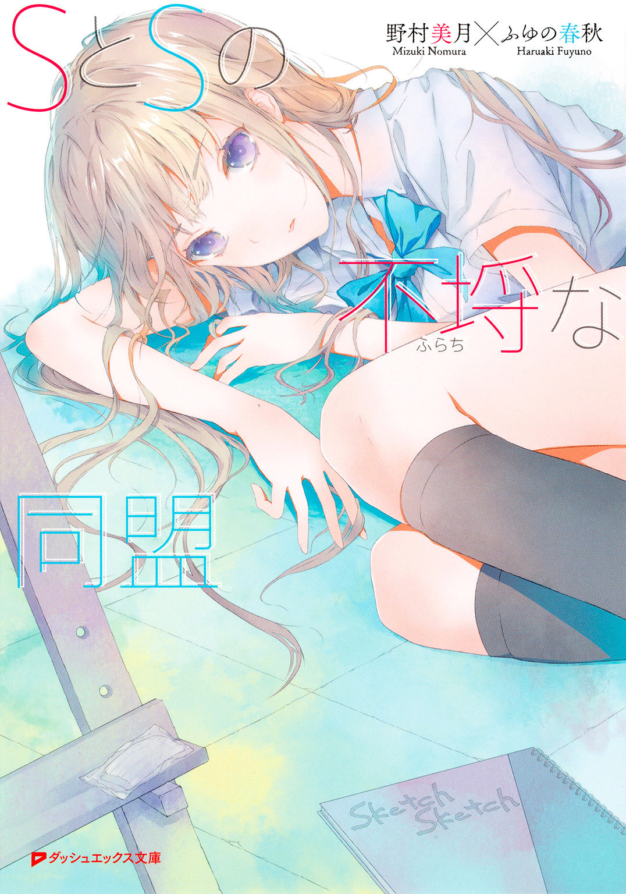
この本は縦書きでレイアウトされています。
また、ご覧になる機種により、表示の差が認められることがあります。
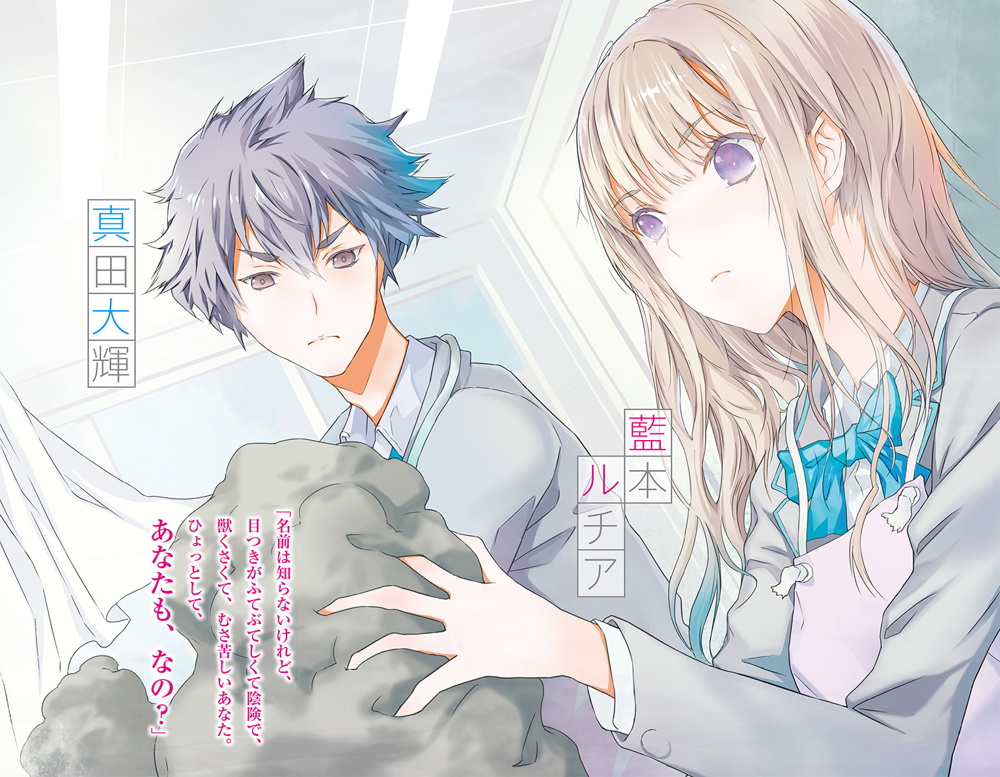
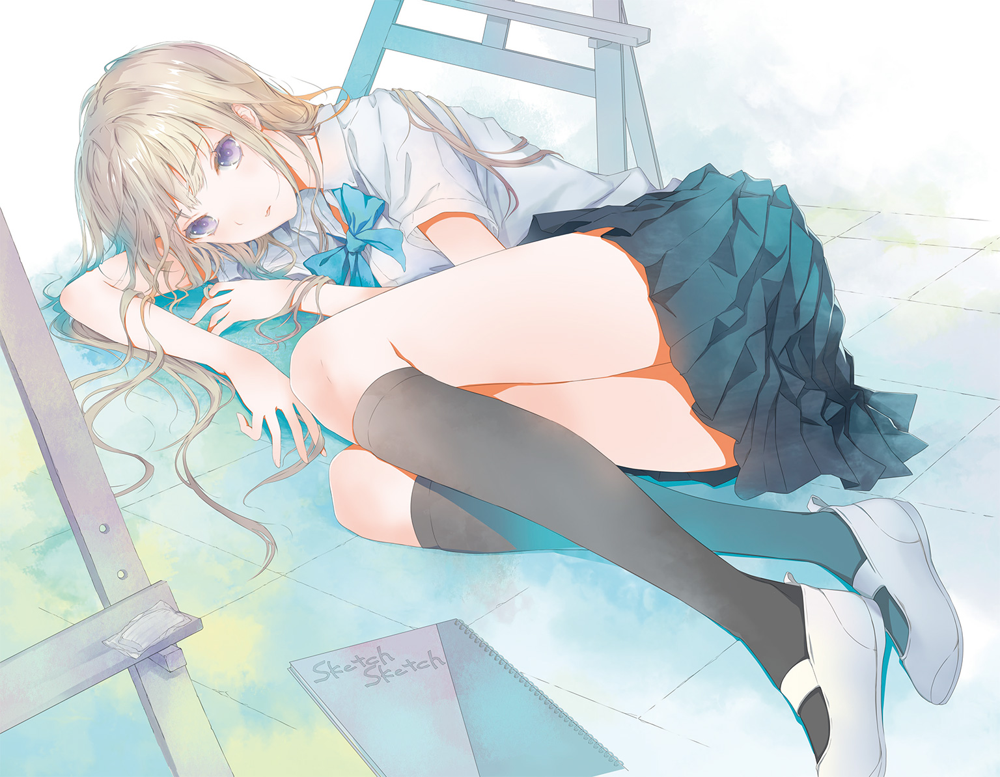
 ダッシュエックス文庫DIGITAL
ダッシュエックス文庫DIGITAL
ＳとＳの不埒な同盟
野村美月
第一話 バイオリンの天使とフルートの妖精。そして不埒な俺たち
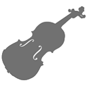
隣から甘く切なげな溜め息が聞こえ、俺――真田大輝は視線を横へ向けた。
「はーっ」
ラピスラズリのような青く深い瞳をしっとりとうるませ、大理石のようにすべらかな白い頰を薔薇色に染め、窓の向こうを見つめていたのは、流れる金髪がえらく目にまぶしい、校内で有名な女子だった。
（藍本ルチア！ まさか、こいつも）
息をのむ俺を、きらめく瞳で咎めるように見て、校内一の美人で才女と噂に高いその女は、確認するような口調で言った。
「名前は知らないけれど、目つきがふてぶてしくて陰険で、獣くさくて、むさ苦しいあなた。ひょっとして、あなたも、なの？」
◇ ◇ ◇
俺が美術部員だと言うと、中学時代の友人も、現在のクラスメイトも、一様に驚きの声を上げる。
「えっ！ 大輝が美術部!?」
「バナナを描いても、りんごを描いても、夏みかんを描いても、みーんなドリアンになっちゃう芸術音痴のおまえが！」
「写生大会で張り出された風景画の建物の線ががたがたで、色も紫だの緑だの重ねすぎて、でろでろのホラーハウスみたくなってた大輝が美術部だと!?」
と、みんな目を丸くし、
「大輝のガッコって、生徒は絶対に、どこかの部に所属しなきゃならん決まりなのか？ それで楽そうな部を選んだのか？」
「なるほど、籍だけ置いてる幽霊部員ってやつか。まさか絵を描いたり、版画を彫ったりしてないよな？」
「美術室で漫画読んだり、昼寝したりしてるんだな。それならわかる」
と、勝手に推測し、納得しあう。
それほど、俺が美術部に所属しているということは、彼らにとって狂気の沙汰に思えるのだろう。
俺も面倒くさいので、あえて反論はせず、
「さぁ、どうだったかな......」
などとつぶやいておく。
俺も自分に芸術的センスが、ずっぽり抜け落ちていることは、小学校の図工の成績が五段階評価でずっと二だったことから、自覚している。
一応作品は真面目に提出していたので、先生もこちらの気持ちを思いやって一はつけられなかったのだろうが、俺が作った紙粘土のパンダを見て、隣の席の女子はあまりの不気味さに泣いていた。首が三つあって、目が飛び出ていて、舌の先が割れていたが、あれはパンダだったはずだ。
ともあれ、高校一年生の夏まで、俺はむちゃくちゃ練習がハードな陸上部に所属しており、先輩とちょっといざこざがあって、そこを辞めてからは、ずっと帰宅部だった。
それが何故、二年生の五月の今現在、美術部員として、校舎の四階にある部室に放課後かかさず通いつめているのか。
窓の前に机を置き、繊細な作業におよそ不向きなごつごつと骨張ったデカい手で、粘土をわしわしこねくりまわし、叩き、引きちぎり、はりつけ、名状しがたいシュールな物体を日々制作しているのか。
それは、俺がひそかに行っている、ある非公式な部活動のためなのだった。
そう、美術部員は仮の姿。
真実の部活動の、隠れ蓑にすぎない。
俺が十六歳の燃えたぎる情熱のすべてを捧げている、唯一にして至高の部。
それは――『鑑賞部』である。
内政干渉の〝干渉〟でも完全勝利の〝完勝〟でもセンチメンタルジャーニーな〝感傷〟でもない。
物事を静かに眺め、その本質的な意味をあきらかにする〝観照〟とも、ちょっとばかり違う。
景色やものを見て楽しむ〝観賞〟とも、やや異なる。
〝鑑賞〟とは、芸術作品などの美的価値を理解し、存分に味わうこと。
ゆえに、鑑賞には、その対象となるものが必要である。
俺にとって、世界中のどんな美術品よりも輝いている彼女。俺の鑑賞の対象者である美園千冬が、俺が名状しがたき物体を制作している美術室から中庭を挟んだ、ちょうど向かいの教室にあたる音楽室に、現れた。
俺と同じ私立エウレカ高校二年生で、肩の下あたりで揺れるやわらかそうな黒髪が清楚で、色白で小柄でおしとやかで、内気で真面目な女の子だ。
はじめて彼女を見たとき、世の中にこれほど自分の理想にぴったりの、細くて可愛くていじらしげな少女がいたのかと、意識が大気圏に吹っ飛ぶほどの感動を覚えた。
本命の高校の受験日にインフルエンザに感染し、布団の中で高熱と下痢で唸っていた幸運に、打ち震えたほどだ。
ちなみに、エウレカ高校のほうが偏差値は高かったが、俺の家から電車で片道一時間半もかかる。が、そんな長く退屈な登校時間の苦労が一瞬で吹き飛ぶほど、美園は愛くるしく、恥ずかしそうな微笑みも、桜色にぽーっと染まったいたいけな頰も、サクランボのような唇からこぼれ出る、ささやくような小さな声も、控えめにそっと目を伏せうつむく仕草も、すべてが俺のストライクゾーンど真ん中だった。
さっそく名前と学年とクラスをチェックし、美園が子供の頃からフルートを習っていて、合奏部に所属していることも調べ上げた。
部活動中、美園がいつも窓際の席で、フルートの練習をしていることも。
あの可憐な横顔を、少しでも長く見つめていたい。恥ずかしげな表情のひとつひとつに賞賛の溜め息をもらしたい。しとやかな仕草に癒やされたい。
が、しかし、合奏部に入るためには、楽器の素養がなければならない。なのに俺がさわったことがあるのは、せいぜいリコーダーとピアニカくらいで、楽譜も発情したオタマジャクシの群れにしか見えない。
それに、同じ部で、俺のような無愛想な男が、ぶしつけにじろじろと眺め回したりしたら、淡雪のように繊細な美園を、怖がらせてしまうだろう。
それは非常によろしくない。
この世でもっとも好ましいものを、本人に悟られないように、心ゆくまでガン見するには、どうすればよいか？
愛らしいつむじから、華奢な首元、慎ましくも可憐な小さな胸から、折れそうな腰、スカートからのぞく細い足まで、ねぶるように見つめ倒しても、相手に恐怖を与えないためには、どうあるべきか？
片道一時間半の登下校中に、頭を絞って考え抜いた結論が、美術部への入部だった。
もちろん入部前に見学して、窓からの眺めをさりげなく確かめた。
中庭を挟んだ窓越しに、銀色のフルートに可憐なサクランボ色の唇をそっと押しあて、白い頰をうっすらとピンク色に染め、しとやかに目を伏せた美園の姿が見えた瞬間、俺は自分の視力が、二・〇を遙かに超えた奇跡の領域にあることに、体の芯から打ち震えた。
美園が演奏を失敗したとき、恥ずかしそうに頰を染める様子や、うまく吹けたとき、清楚な唇をほんのちょっとほころばせて、嬉しそうに微笑む様子も、存分に〝鑑賞〟できる。
こうして俺は美術部員を隠れ蓑に、一人きりの鑑賞部を発足させたのだった。
要するに鑑賞部とは、好ましく美しいものを、心ゆくまで見つめ味わいつくす部である。
ただし、対象者にこちらの存在を知られないように、あくまで遠くから〝見つめる〟にとどめる。
それが、俺が決めた鑑賞部の絶対ルールだ。
この線を超え、美園に危機感や嫌悪感を耳垢ほどでも与えたら、それは神聖な部活動ではなく、ただのキモいストーカーになってしまう。
部活というからには、やはり楽しむだけではなく、ストイックさが必要だ。
また、そうした縛りがあるからこそ、ただ見つめるという行為が、高尚さをともなった深い歓びへと昇華する。
幸い美術部は、もともと部員が少ない上に、入部初日に挨拶に寄ってきた他の部員たちも、俺の手の中で形成されている、名状しがたき禍々しい物体を見るなり、
「うっ」
と声をつまらせ、かける言葉が見つからないというようにそそくさと離れてゆき、以後、話しかけてくることはなかった。
なので、周囲の干渉を受けず、鑑賞部の活動に励むことができる。
今日もまた、中庭に面した特等席で粘土をわしわしこねながら、この世でもっとも愛らしい、優しい、可憐なものを、鑑賞する。
フルートと美園の組み合わせは鉄板だな。ピアノでもバイオリンでも、あのかぎりなく清楚なエロさは、出せないだろう。
やはりこう、ひんやり冷たい銀色のフルートに、美園の清らかな唇がふれるところがクルわけで、一生懸命吹きすぎて頰がピンク色に染まってゆくのもいい。
楽譜を見るとき伏し目がちになるのが、またそそる。
おっ、今、なんか失敗したか？ 眉がちょっと下がった！ しゅんとして、頰がどんどん赤くなってゆくぞ。色が白いから、わかりやすいな。美園の恥ずかしそうにしょんぼりしてる顔は、やはり絶品だ。おおお、眉がまた下がった。
もっともっと虐めて、泣きそうな顔をさせてみたい。
そこで妄想をふくらませる。
わざと美園にひどいことを言ったり、素っ気ない態度をとったりし、美園が目に涙をためて、上目遣いに俺を見つめながら、あの細く小さな声でささやくのだ。
――大輝くん、い、意地悪です。
――そんなに虐めないで......ください。
――いやっ、は......恥ずかしい。大輝くん。
ああ、最高だ。
美園のエロい泣き顔万歳。
もちろん、現実の美園に意地悪をして泣かせたいわけではない。
美園が浮かない顔をしていると、なにがあったのかと心配でドキドキしてしまうし、合奏部の女子部員のサックスが、美園の肩に偶然ぶつかって、美園がほんのちょっとよろめくのを見てしまったときなど、窓を開けて、
「バカヤロー！ 気をつけろ！」
と叫びそうになったほどだ。
美園を傷つけたり、怖がらせたり、哀しませたりする者は、絶対に許せない。俺自身も含めてだ。
なのについ、涙目でぷるぷると震える美園ばかり妄想してしまうのは、おおいに矛盾している。
考えてみれば、幼稚園の頃、好きだった女の子を、毛虫のついた枝を持って追い回して、泣かせたことがある。
あの子の泣き顔は、最高だった。
幼少時代から、きっと俺はそういう性癖だったのだろう。
――変態だな。
好きな女の子を、こうやってねっとり、じっとりのぞき見している時点で、その称号からは逃れられない。
なに、たとえ変態でも、それを恥じたり、落ち込んだりすることはない。
変態嗜好は、無分別に外に垂れ流せば大問題だが、俺は誇り高き鑑賞部員なのだから。己の変態を、理性でおおい隠せなくてどうする。
大きく広がった木の枝を彩る緑の葉が、五月の陽射しを浴びてきらきら輝いている。空は青く晴れ渡り、空気までもきらきらしていて、音楽室の窓際で、フルートにサクランボ色の唇を寄せる美園千冬の、いじらしくも可憐な横顔に、溜め息をもらしたとき。
「はーっ」
隣で、似たような切ない溜め息が聞こえたのだ。
「むっ」
視線を横へ向けると、派手な金髪の女子生徒が俺のすぐかたわらの窓枠で頰杖をつき、溜め息をもらしていた。
プラチナゴールドの豊かな髪が、肩から腰に向かって、輝く金の奔流のように流れ落ちている。肌は大理石のように白くひんやりとして、すべりがよさそうで、くっきりした二重のまぶたや、気の強そうな高い鼻、肉感的な赤い唇といった高品質のパーツが埋め込まれた顔も、えらく華やかだ。
横を向いて前屈みになっているため、自己主張しまくりの大きな胸や、細い腰、形のよいヒップなどといったスタイルのよさも、ますます強調されている。
窓越しに、向かいの校舎を熱く見つめる瞳は、ラピスラズリのような深い青だった。
このウザイほどに存在感をただよわせた女を、俺は知っている。
クォーターで、四分の一日本人の血が混じっているとかで、金髪も青い目も自前で、成績もトップで品行方正、性格は知的でクール、学校一の美人で才女とか呼ばれているが、俺にはどうでもいい。
いかにも美人で頭がいいですという顔で、とりすました女は、好みではない。髪もわさわさと長すぎる。ただでさえ金髪でうっとうしいのだから、散髪しろ。プールの授業のとき、その髪はキャップの中におさまるのか。
ここが美術室でなければ、そして、その女がうっとりと見つめる視線の先にあるのが、音楽室でなかったら。
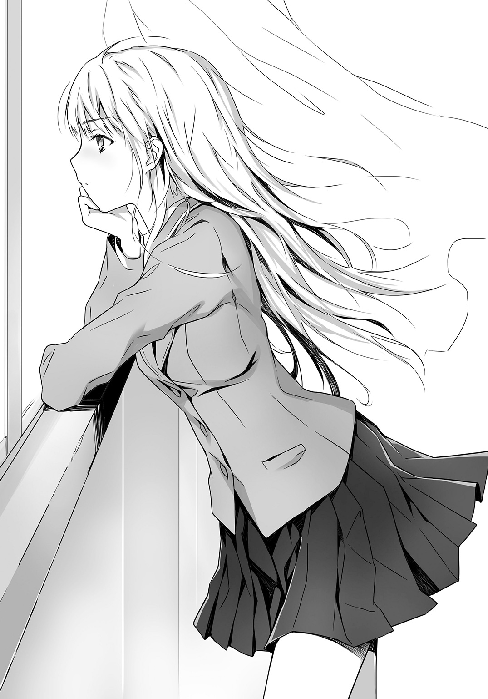
そこで合奏部の部員たちが、楽器を手に練習に励んでいるのでなかったら、顔をそむけて意に介さなかったはずだ。
しかし。
（藍本ルチア！ まさか、こいつも）
俺が息をのんだまま睨んでいると、きらめくラピスラズリの瞳が、咎めるように、探るように俺を見た。
そうして、ちょっと冷たい感じのする、尊大な口調で尋ねたのだった。
「名前は知らないけれど、目つきがふてぶてしくて陰険で、獣くさくて、むさ苦しいあなた。ひょっとして、あなたも、なの？」
やはりそうか！ と、頭の奥がカッと熱くなる。
美術室にはまだ他の部員は来ておらず、俺と藍本ルチアの二人きりだ。空気がピンと張りつめる。
俺たちは互いを威嚇するように睨みあい、同時に口を開いた。
「おまえは美園に、恋しているのか！」
「あなたも忍くんを、狙っているの？」
ルチアが目を見張る。俺も、へ？ という顔をしていたはずだ。
「忍って誰だ？」
「美園ってどなた？」
また声が重なる。
「目つきが犯罪者で、むさ苦しいあなた、忍くんを知らないの？ 合奏部の小笠原忍くんよ。バイオリンを弾く姿が最高に儚げで麗しい、二年一組出席番号二番の忍くんよ」
ルチアがこんな一般常識も知らないなんてと、いかにも上から目線の眼差しで言うのに、カチンとしながら、
「目つきが犯罪者なのは、おまえだ。合奏部といえば美園千冬に決まっているだろう。フルートを奏でる、可憐にして、しとやかなあの美園を知らんとは」
「いいえ、合奏部といえば、忍くんよ。華奢で繊細で、無垢で愛くるしいバイオリンの天使よ」
「いいや、清楚で純で健気ではにかみやな、フルートの妖精だ」
「忍くんよ」
「美園だ」
お互いの額がくっつきそうなほど顔を近づけ、歯を食いしばって睨みあったあと、はたと我に返った。
ルチアも唇をぐっとへの字にして、
「要するに、あなたは忍くんに不埒な視線を向けていたわけではないのね？」
と念を押した。
「俺はホモではない。おまえこそ、美園を見て、エロい溜め息をもらしていたわけではないのだな」
「わたしはレズじゃないわ」
ルチアが、金色の眉をつり上げ否定する。
神秘的なラピスラズリの瞳が、きらりと光る。
「ピュアで礼儀正しくて可愛い男の子が好きなのよ。忍くんのような」
「俺も、しとやかでか弱げで清純そうな女子が好きだ。美園のような」
「ならば、あなたは忍くんではなく、その美園さんとやらをこの窓からストーキングしていたのね。ここからなら、合奏部はのぞき放題ですもの。ストーキングには絶好のポイントよ。最高の特等席だわ」
「ストーキングだと？ はっ、そんな下衆な言葉で、自らの行為を貶めるとは。才女というのは評判倒れなようだな、藍本ルチア」
俺がせせら笑うと、ルチアはひんやりした表情で眉をひそめた。
「では、あなたはここでなにをしているというの？ まさか真面目に部活動をしていると言い逃れするつもり？ それこそ卑怯で醜いわ」
「いいや、言い逃れではなく、俺は純粋にこの場所で部活に励んでいる。ただし、鑑賞部の」
「カンショウ部？」
ルチアが、さらに眉をひそめる。
「それはなに？」
「美術鑑賞の『鑑賞』だ。鑑賞するのは、美術品ではなく美園だが」
俺は鑑賞部の活動内容や、絶対ルールについて、説明してやった。ただのストーカーとは違うのだと。鑑賞とは己の理性と人格が試される、よりストイックな行為なのだと。
ルチアは唇を結び、ひややかな顔で俺の言葉を聞いていたが、
「あきれたわ」
クールな声で言い、さらに、
「でも、素晴らしいわ」
頰を紅潮させると同時にラピスラズリの目を強く光らせ、さらにその目で俺を見据えて宣言したのだった。
「わたしも、鑑賞部に入部するわ」
なに！
◇ ◇ ◇
一週間後――。
はじめは、こんな派手で居丈高な女に隣に居座られたら、静謐な鑑賞部の活動に支障をきたすと、ルチアの入部を快く思っていなかったが、
「わたしは忍くんの清浄な姿を見ていれば、あなたのむさ苦しい顔なんて、一ミリも視界に入らないわ」
と言われて、
「俺も、美園の可憐な姿以外、余裕でシャットアウトできる」
「なら問題なしね」
「ああ、これっぽっちもない」
と答えていた。
ルチアは椅子を窓の正面に運び、膝にスケッチブックをのせ、木炭で写生しながら、窓の向こうへ熱い視線を注ぎ、そのかたわらで俺は俺の活動を続ける。
二日くらい、お互いの存在を無視しあっていたが、もともと似た者同士だったせいか、自然と言葉を交わすようになっていた。
「今日も、忍くんのお肌はつやつやと光り輝いているわ。水をぶっかけたら、透きとおった玉になって、はじくのでしょうね」
「美園の黒髪も、一段とやわらかさと艶を増しているようだ。一本一本が、繊細な漆黒の絹糸のようだ」
「わたし、視力が二・〇以上あってよかったわ」
「俺も毎日ほうれん草と納豆を食べて、この奇跡の視力の維持に努めている」
「同感ね。わたしもブルーベリーのサプリメントはかかさないわ」
お互い窓を向きながら、ひそひそと小声で語り合う。
顔は完璧なポーカーフェイス、手は休むことなく粘土をこねたり、スケッチブックに写生をしたりしている。
美術部員たちは、学校一の美人で才女と評判のルチアが入部し浮き足だっていたが、ルチアが隙のないクールな表情で写生に没頭しているのと、スケッチブックに描かれた絵が、ばらばら死体のようだったり、どろどろに溶けたスライムの群れのようだったりで、あまりにシュールで理解不能だったため、そこから目をそらし、こそこそ退散した。
今も、離れたところから、不可解なものを見る視線を俺たちへ送っている。
「ときに、あなたはなにを作っているの？ 真田くん？ 車にひかれて飛び散った豚の内臓かしら」
「飛び散った豚の内臓を見たことがあるのか、藍本ルチア。これは美園だ。おまえこそ、なにを描いている。地獄の針山に落下したとんびか？」
「針山に落下したとんびを、あなたは見たことがあるの？ これは忍くんよ」
ルチアが平然と答える。
無論、小笠原忍は、針山にもとんびにも似ていない。
絶対無垢な天使だの、この世で一番清らかな至高の美だのといったルチアの言葉を聞いていると拍子抜けする、ごくごく普通の、ちょっとばかし女顔の軟弱そうな少年だ。
「わたしが忍くんを見そめたのは、淡いピンク色の桜の花びらが美しく開いた新学期のはじまりだったわ。校内の廊下を歩いていたら、愛くるしい悲鳴が聞こえて、忍くんが目に涙をいっぱい浮かべて、へっぴりごしで飛び出してきて、わたしにぶつかったのよ。『ご、ご、ゴキ××が』――って、忍くんは子リスのように震えていたわ。忍くんを追って飛んできたゴ×ブ×を、わたしは、手にしていた鞄で叩き落とし、足で踏んづけてあげたの。忍くんは真っ青な顔で、わたしを見上げていたわ。まだゴ××リに襲われたショックから立ち直れないらしくて、声も出ないほどだった。わたしは、なにも言わずに立ち去りながら、忍くんの涙に濡れた可憐な瞳を思い出して、心臓を早鐘のように鳴らしていたわ。そうしてその晩、日記に空色のペンで書いたの。『理想の天使に巡り会った』って――」
ルチアが踏んづけたモノの後始末は、誰がしたのだろう......と、余計なことが気になった。
そもそも黒光りする虫ごときに怯えて、半べそで逃げまどっていたとは、同じ高二男子として嘆かわしいかぎりだが、ルチアにとってはそんな軟弱さこそ萌えポイントであるらしい。
音楽室の窓際で、小さな顔を品よく傾け、バイオリンの弓を動かしている小笠原忍を、青く燃えるラピスラズリの瞳で、じっと見つめ、うっとりと溜め息をつく。
「ああ、忍くん。あの可愛らしい耳たぶに、わたしの瞳と同じ色のピアスを、麻酔なしで突き刺して、綺麗な顔を恐怖と苦痛にゆがませたい。冷たい言葉でちくちくいたぶって、涙ぐませたい」
目をうるませて語る様子は、もとの造作が整っているため、黄金の女神のように気高く、深い慈しみさえ感じさせるが、内容はひどい。
「忍くんの鼻と口をふさいで、息を止めてあげたい、苦しんで細い手足を力なくぱたぱたと動かして、涙に濡れた目でわたしを見上げて懇願する忍くんが見たい。あの細いうなじに、かたつむりをのせてあげたい。ひやっとした感触に驚いて、気持ち悪がる忍くんのゆがんだ顔を見たい」
「ゆがんでいるのは、おまえだ、藍本ルチア。それを実行したら、学園の女王から変態への転落は確実だぞ」
冷静に指摘してやっても、恥じ入る様子はなく、
「学園の女王など、わたしには不要なタイトルよ。薔薇は名を変えても美しく香るとシェイクスピアが言っているように、たとえ女王から変態と名を変えても、わたしの美しさや知性に変わりはないわ」
と言い切る。
「それに、妄想はあくまで妄想として楽しむものだということぐらい心得ているし、自分の欲望を無分別に垂れ流して、他人を不快にさせたりしない理性と自制心はあるつもりよ。こんなことは、真田くんにしか話さないわ」
「俺はいいのか」
「ええ。わたしと同じくらいキモくて痛いから。なのに、そんな自分を肯定しているから」
「そうだな。俺たちは同じ穴の狢だ。藍本が変態なら俺も変態だ」
「そう、わたしたちは理性の皮をかぶった変態で、誇り高い鑑賞部員よ」
「そのとおりだ」
問いかける声も答える声も、どちらもクールで素っ気ないが、そこにあたたかな共感が芽生えているように感じられた。
いけすかない金髪女だと思っていたが、芯の一本通った、たいしたやつじゃないか、藍本ルチア。
ルチアも俺のほうへ、ちらりと視線を向けて、唇をほんの少しほころばせたようだった。
「真田くんは陸上部の先輩と喧嘩して、退部したのですってね。その先輩が、特定の一年生をパシらせているのに、抗議したのだと聞いたわ。正義感が強いのね。とても意外だわ」
「あれは、先輩がそんとき着ていたピンクにペンギンのプリントのＴシャツが、気にくわなかっただけだ」
正面を向いたまま答えると、ルチアはまた目を細め、くすりとしたようだった。
それから、おだやかな沈黙が続いたあと、ルチアが言った。
「わたし、今まで、自分の胸の内だけで忍くんを思ってきたけれど、それを打ち明けることができる相手がいるというのは、なかなかいいものね」
「俺も、一人きりで鑑賞部の活動を続けてきたが、二人もいいものだ」
「好きな人のことを、のろけるのって楽しいわ」
「俺も誰かに、美園の話を聞いてほしいと願っていたのかもしれない。美園の恥ずかしそうに染まったピンク色の頰は至純だと。あの頰を、水晶のような涙の粒でびしょびしょに濡らしたいと、語りかましたかったのかもしれない」
「わたしも、忍くんを、ちくちく虐めて、呼吸困難に陥るほど泣かせたいわ。そのあと、ぎゅーっと抱きしめたいわ」
「美園は、緊張しているときの体を小さくきゅっとすくめている様子も、そそるんだ。もっと怯えさせたい。あの絹糸のような髪に、毛虫をのせてやりたい」
「忍くんを監禁して、黒い鎖で繫ぎたい」
「美園に赤い首輪をつけて、無理やりワンと鳴かせたい」
どんどん危ない方向へ突っ走る妄想を、俺たちは美しい芸術品を前に感想を述べあうように、清々しい表情で語りあう。
俺の胸はとどろき、熱いもので満たされる。
なんという至福だろう。
「やはり美園はフルートの妖精、いや、女神だ」
「忍くんはバイオリンの天使。いいえ、わたしの世界を形成する神そのもの」
お互い、うっとりと目を細めた。この輝かしい時間が、永遠に続くように錯覚したとき、それは起こった。
向かいの音楽室の窓辺でフルートとバイオリンを熱心に奏でていた美園千冬と小笠原忍が、ふいに――ぴくりと肩を揺らし、顔を上げた。
そうして、美園が小笠原を。
小笠原が美園を。
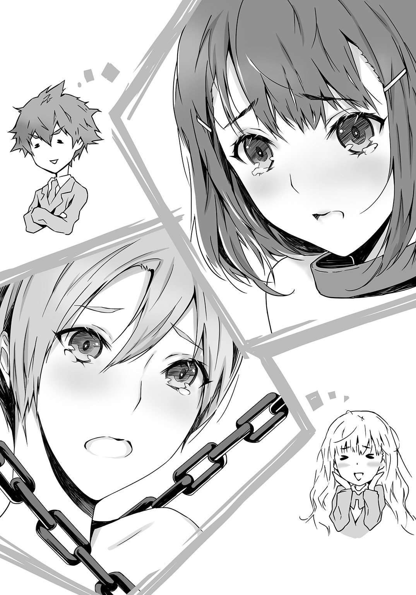
お互いに見つめて。
儚く肩を跳ね上げたあと、二人同時に慌てたようにうつむき、そのあと、ぽーっと頰を赤らめた。
なんだ、今のは......。
窓のこちらで一部始終を目撃した俺は、固まっていた。
隣でルチアも同じように硬直している。
青春真っ盛りの少年少女が、見つめあい、はにかむように目をそらし、うつむきあうなんて、まるで恋愛映画のワンシーンを見るようで――。
胸が、ざわりと鳴った。
いやっ、単なる偶然だ！
まさかあの二人が、互いに好意を持っているだなんて、そんなことあるわけがない。
あってほしくない。
俺の隣で、こわばった顔で沈黙を続けるルチアも、同じことをぐるぐると考えているに違いない。ルチアを支配し拘束している焦りと混乱と、疼き続ける胸の痛みが、俺にはよくわかる。それはそっくりそのまま、俺の心情だから。
どうか、偶然であってくれ。
気のせいであってくれ。
胃が削れるような気持ちで、そう願ったこの日。小笠原と美園が目を合わせることはもうなかった。
けど――。
うつむき加減にバイオリンを鳴らす小笠原忍を、美園千冬がそっと視線を上げて、恥じらいとともに見つめたことを。
しとやかに目を伏せ、フルートを奏でる美園のほうへ、小笠原が焦がれるような眼差しを送ったことを。
俺とルチアだけは、知っていた。
◇ ◇ ◇
どうやら鑑賞部は、重大な危機に直面しているらしい。
数日後。
俺とルチアは、ますます焦燥を募らせていた。
はじめて危険を感じたあの日以来、小笠原忍と美園千冬は、頻繁に視線を合わせるようになった。
最初はタイミングが合わず、どちらか一方がもう一方を見ていても、向こうは気づかずに稽古に励んでいることが多かったが、だんだん相手の視線を察知できるようになったのか、片方が相手を見ていると、残る片方も顔を上げ、目が合うことが多くなった。
お互いぴくりと肩を揺らし、すぐに恥ずかしそうに視線をそらしてうつむき、またちらりとまつげを上げる。
そうして繰り返し目があって、頰を染め、またうつむくという具合だった。
おかしい......俺は美園の恥じらう表情が、どんなオカズよりも大好物のはずだったのに、美園が小笠原を見て頰を染めると、胸が苦しい。
隣でスケッチブックを広げたルチアも、木炭を持ったまま手を止め、切なそうに唇を嚙んでいる。
「......」
奔流のようなプラチナゴールドの髪も、心なしか艶がない。燃えるようなラピスラズリの瞳も、今日は鎮火気味だ。
と、いきなりルチアが、口を開いた。
「......真田くん」
「なんだ」
「............なんでもないわ」
ずいぶん長いこと目を伏せ、苦しそうな沈黙を続けたあと、ルチアは硬い声で、そうつぶやいた。
なんでもない、と。
そうして、スケッチブックに向かって、木炭をがしがしと叩きつけるようにして、線を加えはじめた。
まるで絵を完成させることに、すべての力を注ぎ込むかのように、唇を嚙みしめ、伏せた目でスケッチブックを睨み、手を動かし続ける。
これまで、だらだら絵を描きつつ、窓の外を眺めては、向こうの校舎にいる小笠原忍を鑑賞し、うっとりと目を細めていたのが、決してそちらを見てはいけないと、誰かに止められているように、スケッチブックだけをひたすら睨みつけるのだった。
俺は、そんなルチアに、声をかけそびれていた。
校舎が閉まる時刻になり、一緒に美術室をあとにする。
黒っぽい夕日が校庭を染めている。
二人並んで、無言で歩く。
ルチアは険しい眼差しで、足元を見つめている。空気はひんやりしているのに、体がやけに汗ばんで感じられた。
校門を出たところで、
「......わたし、こっちだから」
俺のほうを見ないまま、そうつぶやいて去ろうとするルチアの手を、俺はとっさに腕を伸ばしてつかんでいた。
折れそうに細い手首に、どきりとする俺を、ルチアが歯を食いしばって振り返る。
なにをするの、と咎めるように俺を睨む。
どこか必死で、いっぱいいっぱいなその強気で気弱な表情に、また口にすべき言葉が喉で止まってしまい、しばらく見つめあったあと、
「......悪かった」
と、ぎこちなく手を放した。
ルチアがこわばった顔でうつむく。
「謝るようなことを、したの？」
答えられない。
自分でも自分の行動がよくわからなくて。
ルチアが俺から目をそらしたまま、
「さよなら」
と素っ気なく言い、遠ざかる。
俺はその場に、根が生えたように立ちつくしている。
ルチアは、部室でなにを言いかけたんだ。
俺に、なにを言いたかったんだ。
きっと大切なことを言おうとしていたのだ。
あのとき俺のほうへ向けられたルチアの表情は、ひどく切羽詰まってて、儚げで、苦しそうだった。
けど、結局、聞き出すことができなかった。
風がまた冷たくなった。
夜に染まる道路の向こう側へ消えてゆく、冷たくきらめく奔流のような金色の髪を、俺はじくじく疼き続ける胸の痛みを感じながら、見つめていたのだった。
◇ ◇ ◇
翌日の休み時間。
俺が寝不足で自分の机で頰杖をついて、昨日のことを考えていたら、クラスメイトたちの声が聞こえた。
「おまえ、訊いてみろよ」
「いや、だって。まさかなー」
「だよな、大輝が藍本と、だなんて」
俺とルチアのことらしいとわかって、首をそちらへめぐらせる。
「俺に用か？」
こちらから声をかけると、気まずそうに首をすくめ、近づいてきた。
「大輝って、藍本ルチアとつきあってるのか？」
は？
一瞬、頭の中が白くなった。
こいつら、なにを言ってるんだ？
ルチアと俺がつきあっているだって？ そんなこと、レッドペッパーごっそりの激辛カレーに、青唐辛子たっぷりのトムヤムクンをかけて食うくらいありえない。
「昨日の放課後、大輝と藍本が手を繫いで下校しているのを見たってやつがいて、噂になってるんだ」
「なっ」
「美術室で二人で椅子をぴったりくっつけて内緒話してるって、美術部のやつも証言してて」
「そう、あれは絶対デキてるって」
啞然としたあと、俺は（冷静になれ）と自分に言い聞かせながら、
「俺と藍本は、同じ部に所属する仲間なだけで特別な関係ではないし、家も正反対の方角だから、一緒に下校もありえない」
と説明した。
口調がぶっきらぼうで、眉もひそめていたので、怒っているように聞こえたかもしれない。
「そ、そうだよな」
「ありえねーよな。藍本って、高校生の男になんか興味ねーって話だし」
と、クラスメイトたちが腰を引き気味にしながら、納得しあう。
俺のほうは、まだ胸がむかむか、もやもやしていた。
くそっ、昨日、俺がルチアの手をつかんだのを、誰か見ていたのか？ それで尾ひれがついて、俺とルチアがつきあっているだなんて、とんでもない噂が出回ってしまったのか。
俺は一般人だが、美人で金髪のルチアは、エウレカ高校では有名人だ。きっと今頃、噂はさらに拡大しているに違いない。
なんとか手を打たないと。
椅子から立ち上がり、ルチアのクラスへ向かう。
けれど、教室の中を見渡しても、あの目立つ金髪頭は見あたらなかった。あまりうろうろしていては、噂を煽りかねないので、仕方なく退散する。
次の休み時間も、その次の休み時間も、さりげなくルチアの教室をのぞいてみたが、やはり見あたらない。
ひょっとして、欠席しているのか？
五時間目。
廊下から、またルチアの教室をこっそり見ていると、
「真田くん？」
と、去年クラスメイトだった女子に声をかけられた。
「ルチアに会いに来たの？」
「あ、いや、......そうだが。俺と藍本はただの部活仲間で」
慌てて聞かれもしないことを口走ると、おかしそうに笑って、
「うん、ルチアもそう言ってたよ。真田くんと自分はＳ同士だから、共犯者にはなれても、恋人にはなれないって」
「――っっ」
あいつ、そんなこと言ったのか。Ｓ同士ってなんだ。いや、そのとおりかもしれんが。
ますます焦る俺に、向こうは急に心配そうな顔になり、言った。
「ルチア、仕上げたい絵があるからって、休み時間もずっと美術室にこもってたんだけど、昼休みが終わったあと、気分が悪くなって早退しちゃったんだ。ちょっと疲れただけだから、一日寝れば治るって、本人は言ってたけど」
「そうか......教えてくれて、ありがとう」
礼を言って、自分の教室へ戻った。
早退だと？ 本当に大丈夫なのか？
それに絵を仕上げるためって......。
昨日も、必死に絵を描いていたが、何故そうまでしてルチアは絵を仕上げようとしているのか？
やっぱり謎だった。
◇ ◇ ◇
すべての謎が解けたのは、この日の放課後だった。
美術室で、一人で窓辺の席に座り、またルチアについてあれこれ思案していたら、
「あの、すみません」
おとなしげな声がして、女の子っぽい顔立ちの男子生徒が、美術室の出入り口から小さい顔をのぞかせた。
小笠原忍だ！
窓越しにしか見たことのなかった少年が目の前に現れ、声まではっきり聞こえることに心臓の鼓動を速めながら近づいてゆく。
近くで見ると、肌のきめこまかさや、さらさらした髪質には目を見張るものがあったが、やはり絶世の美少年とか、天使とかいうほどのものではない、ごく普通の小柄な少年だ。
小笠原は手に持っていた筒状の紙を、大切そうに俺のほうへ差し出した。
「これ、昼間に藍本さんが見せてくれて、そのまま忘れていっちゃったんです。すみませんけど、返しておいてください」
小さな声で、丁寧に言う。
「......藍本が描いた絵だな」
「えっ......う、うん」
小笠原が急に言葉を濁し、丸い目を泳がせ、微妙に困ったような表情を浮かべる。
それで、ピンときてしまった。
ルチアは、小笠原に告白したのだと。
――......真田くん。
――............なんでもないわ。
あのときルチアが引っ込めた言葉。そして、何故、ルチアがムキになって絵を完成させたのかということ。
昼休みが終わったあと、具合が悪くなったと早退したことも含めて、すべてがひとつに繫がり、頭の奥がカァァァッと熱くなった。
あのときルチアは小笠原に告白する決意をして、それをどう思うか俺に相談しようとしていたのだ。
絵を完成させたのは、自分の気持ちがこもったその絵を小笠原に見せるためで、早退したのはきっと――。
心臓が捻られたような痛みが走る。口の中に、苦い唾がたまってゆく。
ルチアは、小笠原に失恋したのだ。
「じゃあ、お願いします」
小笠原が俺の手にルチアの絵を残して、部屋を出てゆく。
広げると、できそこないの福笑いのような――ひしゃげたまんじゅうのような――シュールな物体があった。
これが自分の似顔絵であったことに、はたして小笠原は気づいただろうか。
「きっと、わからなかっただろうな......」
低い声でつぶやいたとたん、胸がきりきりと痛んだ。
俺は自分が失恋したみたいに歯を食いしばり、ルチアが描いたその絵を見おろしていた。
◇ ◇ ◇
翌日、休み時間にルチアのほうから、俺のクラスへやってきた。
「ちょっといいかしら？」
「お、おう」
さっぱりした表情のルチアに戸惑いながら、美術室へゆく。
カーテンが閉まっていて、部屋の中は少し薄暗い。二人きりになるなり、ルチアは肩にかかる豊かな金色の髪を、しなやかな手で後ろに振り払い、まっすぐに俺を見つめて言った。
「昨日、わたしの教室まで来てくれたらしいわね」
「......」
「ありがとう」
「いや......」
「わたし、鑑賞部を退部するわね」
「......」
俺は黙っている。
「驚かないのね」
「......昨日、放課後、小笠原忍が、おまえが描いた絵を持ってきた。忘れ物だから、返しておいてくれって。俺が預かってる」
ルチアの瞳に、はじめて気弱な光が浮かび、ほんの一瞬だけ泣きそうな顔になった。それをこらえるように、口の端に力を入れたようだった。
「そう」
手で髪をいじる仕草をしながら、うつむく。
「忍くんね、もう好きな人がいるんですって。だから、わたしの気持ちにはこたえられないけれど、ありがとう、嬉しかったって......言ってくれたわ。絵も、わたしが忍くんに見てほしいって言ったら、嫌な顔せずに受けとってくれて、哲学的な絵だねー、さすが藍本さんだねーっ、きっとものすごく深いテーマがあるんだろうねーって、一生懸命に褒めてくれて......」
声が掠れて、途切れる。
喉を小さく鳴らし、顔を上げて笑った。
「本当にイイコなの。さすがわたし、見る目が高いわ」
胸が痛くなるような、あざやかな笑みだった。
奔流のような豊かな金色の髪がくっきりとした白い顔を彩り、ラピスラズリの瞳が、強く切なく輝いている。
それから、また少し淋しげな顔になり、
「実は、心のどこかでホッとしているの。忍くんが、わたしの美貌によろめいて告白をオッケーしたら、嫌いになっていたと思うから。簡単に心変わりする男なんて最低だもの」
だから、忍くんが、理想のままのピュアでひたむきな男の子でよかったのだと、本音だか強がりだかわからない、明るい切ない口調で――ときおり涙をしりぞけるようにまばたきしたり、息をのんだり、髪の先を指にからめたりしながら、語るのだった。
きっと、本音と強がりと、その両方だったのだろう。
「......藍本」
「慰めたりしないでね。真田くんはわたしと同じＳだから、そういうの似合わないわ」
開きかけた口を閉じる。
確かに、この堂々としたあざやかな瞳の女に、同情や慰めは似合わない。俺がルチアでも、同情されたいとは思わないだろう。
藍本ルチアは、誇り高い女だから。
だから俺は、慰める代わりに背筋を伸ばして言った。
「退部は、あと一日待ってくれないか。明日の放課後、鑑賞部の最後の部活動をしよう。そのとき、藍本に報告したいことがある」
◇ ◇ ◇
昼休みに、美術室へ来てほしい。
そう書いた手紙を、美園千冬の下駄箱に、朝一で入れた。
ずっと窓越しに見ているだけで満足で、告白しようとか、つきあおうとか考えたことは一度もなかった。
ただ、美園千冬という可愛らしくて、清楚で、いじらしい、理想そのものの少女を眺めているだけで、嬉しくて。
窓の向こうの美園は、自分が一方的に見られていることなど知らないから、それをいいことに、勝手な妄想もいっぱいした。
数え切れないほど美園を泣かせて、繰り返し赤面させた。それでも、窓の向こうの美園は、汚れることなく、しとやかにうつむいて、フルートを吹いていた。
まるで見る者の心をかきたて、感動を与え、無限に想像をめぐらせる、至上の芸術品のように。
いくら鑑賞しても、飽きなかった。
叶うことなら、ずっと見つめて、想像していたかった。
だけど、彼女が小笠原忍と見つめあい、はにかみあうのを見てしまったとき、気づいてしまった。
美園千冬は、鑑賞されるための芸術品ではなく、自分の意志を持った生身の女の子なのだと。
妄想の中では俺の理想通りの表情を浮かべ、理想通りの言葉を話すけれど、現実の美園は、決して俺の自由にはならないことを。
俺という人間のゆがみを、自覚し、制御し、楽しんでいるつもりでいて、本当には気づいていなかった。これは遊びなのだ、誰にも迷惑をかけていないのだからよいのだと目をそらして、気づかないふりをしていたのだ。
それが、不意打ちのように突きつけられた現実の痛みを、美園と小笠原が見つめあったあのとき、知ってしまった。
もう、美園は、俺の妄想を具現化する人形ではない。
自分の意志を持ち、部活仲間に恋もする、普通の高校生だ。
きっと、ルチアも同じことに気づいた。
それで、小笠原に告白するという形で、ケジメをつけたのだ。
鑑賞部は、解散だ。
けど、その前に――。
ドアが静かに開いて、美園千冬が美術室へ入ってきた。緊張のためか体をこわばらせ、少し青ざめている。
「あの......わたしに、お話って......」
俺が好きでたまらなかった、サクランボ色の唇で、儚げなか細い声で、一生懸命に言葉をつむぐ。
俺は昨日家に持ち帰って、大急ぎで仕上げた粘土細工を、デカくてごつい両手で美園のほうへ差し出した。
美園が目を丸くし、絶句する。
どろどろに溶けてゆがんで、いびつで、グロテスクな、なにか。
美園をモデルにして制作したのだと言ったら、ショックで泣き出すかもしれない。
きっとこれは美園ではなく、俺自身の――真田大輝の心。
だから、たとえ引かれても、軽蔑されても、美園を見つめ続けたあいだに積み重ねた気持ちを、伝える。
「見てほしくて――美園に」
そう。怯えられても、気味悪がられても。
藍本ルチア、おまえも、こんな気持ちだったんだな。
美園は目を丸くしたまま固まっている。不気味な粘土細工に、どう感想を述べてよいのか、そもそも何故、自分が感想を求められているのか、激しく混乱しているに違いない美園に向かって、俺は告白した。
「俺は、ずっと美園が好きだった」
美園が息をのむ。
困っているような、泣き出しそうな顔。
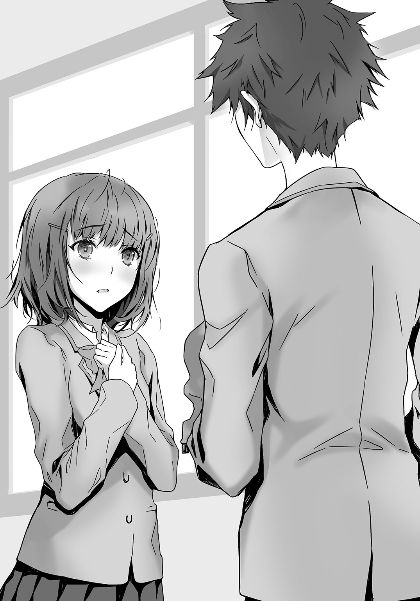
「すまない。美園に他に好きなやつがいることは知っている。だから美園を困らせるつもりはなくて、ただ最後に自分の気持ちを伝えたかった。この像は、美園を想って作ったから、美園に見てほしかった」
「あ、あの......」
美園が眉根をますますハの字に寄せて、一生懸命に言う。
「とっても......ど、独創的な像だと思う......。こういう奇抜な作品も、よいと、思う......の」
どうにかして褒められる部分を見つけ出そうと、必死に頑張っている姿に、胸がきゅーっとした。
――本当にイイコなの。さすがわたし、見る目が高いわ。
またルチアの声が、笑顔が、浮かび、体の奥が熱くなる。
ああ、美園もいい子だ、心の綺麗な優しい子だ。
ゆがんだ想いではあったが、想い続けた相手が彼女で本当によかった。
「ありがとう美園。おかげであきらめられそうだ」
静かに微笑んで、別れを告げたとき。
「どうして、あきらめちゃうんですかっ」
美園が高い声で叫んだ。
おとなしいはずの美園が、そんなすっとんきょうな声を出したことにも驚いたが、
「わ、わたしは確かに好きな人がいます......。気がつくと、その人がわたしのことを見ていて、それで、わたしも意識するようになって......」
「わかってる。美園が好きなのは合奏部の小笠原忍だろう。小笠原も、きっと美園のことが」
「違います。小笠原くんは、わたしのお姉さんの彼氏です」
「なに！」
「お、お姉さんの部屋で、き、キス――しているところを、見てしまって......お姉さんは大学生なのにっ、高校生とあんなこと......っ、わたし、小笠原くんと顔を合わせにくくなってしまって......小笠原くんも、わたしのこと赤い顔で、ちらちら見ているし......っ。そ、それは、どうでもよくてっ、とにかくっ、わたしは――」
姉の......彼氏だと？
小笠原忍が、美園の姉の彼氏？
口をあんぐりと開け放つ俺を、美園がうるんだ目で見つめる。白い頰がうっすらと染まっている。
俺の心臓の鼓動が跳ね上がり、汗が噴き出す。
「わたしが好きなのは――」
◇ ◇ ◇
「どうして断ってしまったの。美園さんと両想いだったのでしょう」
放課後。
スケッチブックに、かつかつと木炭を走らせながら、ルチアが理知的な口調で尋ねた。
「......わからん」
粘土をこねながら、ぼそりと答える。
何故、美園に向かって『すまん』と頭を下げてしまったのか。涙ぐんで美術室から走り出ていった彼女を追いかけなかったのか。
合奏部の窓辺に今日は、美園千冬の姿も小笠原忍の姿もない。
俺とルチアも、窓に向かって椅子を置くのではなく、お互い向かい合って、それぞれの作品をだらだら進めながら、会話を続けている。
「鑑賞部員失格ね。対象者に、気づかれていたなんて」
「......面目ない」
「しかも、恋されてしまうなんて。なんて都合がいい」
「......う」
「なのに振るなんて、バカね」
はっきりきっぱり冷静に――ルチアが言う。
「俺のこと、軽蔑するか。簡単に心変わりしたから」
「そうでもないわ」
素っ気なく答えたあと、
「何故かしら」
と、つぶやいた。
「鑑賞部は、退部するんじゃなかったのか」
「ええ。鑑賞部は卒業よ。けど、次に打ち込めるものが見つかるまで、美術部にいてもいいでしょう。真田くんこそ、ここにいる目的はなくなったんじゃないの」
「俺も、鑑賞部の代わりの部が見つかるまで、美術部員を続けようかと」
「そう。真田くんは、今度は粘土でなにを作っているのかしら」
「藍本は、なにを描いているんだ」
お互い、黙ってしまう。
俺は、ルチアをモデルにしているのだとは明かせなくて。
美園千冬に頭を下げたとき、何故だかルチアの顔がよぎったことも、言い出しにくくて。
「......」
ルチアのほうが何故黙っているのかは、知らない。冷静な顔をしているが、ルチアは心なしか頰が少し赤い。
互いに咳をし、誤魔化しあう。
ルチアがクールな表情と、素っ気ない声で言った。
「次は、男女交際を検証する部なんて、いいかもしれないわね」
それに対して、俺もクソ真面目に答える。
「そうだな、レッドペッパーごっそりの激辛カレーに、青唐辛子たっぷりのトムヤムクンをかける方法を探るとか」
二人きりの部活動は、しばらく続きそうだった。
第二話 うさぎ小屋の薄幸美少女～なわけはない不埒な同類
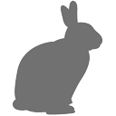
あれだ、梅雨に入ると空気がじめっとして、うっとうしいな。
教室の中にいても、制服のシャツが水分をふくんで、体にべたべたとはりついているような気がする。
そんな、一年で一番憂鬱な季節。
放課後の美術室で、粘土をわしわしこねている俺に、向かい側で絵を描いていた藍本ルチアが、ラピスラズリの瞳をクールに光らせて、言った。
「わたし、好きな人ができたわ」
俺はとっさに間抜けな顔をしたはずだ。
好きなやつが、できた、だと？
あんぐり開いた口を慌てて閉じたものの、そのあと眉間に皺を寄せて、ルチアの奔流のように広がる豪奢な金色の髪や、大理石のようにひんやりした顔や、そこに浮かぶ涼しい表情を、まじまじと眺めてしまった。
幸いルチアは、膝に置いたスケッチブックに視線を落とし、常人には理解しがたい、なにかぐちゃぐちゃしたシュールな絵を創造し続けていたので、俺が向かい側で、粘土をこねる手を止めて一瞬とはいえアホ面をさらしたことには、気づいていないようだ。
いかん......。
わずかな動揺でも見せれば、Ｓなこの女のことだ、死ぬほどＳな眼差しで俺を見て、胸を突き刺すようなＳな発言をするに違いない。
なので、顔をいっそう引きしめ、
「ほほぅ」
と、いかにも余裕を感じさせる渋めの大人な声で、つぶやいておいた。
が、内面は、いまひとつ、しっくりしない。
つか藍本ルチアよ、おまえ、俺に惚れたんじゃなかったのか？
いや、惚れた――というのは、うぬぼれが過ぎるにしても、少なくとも惚れかけていたのでは。
俺とルチアが、他人に大きな声で言えない趣味嗜好により引き合い、同盟関係を結ぶに至った際のあれこれを、ジェットコースター並みの速度で思い返す。
あれは、ひと月ほど前――校内の木々がすっかり緑に色づく五月の頃だった。
当時、俺たちには、それぞれ好きな相手がいた。
ルチアは、小笠原忍という細っこくてなよなよした合奏部の二年生を、理想の天使と呼び、俺は、美園千冬という華奢で可憐で、恥ずかしがりの合奏部の二年生を、夢の国の妖精だと真剣に思っていた。
ここまでなら普通の片想いだが、俺とルチアには特殊な性癖があった。
無垢で愛らしい存在を、とことん恥ずかしがらせ、泣かせ、その赤く染まった頰やこぼれる涙を存分に眺めて、楽しみたいという。
そうしたことを想像するだけで、背筋がぞくぞくし、快感が脳天に突き上げるという、家族や友人に知られたらドン引きされること確実の、ゆがんだ感情が。
つまり、俺もルチアも筋金入りのＳだった。
が、それを公にしては、社会生活が崩壊するという理性もあり、好きになった異性に向ける邪な情熱は、ただ相手を見て一方的な妄想をふくらませることに、とどめていた。
そのためだけに、芸術的センスが一切ない俺が美術部に入部し、視力二・〇以上を誇る目で、美術部の向かいにある合奏部の練習風景を、ひたすら見つめていた。
そのストイックにして不埒な行為を、俺は〝鑑賞〟と名付け、一人きりの誇り高い鑑賞部員として、活動に励んでいたのだった。
同じように、小笠原忍を眺めるためだけに美術部に入部したルチアも、俺の考えに共鳴し、鑑賞部の一員になったのだ。
それまでルチアのことは、顔と名前だけは知っていた。俺と同じ二年生で、日本人の血が四分の一だけ混じっているクォーターで、プラチナゴールドの豊かな髪を颯爽となびかせて歩く、ひややかなラピスラズリの瞳の、長身の美人。
小柄で、か弱そうな女子に惹かれる俺の好みでは、まるでない女だ。
ルチアと俺のあいだにあるのは、共犯者としての仲間意識だけだと思っていた。
が、ルチアが小笠原忍に告白し、失恋したと知ったとき。それを俺に隠して、普段通りに振る舞おうとしているルチアの姿に、胸がズキッとしてしまって。
こいつも、女だったんだな......とか、弱い部分もあったんだなとか......とにかくルチアの淋しそうな顔が、頭にちらついて、あれほど好ましく思っていた美園千冬から、脈がおおいにありげな言葉をもらいながら、俺は、
――すまん。
と、頭を下げてしまったのだった。
それも、俺から告白した直後に。
このことを俺から打ち明けられたルチアは、ラピスラズリの瞳をひんやりとさせたまま、
「鬼畜ね」
と言った。
対象者に気づかれていたなんて鑑賞部員失格だとも。落ち込む俺に、ずけずけと、鑑賞部はもう卒業ねと言いながら、どこか楽しそうに、次に打ち込めるものが見つかるまで、美術部にいてもいいでしょうと。
――男女交際を検証する部なんて、いいかもしれないわね。
それで俺も、クソ真面目に答えたのだった。
――そうだな、レッドペッパーごっそりの激辛カレーに、青唐辛子たっぷりのトムヤムクンをかける方法を探るとか。
あのとき、俺たちのあいだには、同志としての共感と似ているようで違う、こそばゆい感情が流れているように感じられた。
お互いを憎からず思いはじめていて、男女としての共存の道を探っていたというか、正式なカップルになる前の、お試し期間に突入しかけていたというか。
ルチアも、俺と同じ意識でいたと思っていた。
確かに、この二週間、向かい合って絵を描いたり、粘土をこねたりしているだけで、進展はまるでなかった。
やっぱりロープは赤だな、最近は黒も捨てがたいと思うようになったわ、黒い蠟燭もそそるわ、ほーそんなモノがあるのか、ええ首輪も足かせも、今はなんでも通販で販売しているわ、とか。そんなマニアな会話をしているだけで、二人のあいだに甘い空気がただようことも、視線が合って、ドキッとして、顔を赤らめあうなんてことも、なかった。
そう、一切なかった。
なんてことだ。
美術部に残ることをルチアが告げたとき、頰がほんの少し染まっているように見えたのは、俺の目の錯覚だったのか？
それとも単に体調が悪くて、熱があっただけだったのかも。
つまり俺は盛大な勘違いをしていたと？
いや、待て。
もしかしたら、好きな人＝俺なのかもしれん。
ひねくれ者のルチアなら、そんな遠回しな言い方もしそうだ。
なので、落ち着きはらった口調で尋ねてみた。
「今度は、どこの誰を好きになったんだ」
ルチアはクールに、
「目の前のあなたよ、真田大輝くん」
と答え――たりはしなかった。
表情は氷の彫像そのものの麗しさと冷たさで、声もひんやりしていたが、ルチアが発したのは、知らない男の名前だった。
「産休代替教員の、暮林純平さんよ。彼こそ理想のアドニスだわ」
アドニス、だと？
しかも代替教員だと？
「彼は、合奏部の臨時顧問もしているの。ほら、あの教壇の前に、首をすくめておどおどと立っている、繊細そうな眼鏡の美青年よ」
ルチアがラピスラズリの瞳をきらりと光らせ、窓のほうへ向ける。
外はまだ梅雨の細かな雨が降り続いていて、窓に水滴が張りつき、驚異の視力を誇る俺でも、いつもより見えにくい。
それでも、一体どいつがアドニスだと、眉根を寄せて目を凝らす。
すると、音楽室の窓際で、ちょうどフルートを吹いていたかつての想い人――美園千冬と、視線が合った。
向こうは、俺ほど目がよいわけではないだろうから、この雨で視界が悪くなっている中、俺がなにを見ているかまでは、わからないはずなのだが。嫌な気配でも察したのか、儚くてか弱げな小さな顔を俺のほうへ向け、いきなりあかんべえをした。
そうして、ぷいっと横を向く。
美園にしてみたら、俺に一方的に惚れられ、執拗に見つめられ、告白までされて、『わたしも、あなたのことが』とＯＫの返事をしてみたら、『すまん』と謝られ、腹を立てるのは、じゅうぶんわかる。
ふざけんな！ という心境だろう。
あの告白からしばらく、美園が窓辺に可憐な姿を現すことはなかったが、ここ最近は、俺へのあてつけのように、窓辺でフルートを吹いていて、たまに眉をつり上げてこっちを睨んでいたりする。
そうして、俺と目が合うと、中指を立てたりする。
あの、しとやかで恥ずかしがりで、か弱い美園が！
いや、美園のおとなしげな外見や、すぐに赤面して恥ずかしそうにうつむく様子から、俺が勝手に美園を、そういう性格だと思い込んでいただけで、実際の美園千冬は、意外と気の強いやつだったのかもしれない。
それとも、俺を憎むあまり、性格が一変してしまったのだろうか。だとしたら非常に申し訳ないことだ。
美園のあかんべえに、複雑な思いを抱きながら、いや、今はアドニスだと、教壇のほうへ視線を移動させる。
なるほど。
そよ風にも吹き飛びそうな、弱々しげな眼鏡の男が、首をすくめていかにもおどおどした様子で立っている。
薄い茶色の髪は癖っ毛なのか、少しウェーブがかかっていて、肩幅は女子のように狭く、腰も細い。小さな顔に眼鏡をかけていて、細い指で、落ち着かなさそうに何度もフレームを持ち上げる。
そのせいで、手で隠れて顔がよくわからず、アドニスみたいな美青年かどうかはさだかではないが、いかにもルチアの好みそうな、Ｍっ気たっぷりの男であることはわかった。
隣で、ルチアが淡々とした中に、抑えきれない熱っぽさの混じる声で言う。
「純平さんは、今年音大を卒業したばかりの瑞々しい二十二歳で、音楽の村井先生の代わりに、先週から音楽の授業と、合奏部の指導を受け持っているの。はじめて、純平さんのしなやかで無垢な姿が、わたしの瞳に飛び込んできたのは、三日前の放課後だったわ。偶然音楽室の前を通りかかったら、真っ白な粉まみれの純平さんが、ドアの前で尻餅をついていたの。粉だらけの眼鏡をはずして、涙ぐむそのか弱げな表情に、きゅーんとしたわ」
「おい待て」
美園がまた怖い顔で俺のほうを見て、今度は立てた親指を下へ向ける。
なに、こっち見てんのよ変態、とでも、心の中で罵っているのだろうか。
それは、とりあえず置いておいて。
「何故、暮林は粉まみれだったのだ？ 学校の廊下でそういうプレイをする変態なのか？」
「いいえ。純平さんは、名前の通りまだ無垢よ。いずれは、そうした行為に羞恥と悦びの両方を感じるようになる素質があるにしても」
その未来を想像したのか、ルチアがＳっぽい微笑みを浮かべ、
「純平さんは、いじめられているの」
と、告げる。
「は？ いじめ？ 教師なのに？」
「新人教師がいじめにあうなんて、珍しくもないでしょう。特に純平さんのように、真っ白で繊細な美青年が、おどおどしながら新任の挨拶なんてしたら、上履きに画鋲を入れたり、生卵をぶつけたりして、可愛がり倒したくなるでしょう」
「まぁ、そうかもな」
俺も決して自分が聖人でないことは自覚しているので、そうつぶやいておく。
だが、赴任して一週間足らずで粉をぶっかけられるのは、早すぎやしないか？ 一体そこまで部員に嫌われるような、なにをやらかしたのだ。それとも合奏部にも、ルチアみたいなＳがいるのだろうか。
ルチアは金色のまつげにふちどられた瞳を、うっとりと細め、
「ドアをあけたとたん、チョークの粉が頭に降りかかってくるなんて、古典的すぎる陳腐な手だけれど、実際に目の当たりにしてみると、たまらなく美しくて、そそられる光景だったわ。真っ白な粉におおわれて、咳き込みながら涙ぐむ、雪のように儚い美青年。わたし、運命を感じずにいられなかったわ」
と語り続ける。
どうやらルチアは、粉まみれの眼鏡男にマジ惚れらしい。生来のＳ心が刺激されまくって、テンションがぐいぐい上昇しているのが、同じＳの俺にはわかる。
「藍本よ、おまえ前に、気持ちがころころ変わるのは最低だと言っていなかったか」
小笠原に失恋してから、まだ二週間だぞ。
するとルチアは、氷の女王のごとく堂々とした声音と表情で、
「わたしは、発展性のない恋にしがみついて、自分で自分の傷を抉るような真似をして悦べるマゾではないわ。むしろ相手の傷を抉り倒して、いじめたい派よ。忍くんを、女子大生の彼女から略奪愛して、いたぶり倒し、可愛がり倒すという選択もあるけれど、より発展性のある道を選ぶべきだと思うの」
「それはそうだが......」
先ほどから完全にスルーされているが、俺とのことはどうなる？ 意識していたのは俺だけだったのか？ 確かに俺は、ルチア好みのＭではなく、正真正銘のＳだが。
「というわけで、鑑賞部を復活させるわ」
俺がもやもやと考え込んでいるうちに、ルチアが俺と向かい合わせに配置していた椅子を、窓のほうへ向けてしまった。
「それと、復活にあたって鑑賞部のルールを一部改変するわ」
「改変だと」
「ええ。今までのルールでは、鑑賞対象は眺めるだけで、決して近づいたりふれたりしないこととなっていたけれど」
鑑賞部とは、好ましく美しいものを、心ゆくまで見つめ倒し、想像の中で味わいつくす部である。同時に、対象者にこちらの存在を知られないよう、あくまで遠くから〝見つめる〟にとどめる。
それが、俺が決めた鑑賞部の絶対ルールだった。
「忍くんを女子大生にもってゆかれて、わたしは覚悟が足りなかったことに気づいたの」
ルチアが凜と声を張る。
あらたに目標を定めた横顔は神々しくさえあり、つい見とれてしまった。もともと外見が、金髪に青い目のゴージャスな美人なので、こういう表情をさせると、ハマりすぎだ。
「これまで、わたしたちがしてきたことは、美術館に飾ってある絵を、一観覧者として眺めるようなもので、そのためのルールだったわ。でも、この先は絵のオーナーを目指すのよ。つまり、対象を自分の所有物とし、思う存分鑑賞し、愛でる方向へランクアップさせるの」
「なるほど」
剛毅な発言に、つい肯定のつぶやきをもらす俺を、きらきら光るラピスラズリの瞳でまっすぐに見つめて、当然のようにルチアが言う。
「協力してくれるわね、真田くん。もし今回わたしのために力を尽くしてくれたら、いつかあなたのＳ心を刺激する究極にＭな女の子に出会えたとき、あなたは心強い協力者を得ることになるわ」
俺は、おまえと恋愛できるんじゃないかと思っていたんだがな......。
が、それが俺の完全な勘違いであったことが判明した今、口にするのはみっともなさすぎるし、恥ずかしすぎる。
俺は恥ずかしいことを悦べるＭではない。
結局、カレーにトムヤムクンをかけても、辛いだけで旨くないということなのだろう。カレーはカレーで、トムヤムクンはトムヤムクンで、それぞれ味わうべきだと。
なので俺は、二週間前に想像した未来図を胸の奥に厳重に封印し、頰を引きしめ、重々しい口調で、
「......いいだろう」
と答えたのだった。
◇ ◇ ◇
それから五分後――。
俺もルチアと同じように椅子を窓のほうへ向け、合奏部の様子を観察する。
俺が椅子の向きを変えるなり、窓際にいた美園が目をむき、顔をみるみる赤くし、そのあと睨んできたが、決して嫌がらせではないことを、胸の内でつぶやいておく。
すまんな、美園よ。俺のことは、窓辺に置かれた秋田土産の等身大ナマハゲ人形とでも思ってくれ。
一方、暮林は、なにかにびくついているように、常に首をすくめ、腰を低くし、動作が落ち着かない。音大出身の教師として部員たちに指導しているようだが、教師の威厳はまったくなく、しょっちゅう肩をびくっと跳ね上げる。
それは主に、暮林の正面に陣取っているバイオリンを抱えた女子部員が、挙手することによってもたらされているようだった。
毛先を巻いた、つやつやの栗色の髪の、目鼻立ちのぱっちりした女子は、二年生の雛崎弓華のようだ。俺とは別のクラスだが、周りの男子が、美少女だとか、小柄だが胸が大きいとか騒いでいるので、名前と顔は知っている。ルチアよりも背が低く、ルチアがクール系の女王様なら、雛崎はそれより甘い感じのする我が儘なお姫様といった雰囲気だが、尊大そうなところは共通している。
無論、そうしたアクの強い女子は俺の好みではないので、雛崎に注目することは、これまでなかったのだが。
雛崎が白い手をすっと挙げるたび、暮林はあきらかにびくついている。雛崎が整った眉を尊大に上げて暮林を睨みつけるようなキツイ顔つきで発言しているあいだも、ひたすら身を縮めて硬直していた。
おいおい......高校生の女子相手に、教師がそこまでビビるか？ 雛崎に弱みでも握られているのか？
俺はあきれて見ていたが、ルチア的にはそこが萌えポイントらしく、
「なんて可愛いの......純平さん。まるでライオンの前に置き去りにされた、真っ白なうさぎのよう」
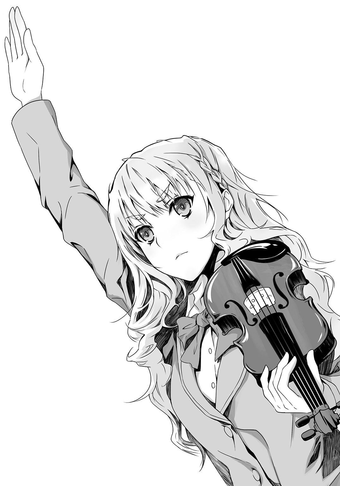
と、おだやかに目を細めている。
まぁ、俺も、気が弱そうな清楚な女のセンセーが、授業中、生徒にいじめられて、びくびくしていたら萌えただろうが。
ともあれ、暮林純平が合奏部でいじめられていることは、間違いないようだ。
ルチアがクールに言う。
「あの雛崎弓華の父親は、学校の理事にも顔のきく金持ちの有力者で、雛崎自身も合奏部の次期部長で、部の中心人物だから、誰も面と向かっては口出しできないし、雛崎の取り巻きも同調していじめに加担しているわ。チョークの粉を仕込んだのは一度きりみたいだけれど、ああして意地悪な質問をして困らせたり、純平さんの言葉をわざと無視したり、バカにして笑ったり――タンポポの綿毛のように繊細で揺れやすい純平さんは、すっかり萎縮してしまって、休み時間のたびに裏庭の隅のうさぎ小屋で、うさぎを見ては、心を慰めているわ」
「女々しいやつだな」
「図太いあなたと違って、純平さんは、オーブンに入れる前の真っ白なパン生地のように、やわらかな心の持ち主なのよ」
どうせ、俺はおまえの好きな、よわよわのＭ男ではない。
心の中で愚痴りながら、俺は無愛想に尋ねた。
「で？ 見ているだけはやめるのならば、このあとどうするんだ、藍本よ？ いじめから救って、恩をきせるのか？」
「それでは、弱っている姿を鑑賞できなくてつまらないわ」
とんでもない、というようにルチアが言う。
「いずれわたしのものになったら、誰にも手出しはさせないし、わたし以外のなんぴとにでも、そんなそそる顔を見せたのならば、厳しくお仕置きをしなければならないけれど、今は彼のあの芸術的に儚げな横顔を、心ゆくまで楽しみたいわ。この気持ち、わからないとは言わせないわよ、真田くん」
俺は声をつまらせた。
まぁその......。好ましいものは、少しでも長く鑑賞していたいというのは、人間のサガだよな。
「なら、どうする？」
「病弱で薄幸な美少女になるのよ」
◇ ◇ ◇
翌日も、空はどんよりと曇り、霧のように細かな雨が降っていた。
休み時間。校舎の裏庭で、清楚な水色の傘を差したルチアは、白い手に鮮やかなオレンジ色の人参を握りしめ、ささやいた。
「じゃあ、行ってくるわ」
「おう」
見送る俺は、校舎の後ろに身を潜める。
ルチアが背筋を伸ばして進む先には、うさぎ小屋があり、まだ暮林の姿はない。
ルチアが小屋の前に辿り着くと、のんきに過ごしていた二羽のうさぎたちは、突然「ぴ！」と鳴き声らしきものを上げて硬直し、さらにルチアがひややかに人参を差し出すと、小屋の隅に慌てて移動し、ふかふかの体を寄せ合って震えているようだった。
うーむ......か弱い草食動物は、本能的に己にとって危険なものを察知するのだろうか。ルチアは完璧な肉食系だからな。
怯えるうさぎを人参で懐かせようと、ルチアがクールな眼差しで試みていたとき。
予定通り、校舎の中から紺色の傘を差した暮林が、肩を落とし疲れ切った表情で現れた。ほわほわした薄茶色の髪が乱れていて、溜め息までついている。
つか、こいつ全然絶世の美青年なぞでは、ないっ。
小笠原をはじめて見たときも、ルチアが天使だ美少年だと絶賛していたので、普通っぽい顔立ちに拍子抜けしたが、暮林のしょぼさに比べたら、まだ小笠原のほうが若い分、肌も髪もつやつやしていた。
暮林は、なにかこう、げっそりして見える。
うさぎ小屋に先客がいるのを見て、暮林はわかりやすく、びくっとして足を止め、視線をきょろきょろ動かして、先客が去るのを待とうかどうか迷う素振りをした。
合奏部でいじめられすぎて、生徒という存在自体に恐怖心を持ってしまったのだろう。
そこでルチアが、最適のタイミングで振り返る。
水色の傘の下、プラチナゴールドの髪がゆらめき、神秘的なラピスラズリの瞳が、そっと暮林を見上げる。
ほっそりした白い手には、緑の葉っぱがついたオレンジ色の人参。
俺は感嘆した。
さすがだぜ、ルチア。
片手に人参をぶらさげながら、ここまで絵になる女はいない。
ルチアがあまりにも美人なので、暮林もびびるのを忘れて見惚れていやがる。また、ルチアは無表情ではあったが、普段のふてぶてしさや尊大さの波動といったものは、うまく消していて、代わりに孤独な空気をただよわせていた。
「あ......」
と、赤い唇で、儚くつぶやく。
ラピスラズリの瞳に、不審者に対する怯えが浮かぶのを見て、俺は再び舌をまいた。
おまえ、女優になれるんじゃないのか？ ルチア？
先に怯えられてしまった暮林は慌てて、
「す、すみませんっ。驚かせて......。僕もその――う、うさぎを見に来たんです。休み時間は、いつもここで過ごすのが習慣になっていて」
「け、けど......今まで......一度もお会いしたことは、ありません......よね」
ルチアが警戒の眼差しのまま問いかける。抑揚はないが、普段は偉そうに聞こえる声が、今日は控えめに聞こえる。
「その、僕は先週から、産休の先生の代わりにこの学校に来たので。あ、音楽を教えている、暮林といいます」
「......そうですか。朝礼のとき、具合が悪くて保健室で休んでいたので、新任のご挨拶をうかがっていなかったようです。すみません」
丁寧に頭を下げると、豊かなプラチナゴールドの髪が儚く揺れた。その様子といったら、陸に上がったばかりの人魚のようだった。
やつれていた暮林の頰に、ほのかに赤みがさし、やつが今、ビクビクではなく、ドキドキしているのがわかる。
「きみも、うさぎをよく見に来るの？」
「はい。この子たちは、お友達なんです」
白いまぶたをそっと伏せ、ルチアが答えるのに、暮林はさらに心惹かれたようだった。うさぎはルチアにびびって、隅のほうで身を寄せ合い震えているが、そちらは目に入っていないらしい。
ルチアが、また控えめにささやく。
「不思議ですね......毎日来ていたのに、今まで会えなかったなんて」
「そ、そうだね」
ルチアは、うさぎ小屋に来るのなんか今日が入学以来はじめてなのだから、バッティングしなくて当然だ。
だが、暮林はすっかりルチアの言葉を信じ込んでいる。
「わたし、もう行かなくては......。この人参は、先生があげてください」
暮林の手に人参をそっと置いて、歩き出すルチア。
「あのっ」
暮林が呼び止める。
「きみのクラスと、名前は」
ルチアが足を止め、ゆっくりと振り返る。水色の傘に細かな雨があたり、ひそやかな音を立てる中、静かな表情と抑揚のない声で、ささやいた。
「......二年一組、藍本ルチアです」
そうして、濡れた傘に美しい容姿を隠すようにして、去っていった。
遠ざかってゆく清楚な後ろ姿を、人参を手にした暮林は綺麗な幻でも見たような顔で、見送っていた。
「この魔女」
「それは、わたしの演技が完璧だったことへの賞賛ね。ありがとう」
校舎の裏で待っていた俺と合流するなり、ルチアの尊大さが全開になる。
「次は、俺か」
「いいえ、まだ早いわ。あと二回は待ってちょうだい」
ルチアが、ラピスラズリの瞳を不敵に輝かせて言った。
◇ ◇ ◇
それから二日間、ルチアはうさぎ小屋の前で、〝孤独な雰囲気をただよわせた、おとなしい女子高生〟の役を演じ続けた。
うさぎたちはルチアが手を差し伸べると、小屋の隅に猛スピードで退避し、ルチアが抱き上げると、かちこちに硬直していたが、暮林はルチアがうさぎの頭を撫でて、
「この子たちと一緒にいると、気持ちが安らぐんです」
とつぶやくのを、感激の眼差しで見つめ、
「僕も、そうなんだ」
と恥ずかしそうに言っていた。
そして、この日、ルチアが去ったあと。
「頼むわよ」
「お、おう」
小ぶりになった雨の中、まだうさぎ小屋の前で、ぼぅっと物思いしている暮林のほうへ、俺は傘を差さず、髪を雨で濡らしたまま、大股で近づいていった。
「よぉ、先生」
わざと粗雑な口調で声をかけると、暮林はびくっとして振り返り、肉食獣を前にした草食動物の表情で、硬直した。
暮林よりも俺のほうが背が高いし、骨格もしっかりしている。なので、見おろすような視線を向けて、凄みながら、
「今、藍本ルチアと話していただろう？ 先生、あいつと、ここんとこ仲良しみてーだけど、あいつのこと、どう思ってんだ」
「ど、どうって。藍本さんは......せ、生徒で。僕は教師で、そ、それだけで......」
暮林が上擦った声で言う。
目つきの悪い粗暴そうな男子生徒にいきなりからまれて、今にも卒倒しそうな暮林を、俺は眉をぎりっと上げて威嚇したあと、
「......そっかよ」
と、横を向いた。
暮林が目を見張ったのは、俺ががっかりしている顔をしてみせたからだろう。そのまま俺は、片手で自分の髪をぐしゃぐしゃかき混ぜ、苛立ちを表現した。
暮林がまた、びくっとする。
「あーっ、くそっ！ そっか......そっかよー！ センセーかよっ。つか、センセーでいいんだけどよー。でも」
と、また眉根を寄せてシリアスな顔で、
「ルチアのやつが、うさぎ以外にあんなに打ち解けて、話をするのって、あんたがはじめてなんだ」
「え」
「あいつ無表情で、しゃべりかたも暗ぇから、全然打ち解けてるように見えねーかもしれねーけど」
「い、いや、そんなことは」
「実はあいつ、小学生の頃、あの外見だから美人すぎて妬まれて、いじめにあって、ずっと不登校やってて」
「えっ」
美人すぎて、という設定は必要だったのだろうか。確かにルチアが美人なのはあきらかだし、いじめの理由としても説得力があるが。
実際のあいつは、おとなしくいじめられているような性格ではない。逆にいじめっこの弱みをつかんで、ネチネチいじめ倒しそうだ。いや、美しくも可愛くもない相手をいじめてもつまらないと、社会的に抹殺して、完全スルーだろうか。
どちらにしても、いじめられっ子という名称ほど、藍本ルチアという女から遠いものはない。が、うさぎ小屋でのルチアしか知らない暮林は信じたらしく、深刻な表情になった。
「今は、学校にも来るようになったけど、人間不信のままで、教室でも誰ともまともに話さなくてよ。うさぎしか話し相手がいねーっつーか」
「そうだったんだ」
暮林の目に同情が浮かぶ。
いや、ルチアはあれで、ちゃんと女友達はいる。
俺と同じで、自分の趣味嗜好が世間一般から乖離していることをわきまえていて、それを公の場では胸に収めておくエチケットも、心得ている。
「おまけにあいつの両親も、仕事が忙しくてあいつのことはほったらかしで、あいつは両親ともう半年以上も口をきいてなくて、熱を出して具合が悪いときも、誰にも頼らず、一人でベッドで耐えているんだ」
「そんな......」
ルチアの両親のことは、そういえば聞かない。
弟が一人いるらしいが。ルチア曰く『さめた子で、机におもちゃのゴキブリを入れても、枕元にホラー漫画の切り抜きを置いても驚かなくて、可愛くない』らしい。
まぁ、そんないたずらができるほどには、仲の良い姉弟なのだろう。家族も、案外普通なのだろう。
俺の家も、そうだしな。家族がまともだからこそ、この性癖は公にしてはならないと、冷静な判断がくだせるわけで。
「ただでさえ、あいつは生まれつき体が弱くて、しょっちゅう貧血を起こしたり、高熱出したり、不整脈を起こしたりしてるのに」
「そ、そういえば、僕が朝の全校集会で新任の挨拶をした日も、保健室で休んでいて、聞けなかったって......」
暮林は、すっかり青ざめている。
いや、あいつ、この前、『わたしは風邪をひかない記録を、小学校四年生から継続中よ』と、いばってたから。
それに、俺も全校集会に出席はしていたが、最初から最後まで居眠りをしていて、新任の挨拶とか聞いていないがな。
内心の突っ込みとは裏腹に、俺はますます沈痛なおももちで、
「今でもあいつは誤解されてて、本当のあいつを理解してくれるやつなんて、学校の中にも外にも一人もいなくて......」
「え？ きみは？」
それまで俺の言葉を疑うことなく信じ込んでいて、こいつ詐欺師のカモになるために生まれてきたようなやつだな......と、あなどっていたら、いきなり不思議そうに訊かれて、ドキッとした。
「藍本さんのこと、幼少時代からずいぶん詳しいみたいだけど、きみは藍本さんの幼なじみなんだろう？ きみでは、藍本さんの力にはなれないの？」
と、眼鏡の奥から二十二の男とは思えない、ピュアな瞳で見つめてくる。
汚れた俺には、まぶしすぎる瞳だ。このまま見ていたら、現在進行形でこいつを騙していることを、ぺろっと口にしてしまいそうだ。
罪悪感にかられてではなく、驚く顔見たさに。
それはマズい。
ルチアの新しい恋に協力することに対しては、今でも、もやもやとした割り切れなさが残っている。
だが、引き受けた以上、ルチアの名演に劣らない演技をしてやるという負けん気もある。
なので、急いで顔を背けて、悲哀と苦悩に肩を震わせてみせた。
「お、俺は......っ、小学生の頃からルチアを見てきたが、ルチアとは、幼なじみでも友達でもねぇ。ルチアは俺のことは、これっぽっちも知らねーはずだ」
「ええっ、なんで！」
「俺は――ルチアに近づけるような、まっとうな人間じゃねーからよ。この手はこれまで犯した悪事で汚れきっていて、そのせいで、もうすぐ遠くへ行かなきゃならねー。そうしたら、もうルチアの顔をこっそり見ることも、できなくなる」
「遠くって......少年院とか？ それとも外国へ高飛び......」
「そいつは言わないでおくぜ。それがあんたのためだ、センセー」
「う、うん......」
暮林がうなずく。
信じやすい野郎でよかった。それとも俺の演技が、真に迫っていたのだろうか。
俺は暮林の両肩に手を置いた。
「だから、センセー......。俺の代わりにルチアのことを助けてやってくれ。そんなことを頼めるのは、あんたしかいないんだ。だって、ルチアはあんたのこと......」
苦しそうにうなだれ、低く唸ったあと、首を横に振る。
「いけねー、こいつも俺が言うことじゃなかったな。ルチアはあの性格だから、きっと自分からは惚れた腫れたは言わねーだろうが」
最後の言葉を、いかにも独り言というように低い声でつぶやいて、
「じゃあな」
と、背中を向けたのだった。
「きみ」
後ろで暮林の声がした。
クラスと名前を訊かれるかと思ったら、感謝と尊敬のこもる口調で、
「藍本さんのこと、いろいろ話してくれて、ありがとう」
と礼を言われた。
目を斜めにちろりと動かし盗み見ると、紺色の傘を片手に持った暮林が、深々と頭を下げていた。
俺は苦い声でつぶやく。
「くそ、まいったな」
暮林純平は、ルチアが見込んだとおり、本当に純粋な人間らしい。
◇ ◇ ◇
「ご苦労様」
校舎に入ると、ルチアがタオルを差し出した。
それを受け取りながら、
「俺が行く必要は、なかったんじゃないのか？ あの先生、おまえのことを、真面目で心優しい、ひとりぼっちの女子生徒だと、はなから信じてるぞ」
「ええ、純平さんは、わたしたちと違って純粋だから」
ルチアが自慢げに言う。
それから、クールな眼差しに戻り、
「でも、だからこそ、教師の立場で生徒に手を出したりしないわ。それを踏み越えさせるために、背中を押す人間が必要だったの」
「そいつが俺というわけか」
「そのとおりよ。真田くんはイイ演技をしてくれたわ。純平さんは、きっと薄幸なわたしを、自分が守らなくてはと思っているはずよ。その思いが、教師としての良識を超えるほどに高まるまで、あと少しよ。あの真面目な純平さんが、わたしへの愛のために、苦悩しながら道徳の垣根を踏み越えるなんて、最高にぞくぞくするわ」
ルチアの唇がほころぶ。
ラピスラズリの瞳もきらめき、そうするとルチアはとても病弱で薄幸な少女には見えず、よからぬことを企んでいる悪の女王以外のなにものでもない。
てか、マジに悪そうな顔してやがるぜ。
「なぁ、藍本よ。おまえ暮林とつきあえたとして、そのままの設定でいくつもりなのか？」
「まさか」
目をうるませて妄想にふけっていたルチアが、きっぱり言う。
「彼の心を完全につかんで、がんじがらめに縛りつけて、わたしから離れられなくしたあとで、すべてを明かすわ。純平さんは驚くでしょうね。こんなはずではなかったと膝をつき、後悔するでしょう。それでも、わたしからはもう逃れられないのよ」
と、低い声で笑い、またあらたな妄想にふけり、うっとりする。
......鬼畜だ。
だが、真実を知ったときの暮林の顔を見てみたいというのは、先ほど俺も抱いた感情だったため、黙っていた。
◇ ◇ ◇
翌日は晴天だった。
うさぎ小屋の前でルチアと言葉を交わす暮林は、ルチアの辛い境遇を知ったためか、これまでよりもさらにルチアを気遣い、優しく接しているようだった。
合奏部では、暮林は相変わらず部員たちからいじめられており、だからこそ自分よりも弱くて不幸に見えるルチアを守ることが、心の支えになっているのだろう。
暮林にとってルチアが、ただの生徒を超えた存在にランクアップしていることは、校舎の裏から見守っている俺の目にもあきらかで。
このまま見守り続けていいのか？
あの二人、明日にでも手に手をとって、海辺の旅館とかに駆け落ちしそうだぞ。
いや、ルチアのＳ仲間としては、ルチアが理想のＭと結ばれることを祝福するべきではないか？ しかし......。
「くっ」
という呻き声が耳をかすった。
今の負け犬くさい声は、断じて俺がもらしたものではないぞ！
隣を見ると、向こうの校舎の陰から、俺と同じように思いきりしかめっ面で、暮林とルチアのカップルを睨んでいる女がいた。
栗色の髪の毛先をくるくると巻いた、小柄で胸の大きな、えらく気の強そうな女だ。
こいつ、合奏部の雛崎弓華じゃないか！
暮林をいじめているグループのリーダーだ。
暮林が、美人のルチアと楽しそうに話しているのが気にくわないのだろうか。おろした右手でスカートの布をつかんで、皺ができそうなほど、ぎゅっと握りしめている。
おいおい、スカートがずり上がって、太ももが見えているぞ、と注意してやるべきか。
雛崎は唇を嚙んだまま、暮林たちのほうをじっと見ていたが、その顔がえらく切羽詰まっていて、苦しそうに見えて、ちょっと気になり、
「おい」
足音を忍ばせて近づき、声をかけると、
「！」
と飛び上がった。
「な――な――なに、あなた！ ナンパならお断――」
「何故、藍本と暮林を睨んでいる」
雛崎が息をのみ、スカートの裾を握りしめたまま警戒するように、
「あなた......あの二人の知り合い？」
「藍本とは部活仲間だが」
ただし美術部ではなく、鑑賞部の。
雛崎の眼差しが険しさを増す。俺をねめつけるように見たあと、唇を尖らせて、つっけんどんに尋ねた。
「藍本ルチアって――暮林と......つ、つきあってる、の？」
何故、そんなことを気にする。
「いや、今のところはない」
「いつかは、そうなるってこと？」
「そいつは、わからん」
「い、家に――暮林の家に、遊びに行ったりも、する......のかしら」
「つきあえば、行くだろう」
自宅でしかできないこともあるしな。
何故か雛崎は大変なショックを受けた様子で、スカートを握る手にさらに力を込め、俺をキッと睨み、
「そんなこと――させるもんですかっ」
と唸って、走っていってしまった。
なんだありゃ？
◇ ◇ ◇
「雛崎弓華は、わたしたちの同類かもしれないわ」
放課後。
美術室で、俺から話を聞いたルチアは、ひんやりした顔で言った。
「同類？ あいつもＳなのか？」
「ええ。ただし、わたしたちより程度の低いＳね。いくら純平さんが可愛くて、粉まみれにして泣かせてあげたいくらい魅力的な天使でも、みんなの前で子供じみたいじめを繰り返すだけなんて、そんな志の低い人は、仲間とは認めたくないわ」
「おまえ、粉まみれの暮林を見て、喜んでいなかったか」
ルチアがラピスラズリの瞳を、ちかっと光らせる。
「それとこれとは別よ。とにかく、雛崎弓華も純平さんを狙っているに違いないわ。もちろん、そんな知性に欠けた、マナーもなっていない粗暴なＳに負けるわたしではないけれど」
ルチアがしなやかな指で、ケータイにこの先の一週間の天気予報を表示し、俺のほうへ向ける。
「週末金曜日――この雨の日が、わたしたちの勝負を決する日よ。Ｓの誇りにかけて予告してあげる。この日、純平さんはわたしにオチるわ」
自信たっぷりに宣言したのだった。
◇ ◇ ◇
ルチアの元・想い人の小笠原忍を、朝の通学電車で見かけたのは、この翌日だった。
満員の車内で乗客に埋もれながら、真っ赤な顔でうつむいて、もじもじしているので奇妙に思っていたら、痴漢にあっていやがった。
「おい、こら」
腕をつかむと、エリートサラリーマン風のおっさんは、俺の手を振り払って電車から降り、ホームを人にぶつかりながら走っていってしまった。
やれやれ、あんな立派なスーツを着たおっさんが痴漢だとは、世も末だ。しかも相手は男子高校生とか。
「ありがとう。真田くん」
「おまえ、男なのだから、黙ってケツをさわらせるな」
「う、うん......人がいっぱいいたから、もし間違いだったら、相手の人に迷惑をかけるし......女の子じゃないんだから、さわられてもいいかなって......」
赤い顔で、もごもごと言うのに、またあきれた。
さらさらの黒髪に、女みたいなすべすべの白い肌で、目もくりっとしていて、いかにもルチアが惚れそうな、嗜虐心をかきたてる容貌だ。
暮林といい、ルチアが好きになる男は、本当に俺と正反対だ。俺は、背がにょきにょき高く、色も黒くて、手足も筋肉質で硬い。目つきも態度も、ふてぶてしいと言われる。とても痴漢にあいそうにはない。
いや、あわなくていいんだが......。
「さ、真田くん、なんで急に落ち込んでるの？ 僕のせい？ ごめんなさい」
小笠原が頭を下げるが、狭い車内で他の乗客にぶつかって、そいつらにも、すみません、すみませんと、恥ずかしそうに小声で謝っている。
やっぱり、こういうところが、ルチアのＳ心をくすぐるわけで......俺にはとても真似できんと、さらに肩を落としたが、小笠原が心配そうな目で見上げてくるので、
「おまえ、女子大生の彼女とは、その後どうなんだ」
と、話をそらした。
小笠原が、ぽーっと赤くなる。
「え、あ......美園さんから、聞いたんだね」
おまえが美園んちで、美園の姉貴と不埒なことしていたってな。まぁ、このお子様では、ほっぺにチューくらいのものだろう。
「うん、清衣さんとは、毎週デートしてるよ。清衣さんの部屋とか、僕の部屋とか、清衣さんのお友達の部屋とか」
って、部屋ん中ばっか？
「待て、美園の姉さんの友達の部屋ってなんだ？ 友達の部屋でデートするか、普通」
「それはあのぉ......、ちょっと変わった部屋で......窓がなくて、天井に鎖とか......壁に蠟燭とか......」
小笠原の声が、どんどん小さくなってゆく。
おい、そいつは本当に友達の部屋なのか？ おまえ、美園の姉さんと、密室でなにをやらかしているんだ。
そこのところを詳しく聞いてみたいような、聞かないほうがいいような......。
そもそも、普通の男子高校生の小笠原と、女子大生の美園の姉さんは、どういうきっかけで交際をスタートしたのか。美園が仲介したわけではなさそうだが。
そのへんを尋ねてみると、
「去年の合奏部の発表会に、清衣さんも見に来ていたんだ。美園さんのお姉さんだってことは、知らなかったんだけど、清衣さんがたまたま貧血を起こして倒れちゃって、僕は医務室までつき添ったんだ。そのあと、清衣さんが美園さんの忘れ物を届けに学校に来たりして、何度か会う機会があって......。清衣さんはその頃、体が弱っていて、しょっちゅう貧血を起こしていたから、そのたびつき添ってあげて。それで清衣さんが、もう自分は長くないなんて言うから心配で、『僕が清衣さんのそばにいるから、頑張って』って――。今はもう、清衣さんは健康で、貧血も全然起こさなくなったんだけどね。清衣さんは、愛の力だって言うけど、そういうことって本当にあるんだね」
いや......それは美園の姉さんにハメられたのでは。
貧血のフリして同情を引くとか、男の庇護欲を刺激して、向こうから告白するように仕向けるとか、やり口がルチアにそっくりだ。
おそらく美園の姉さんは俺たちの同類で、発表会で小笠原に一目惚れし、策略をめぐらして、手に入れたに違いない。
小笠原は明るい表情で、
「元気になった清衣さんは、急に大胆になったっていうか、その......む、無茶なこと、たくさんしたがるけど、でも、清衣さんが病気を克服してくれて、嬉しいんだ」
と、のろけている。
無茶なことって、なんだ！ 何故そこで声を詰まらせ赤くなる？ と突っ込みを入れるべきか葛藤していると、小笠原が子供のように無垢な目で、
「真田くんは、藍本さんとつきあってるんだよね」
などと言ってきた。
「やはりそう見えるのか」
思わず聞き返してしまった。
暮林の攻略に生き生きと励むルチアを隣で眺めていると、ルチアが俺に惚れかけてたのではと思っていたこと自体が、とてつもなく恥ずかしい一人相撲だったと思えてくる。
真面目に、恋人になるための道なぞ模索していたことが痛々しく、美術室で向かい合わせに椅子を置いて過ごした二週間を消し去りたくなる。
だが、他人の目から見ても、俺とルチアは、カップルに見えていたのだ。
そういえば、同じクラスの連中からも、おまえと藍本ってデキてんだろ？ と言われたことがある。
なんだ、やはり、俺だけの勘違いというわけではなかったのではないか。
みんなまとめて勘違いしてたのではないか。そうか、そうか、わはははは。
って――勘違いは変わらんのか。それは、それで虚しいというか......。笑っている場合ではない。
また落ち込みかける俺を元気づけるように、小笠原が、
「うんっ」
と大きくうなずき、力のこもった口調で言った。
「真田くんと藍本さんは、似た者同士という感じで、すごくお似合いだよ」
似たもの同士。
つまり、ＳとＳ。
それは、この先も、ただの『同志』のままということだ。
Ｓのルチアが恋をするのは、自分と正反対のＭで。Ｓの俺は、どこまでも同志であって、恋人にはなれない。
うっ、なにやら胸がズキズキしてきた。
小笠原の言葉に触発され、こんなにショックを受けるだなんて、俺はすでにルチアに惚れているのだろうか。
「さ、真田くん、僕、またなにか悪いこと言った？ あの、顔、引きつってて、目が据わってて怖――」
電車が止まり、大量の乗客と一緒にホームに吐き出される。そこから学校に向かって、悶々としたまま歩く俺の隣で、小笠原が、
「ご、ごめんなさい。ごめん、ごめんね、真田くん」
と、ひたすら頭を下げていたとき。
「その人に近づいちゃダメよ、小笠原くん」
なんと。
駅の改札を通り過ぎたところで、腕を組み仁王立ちで俺を待ちかまえていたのは、美園千冬だった。これほど眉をつり上げ、口をへの字にしていなければ、さぞ優しくおしとやかな女の子に見えるであろう小さな顔で、俺を睨み上げ、
「小笠原くんは、学校へ行って」
と、険しい声で小笠原を追い払う。
「う、うん......。深刻そうな話みたいだから、僕は先に行くね。美園さん、よくわからないけど、真田くんに鞄をぶつけちゃダメだよ」
と、過去に美園に鞄をぶつけられたことがあるのか、または美園が鞄を投げつける場面を目撃したことがあるのか、小笠原が気がかりそうに去ってゆき、俺は美園と向かいあったまま取り残されたのだった。
美園が俺に話しかけてくるのは、あの〝告白〟以来、はじめてだ。
だが、窓越しに、さんざん指を立てられたり、舌を出されたりしたので、久しぶりという感じがしない。
俺が一方的に美園を〝鑑賞〟していた頃よりも、ある意味親しくなっているような気さえする。もちろんそう思っているのは俺だけで、今、ここで、そんなことを口にしたら、肩に提げた通学鞄を顔にぶつけられそうだが。
「何の用だ」
とりあえず、普通に尋ねてみる。
美園はぶすっとしたまま、
「ここは人が多いから、歩きながら話す」
と言って、先に歩き出した。
学校へ行くには、裏通りと表通りがある。裏通りは表通りよりやや距離があり、細くて淋しげだが人も少なく、カップルは裏通りを歩いて登下校すると、うちの学校では言われている。
そのエウレカ高校の恋愛名所ともいうべきカップル専用通りを、美園は進んでゆく。
「で」
話をうながすと、怒っている声で、
「うちの顧問をストーカーしているのは、どういう企み？」
と、切り出した。
「ストーカーだと？ 俺が、暮林を？」
首をひねると、声を荒げて、
「真田くんが校舎の陰から、暮林先生をただごとじゃない目つきで見ていたって目撃情報があるのよ。それも一人じゃなくて、何人もから」
「ああ、そいつは......」
ルチアの件で、暮林を観察していたのを誤解されたのだろう。
俺は目つきが悪いらしいので。
もしかしたら、暮林を見つめる視線に、何故こいつなのだという憤りも含まれており、それでますます恨みのこもった険しい眼差しになっていたのかもしれない。
いかんなー。
長い溜め息がこぼれる。
すると美園は焦ったように、
「な、なによ、わざとらしく溜め息なんかついちゃって。わたしだって、一生あんたとなんか口をききたくなかったわよ。あんなに思わせぶりに、毎日じーっと見つめておいて、わ、わたしも好きって言ったら、振るなんて、さささ最低なんだからっ。けど、あんたが、今度はうちの顧問を、み、見つめてるって聞いて、じっとしていられなくて――だって、あんたの視線ってその、い、威力あるし――。じぃっと見つめられると、胸がむずむずするっていうか、顔が熱くなってくるっていうか――暮林先生って、なよっとしてるっていうか中性的だし、今、合奏部で孤立して弱っているし――あの目で熱く見つめられたら、その気になっちゃうかもって――ううん、それはさすがにないと思うけど、真田くん、なに考えてんのかわかんないし、変態だし、個人的な感情は置いておいて、部のために――」
美園がふるふると顔を横に振る。
白い頰が真っ赤に染まっていて、うるんだ瞳もたいそう愛らしく可憐で、俺は心の中で（おおっ）と感嘆してしまった。
美園千冬。やっぱり、おまえはデキる女だ。
今の見た目と雰囲気は、俺の理想そのままだ。ああ、そのいたいけで清らかな顔を、もっと赤く染め上げたい。顔だけではなく、耳も、首筋も、その下も。
「ちょっと、今度はなにうち震えてんの」
「いや、動揺して」
「図星を突かれたからっ？」
「そうとも言える」
頰を染め、弱気な表情をした美園が、俺のストライクゾーンど真ん中すぎて、まさに貫かれたというやつだ。
美園が、ぶるっと肩を震わせた。
「図星、なんだ」
声も震えている。
「男でも......いいんだ」
は？ 何故ここで、男でもいいんだという発言になる。そもそも暮林を好きなのは、ルチアで、俺は関係ない。
「......藍本さんとは、どうなってるの」
「藍本？」
「毎日、美術室の窓辺で仲良く向かい合って、こっちに見せつけるみたいに、いちゃいちゃしてたでしょう」
「そんな意図はまったくなかったのだが、そう見えていたのなら、申し訳ない」
てか美園にも、俺とルチアは恋人同士に見えていたのではないか。
「振った女の目の前で、別の女と仲良くしているなんてデリカシーなさすぎ」
「すまない。美園は目が良かったんだな」
「そんなによくないっ！ フツー！ けど、藍本さんのあの目立つ金髪と、真田くんのそのデカい図体じゃ、わかっちゃうわよ。ああ、またいるって。そのたび、胃が煮えくり返って、頭が熱くなって――あああああ思い出したら、またムカついてきた」
「本当に悪かった。だが、ルチアは俺のことを同じ部の仲間としか思っていないし、他に好きな男がいる」
「え」
猛々しく大股で歩いていた美園の足が、ぴたりと止まる。
また赤く染まった頰で俺を見上げて、
「真田くん、藍本さんに......振られたの？」
大事なことを確認する眼差しで、おずおずと尋ねる。
「そうなるのかな」
ルチアに対して、どこまで本気だったのか、自分でもよくわからない。
だが、ルチアに好きなやつができたと知らされて、取り残されたような淋しさを感じていることは確かで。
「それで......ヤケを起こして、男の人に走っちゃったんだ」
また不思議なことを美園が言う。
俺を見上げる眼差しに、同情が浮かんでいる。
「そんなの、ダメ......だよ」
「へ」
「つきあうなら、男の人より、女の人のほうが、いいよ......」
急に口調がやわらぐ。
さらに、なにか思いつめているようなひたむきな表情になり、そっと目を伏せ、掠れた声でつぶやいた。
「たとえば、わたし......とか」
恥じらいに白い頰を儚く染め、目を伏せて、細い肩をか弱げにすぼめた美園は、やはり俺の理想そのもので、
「い、今なら、わたしとつきあって......くれる？」
俺は美園の頭に犬耳のヘアバンドをつけ、首にリードつきの赤い首輪をつけたい衝動にかられながら、
「いや、断る」
すっぱり答えた。
美園の頰がひきつる。
てか普通、断るだろう。美園は、見た目は、かぎりなく俺の好みで、あんなトンチキな振り方をしたのに、また美園のほうから告白してくれるなんて。嬉しいか嬉しくないかで言えば確実に嬉しいし、それ以上に、すごい根性だと思う。
そういうやつを、俺は尊敬する。
外見が好みであり、性格は想像していたのとは少々異なるが、しとやかモードに入ったときの破壊力は健在で、しかも尊敬までできるだなんて、最高の相手だ。
美園とつきあったら、楽しいだろう。
だが、やはりこの状況でつきあってはいかんだろう。
せめて、ルチアと暮林が恋人同士になるのを、見届けてからでなくては。
なので断ったのだが。
「 っ、わたしより、暮林先生のほうが、いいの」
っ、わたしより、暮林先生のほうが、いいの」
妙なことをつぶやき、それについて俺が確認する間もなく、
「この変態っっっ！ 暮林先生には、わたしの二の舞はさせないからっ」
庭に紫陽花が咲く古い家屋と、桜並木に挟まれた情趣ただよう小道の真ん中で、大声で叫んで、走っていった。
なんだ、今のは。
まぁ、鞄をぶつけられなくてよかった。
◇ ◇ ◇
この日もルチアは上機嫌だった。
「純平さんのお部屋を見てみたいと言ったら、今度の日曜日に遊びにおいでと言われたわ。これは、とうとう純平さんも、教師と生徒の境界線を越える覚悟ができたということね」
と、膝に置いたスケッチブックに、スライムのようにどろどろした絵を描いている。どうやら暮林の部屋の予想図らしいのだが、窓や戸が溶け出し、壁に目玉と巨大な口が浮き上がる、ホラーハウスにしか見えない。
俺たちの椅子は、ルチアが鑑賞部の復活を宣言したあの日からずっと、窓のほうを向いたままだ。そこからルチアは、想い人を見つめ、不埒な妄想を広げる。
そうしているときのルチアは、本当に邪悪で生き生きとしていて楽しそうで、悪の女神のような高尚ささえただよわせており、俺ではルチアをここまで輝かせることはできないと思うと、やはり胸の奥がズシンと重くなる。
「俺と並んで、窓から合奏部の練習風景を眺めていたりなどしたら、暮林に不審がられるんじゃないか？」
と今さらなことを言ったら、
「純平さんは目が悪いの」
とのことだった。
それは、いいことだ。
ものが見えすぎると、人は幸せになれない。
俺に気づいた美園が、早速カーテンを閉めてしまった。
「真田くん。あなた最近、美園さんになにかした？」
「いや」
と答えると、
「ふぅん......」
ルチアは疑わしそうに俺の顔を眺め回していたが、
「まぁいいわ。純平さんがわたしのものになったら、窓越しではなくて、息がかかるほどの距離で、好きなだけ鑑賞できるから」
ルチアが決めたＸデーは、明日に迫っている。
「この日に、純平さんから、わたしに告白させて、日曜日に純平さんのお部屋へ行って、関係を深めるの。完璧だわ」
と、ケータイでスケジュール表を眺めて、不埒な笑みを浮かべる。
「ねぇ、その暁には、駅前のパーラーの、季節のフルーツパフェで祝ってちょうだい」
俺は胸がズキッとしながら、
「おまえでも、フルーツパフェとか食うんだな」
と言ってやると、
「今月はサクランボなのよ。サクランボは、あのエロさがいいの。挿れるにも、転がすにも、飾るにも、ちょうどいいサイズで、結んでも楽しいし、いろいろ想像が広がるわ」
なるほど......。
おまえにぴったりの禁断の果実だ。
サクランボについて、楽しそうに語り続けるルチアを眺めながら、俺はやはり胸の奥が疼くような感覚にとらわれていた。
美園に告白されたとき、ルチアと暮林が恋人同士になるまで、誰ともつきあったりできないと、即座に思った。
それはつまり、心のどこかでルチアに期待を抱いているということなのだろうか。
ルチアが、暮林ではなく俺を選ぶという期待を。
そんな可能性は、今のルチアを見ているかぎり、ゼロに近いんだがな。ルチアが暮林と恋人同士になったら、俺はどうするのだろう。
「なぁ、藍本よ」
くだらない世間話のように、素っ気ない声で言う。
「もし俺がＭだったら、おまえはどうする？」
何故そんなことを口にしたのか。
物心ついたときから自分がＳであることを自覚し、そのことを否定することなく生きてきた俺が、もし今Ｍになったら、などというバカげた想像を、何故したのか。
また、何故それを、ルチアに言ったのか。
俺はこのとき、おそらく真面目な表情を浮かべていた。
だからだろう。
ルチアも真顔で俺を見つめ返して。
そうして、小さな声で答えた。
「嫌だわ。とても」
静かな――静かな部屋に、ルチアの声がとけてゆく。
俺も大真面目に答える。
「......だな、俺も自分で想像したらキモかった」
デカくて、骨ばってて、目つきの悪いＭ――最悪だな。
◇ ◇ ◇
Ｘデーの当日は、予報通り朝から雨だった。
あーくそ、降りやがった。
てか、今年の梅雨はずいぶんと長くないか。
一時間目の休み時間から、すでにテンションはだだ下がりで、机に顔をおしつけて、ぐったりしている。
ルチアの予測では、今日の昼休みに、暮林はルチアに告白をするはずだ。
昼休みが、来なければいいのに。
あれだけ協力しておいて、クサイ演技までして、今さらなにをぐだっているのだろう。しかもこの前は、あんなアホな質問までルチアにして。Ｓの名折れだと、情けない自分を叱咤していたとき。
ルチアが、険しい表情で俺のクラスに現れた。
不穏な気配を察して俺が席を立ち廊下へ出ると、ルチアは俺の腕をぐっとつかんで、開口一番言った。
「真田くん、やられたわ」
唇を嚙み、唸るように続ける。
「計画は、おあずけよ」
「なにがあったんだ」
ルチアの表情や口調から、大変なことが起こったらしいことはわかった。
ルチアはまた唇をきゅっと嚙み、怒りのこもる声で言った。
「雛崎弓華が、純平さんに階段から突き落とされて、怪我をしたのよ。純平さんは教師をやめさせられてしまうかもしれないわ」
◇ ◇ ◇
次の休み時間。俺とルチアは美術室で落ちあい、窓のほうを向いたまま、事件について話しあっていた。向かいの音楽室は空っぽで、誰もいない。
「階段から落ちたといっても、中段から踊り場に転落しただけで、雛崎は打ち身と足を挫いた程度の軽傷よ。雛崎は、純平さんが突き落としたと主張しているらしいけれど、自分から転げ落ちて、純平さんに罪を着せようとしているのが、見え見えよ」
「暮林はなんと言っているんだ」
ルチアが端整な顔をしかめる。
「混乱していて、まともに弁解できる状態ではなかったそうよ。純平さんは......繊細な人だから」
それは精神的に脆いという意味でもあって。
だが、そのことはルチアもじゅうぶん理解しており、だからこそ、そういう暮林を雛崎が企みをもって傷つけたのなら、絶対に許さないと思っているのだろう。
ひややかなラピスラズリの瞳の奥で、熱い火が燃えたぎっている。
「なぁ、雛崎が自分で落ちたにしても、ひとつ間違えれば大怪我をしていたはずだ。自分の体を張ってまで、暮林に嫌がらせをしたかったのか？ それは、よほどのことではないか？ あの無害そうな暮林に、雛崎がそこまでする理由とは、なんだ」
ルチアは、雛崎弓華は俺たちの同類で、雛崎も暮林に気があって狙っているみたいなことを言っていたが、本当にそうなのだろうか。
スカートの裾を太ももが見えるほど、右手でぎゅっと握りしめて、暮林とルチアを睨んでいた雛崎を思い出す。
眉をキッとつり上げて、唇を引き結んで勝ち気な表情をしていたが、目が少し不安そうだったこと。
ルチアが冷え冷えとした顔で言う。
「雛崎の理由なんて、わからないわ。けれど、彼女を放っておいたのは、わたしのミスだったわ。この先は容赦はしない。雛崎の弱みを握って自白させるわ。そのあと、虫けらのように潰してあげる」
真相を究明しようというのではなく、雛崎弓華の弱みを握って、自白に追い込むというのが、いかにもルチアらしかった。
当然、俺も手伝わされるわけで。
まぁ......俺も雛崎が何故そんなことをしたのか、気になっているから、いいんだが。
◇ ◇ ◇
そんなんで、次の休み時間に、美園千冬を訪ねてみた。
「なっ！ ななななんで、あんた――」
廊下から俺に手招きされた美園は、目をむいてのけぞったあと、廊下に飛び出てきて、ぷるぷる震えながら、声をうわずらせた。
「俺の顔なんか見たくないし、声も聞きたくないという気持ちは理解しているが、緊急時だ。美園に訊きたいことがある」
ひとけのないほうへ誘導し、そう言うと、
「な、なによ」
と、無茶苦茶腹は立てているが、俺がわざわざ訪ねてきた理由は知りたいようで、視線を泳がせ、そわそわする。
「雛崎弓華のことだ。雛崎が、暮林に階段から突き落とされて怪我をしたのは聞いてるな」
美園の動きが止まり、真面目な顔になる。
「あの暮林が、女子生徒を傷つけるだなんて、信じられん。だから調べている。暮林は合奏部で雛崎にいびられていたらしいが、そうなったきっかけはあったのか？」
「真田くん......そんなに暮林先生のこと......」
なにやら複雑そうにつぶやいたあと、美園は仕方がないというように、話しはじめた。
「最初はね、みんな暮林先生と仲良くしてたんだよ。暮林先生、若いし、話しかたも雰囲気も優しいし。練習が終わったあと暮林先生の周りに集まって、女の子たちが質問とかしてたの」
「雛崎もか？」
「ううん。雛崎さんは、暮林先生のことが気に入らないみたいで、部員が一人一人挨拶したときも、すごいぶっきらぼうで、みんなが暮林先生とおしゃべりしているときも、うるさそうに顔をそむけていて、近づかなかった。雛崎さん、そういうとき真っ先に話しかけて仕切るタイプなのに、ヘンだなって思ったから覚えてるんだ」
美園に訊きに来て、正解だったな。
ピュアな小笠原なら、そこで疑問を持ったりしないだろう。いや、美園がピュアじゃないと言っているわけじゃないが。
美園が続きを語る。
その頃、合奏部の女子で、暮林のマンションに遊びに行く計画が持ち上がったという。
なんでも暮林が昔通っていたピアノ教室に、最近人気が出てきたバンドのボーカリストが同時期に通っていたとかで、その若かりし日のボーカリストが写っている発表会の写真を、見せてもらうのだと。
が、そのあとすぐ、雛崎によるいじめがはじまり、暮林は孤立していった。みんな、雛崎が怖くて、逆らえなかったらしい。
そして、今回の事件が起こったというわけだ。
「やっぱり美園に訊きに来てよかった。参考になった。ありがとな」
「なっ、おだてても、もう真田くんに告白したりしないからねっ」
と美園は口を尖らせて言った。
◇ ◇ ◇
放課後。美術室で、ルチアにこの話をすると、無表情に見えるひんやりした顔で考え込んでいた。
そうして、
「ねぇ、真田くん。雛崎さんが、わたしと純平さんを盗み見ていたとき、どんな様子だったと言っていたかしら」
と尋ねた。
「右手でスカートの裾を、えらくぎゅっと握りしめていて、唇をこう小さく嚙んで、眉をつり上げていたな。なんだか不安そうに見えた」
「不安......」
ルチアの瞳が、また考えに沈む。
「真田くんは、雛崎さんと、話したのよね......」
「話したというか、おまえらの知り合いかと訊かれて、そのあと、おまえと暮林はつきあっているのか？ 家に遊びに行ったりするのかと、ぼそぼそと」
――藍本ルチアって――暮林と......つ、つきあってる、の？
――い、家に――暮林の家に、遊びに行ったりも、する......のかしら。
そうだ。
あのときも雛崎は不安そうに、俺を見上げていて、
――つきあえば、行くだろう。
そう言ったら、スカートの端をそれまでよりもっと強く握りしめて、叫んだのだ。
――そんなこと――させるもんですかっ。
頭の中に、涼しい風がすっと吹き込み、目の前がクリアになる感覚がした。
つまり雛崎は、暮林の家に、うちの学校の生徒を入れたくないのか？
ルチアも、俺と同じ考えに至ったらしい。神秘的なラピスラズリの瞳を、知的に光らせ、言った。
「謎を解く鍵は、純平さんの部屋にありそうね」
◇ ◇ ◇
日曜日。
本来なら、暮林の恋人になったルチアが、手作りのケーキなんぞ持って一人で訪れるはずだった小綺麗なマンションへ、俺はルチアと二人でやってきた。
暮林はやつれはてており、シャツは襟元がよれ、髪もくしゃくしゃで顔は青ざめていた。心労のためか、ルチアに近づけないはずのワルの俺が、当然のようにルチアの隣にいることも気にならないようだった。
「......よくわからないんだ。あの日、階段のところで雛崎さんが声をかけてきて、僕の合奏部での指導のことで、文句を言いはじめて――僕は、急ぐからあとで聞きます、すみませんと言って、階段をおりようとして――いや、雛崎さんが道をふさいだから、横から抜けようとしたんだったっけ。そのとき肩がちょっとふれたかもしれない――そのあと、雛崎さんが悲鳴を上げて、階段から落ちていって――」
ソファーで頭を抱え込んでしまった暮林の震える肩を、ルチアがしなやかな両腕で、そっと抱き寄せる。
Ｓのくせに、やけに母性的な仕草で、こんなときなのに胸がチクッとした。
「わたしは純平さんを信じているわ。純平さんは、雛崎さんになにもしていない。あれは事故だったのよ」
雛崎は自分から落ちたと告げなかったのも、繊細な暮林に、これ以上のショックを与えないための気遣いだろう。
「わたしが純平さんの無実を証明するわ。まずはアルバムを見せて、純平さん」
「アルバム......？」
のろのろと顔を上げた暮林は、怪訝そうな表情を浮かべていたが、ルチアが優しく微笑むと、のろのろと立ち上がってアルバムを持ってきた。
「有名バンドのボーカリストが、純平さんと同じピアノ教室に通っていたと聞いたのだけど」
「それなら......」
不器用そうにページをめくる。
一枚の集合写真が現れた。
ピアノの発表会で撮ったという。ステージの上に、小学生から高校生くらいの年齢の生徒が二十人ほど並んでいる。
眼鏡をかけて、くしゃっとした髪をして、高校の制服を着た、細くてひ弱そうな少年は、暮林だろう。
緊張して、直立不動になっている。世間知らずそうな雰囲気は変わらないが、今よりも肌がつやつやしていて、どことなく小笠原忍に似ている。
真ん中で、ウインクを決めている金髪の高校生が、例のボーカリストらしかった。いかにもって感じだな。
そこから向かって右の隅のほうで、年上の生徒たちの陰に隠れるように、ひっそりと立っている小学生くらい女の子を見て、ルチアの瞳が、すっと鋭くなる。
俺も、そいつに注目した。
子豚のように丸い体型で、頰もぷくぷくしている。目は細く、鼻はぺちゃんこで、しかも鼻の穴が開きすぎ、歯もやや出ていて、とても美少女とは言いがたい。ふりふりのワンピースが、気の毒なほど似合っていない。服が可愛らしすぎる分、悪目立ちしている。
表情も臆病そうで、目を伏せ、うつむいていて。
だが――。
そいつの右手は、フリルのワンピースの裾を、しっかりと握りしめていた。
「見つけたわ」
ルチアの瞳が、捕食すべき獲物を確認した肉食獣の輝きを帯び、形のよい赤い唇が、よこしまな悦びに、すーっとつり上がってゆく様子を、隣に座っていた暮林は、まるで真っ白なうさぎの群れの中から、名状しがたい黒々とした生き物が這い出てきたかのような目で、息をのんだ。
◇ ◇ ◇
翌日、月曜日。
昼休みに、ルチアから美術室に呼びつけられた雛崎弓華は、警戒しながらやってきた。
左の足首に包帯が巻いてあって、軽くひきずっているが、数日もすれば、すっかりよくなりそうだ。
「なに、重大な話って」
雛崎が、大きな瞳でルチアを睨む。
まつげが長く、鼻もツンと高く、口元も西洋の人形のように整っている。
雛崎弓華は美少女だと、学校の男どもは言う。
俺の好みの顔ではないが、確かにそのとおりだと思う。
「これ、あなたでしょう」
雛崎に劣らない美貌のルチアが、写真をつきつける。
暮林のアルバムに貼ってあった、あのピアノ教室の発表会の写真だ。
雛崎の顔がこわばり、大きな目に、みるみる混乱と恐怖が浮かぶ。頰が赤くなったり青くなったりし、喘ぐように唇を震わせている。
「し――し――」
知らない、と言おうとしているのだろう。それ以上声が出ない様子で、顔をゆがめる。右手が、制服のスカートの裾を強く握りしめたのは、無意識の行為だったに違いない。
動揺したとき、命綱をつかむようにスカートの裾を握りしめるのは、きっと子供の頃からの癖だったのだろう。
写真の中の少女も、同じように、ワンピースの裾を片手でしっかりと握りしめている。
「答えなくてもいいわ。あなたのその反応を見れば、正解だとわかるから」
「ち、ちが――」
汗を流し、震えながら、必死に雛崎が否定しようとする。
その正面に立つルチアの表情は、氷の女王のように冷え冷えとし、なのに唇は薄くつり上がっていて、酷薄と邪悪に満ちている。
肩をすくめ、首を縮め、背中を丸め、どんどん小さくなってゆく雛崎に対し、ルチアはどんどん存在感を増していった。奔流のようなプラチナゴールドの髪がきらめき、ラピスラズリの瞳が冷たく燃えている。
雛崎が感じている恐怖や絶望が、震える小さな体から伝わってくる。
ルチアが、続けざまに攻撃の矢を放つ。
「雛崎さんは、小学生の頃は、ずいぶん肥えてらしたのね。もしかして、あだなはブー子ちゃんかしら？ それに、目もずいぶん細いようだけれど、これは脂肪の中に埋もれてしまっているのかしら？ 鼻も、つぶれて見えるし、歯も前に突き出ているようだけれど。高校生の雛崎さんと、ずいぶん違うわねー。ダイエットに成功したくらいで、ここまでお顔が変わるものかしら？ ねぇ、元・ブー子ちゃん」
雛崎は滅多刺しだ。
ルチアが冷え冷えとした声と、いたぶるような口調でなにか言うたび、顔を引きつらせたり、肩をびくりと跳ね上げたりする。
その様子は、合奏部で孤立しておどおどしていた暮林と、なにも変わらない。
「やめて、やめて」
と震えながら訴える。
もちろん、ルチアがやめるわけがない。
戦意をすでに喪失している雛崎を、きらめくプラチナゴールドの髪と冴え渡るラピスラズリの瞳と、しなやかな肢体の――女神のごとき完璧なルチアが、執拗に追いつめる。
「あなた、その顔、整形でしょう」
生まれ持った美しい顔で、無慈悲に告げる。
雛崎の体が、大きく跳ねる。
「合奏部の部員が、暮林先生のマンションへ遊びに行って、アルバムを見られるのが嫌だったのでしょう。ピアノ教室の発表会の写真に、整形前の醜い自分が写っているから」
「っっ」
「だから、部員たちが先生と親しくなるのを止めようと、いじめて孤立させたのね。今のあなたは、お姫様だから」
それが正解なのだろう。
はじめは、暮林を避けているだけだった雛崎が、暮林への嫌がらせをはじめたのは、部員たちのあいだで、暮林のマンションを訪問し、アルバムを見せてもらう計画が持ち上がった直後だった。
そうして暮林を孤立させることはできたが、不安は消えなかった。
暮林が、誰かと親しくなって、アルバムを見せるのではないか。
または暮林自身が、雛崎が発表会の集合写真に写っている、醜い女の子だと気づいてしまうのではないか。
みんなに、昔の醜い姿をバラされてしまうのではないか。
それが怖くて怖くて、不安不安で、暮林が孤立してからも、ひとときも目を離すことができなかった。
うさぎだけが話し相手だった暮林が、ルチアと親しくなり言葉を交わす様子を、雛崎は、最悪の想像を頭の中でぐるぐる繰り返し、自分で自分を追いつめながら、見ていたのだ。
――い、家に――暮林の家に、遊びに行ったりも、する......のかしら。
きっと、尋ねずにはいられなかったのだろう。
もし、ルチアがアルバムを見てしまったら。過去の自分の姿がバレてしまったら。
そんな可能性は、かぎりなく低いことに気づけないほど、雛崎はただただ不安だったのだ。
実際、暮林は、雛崎弓華が同じピアノ教室に通っていたことを、知らなかった。
レッスンの日も違っていたし、もしかしたら、すれ違ったり、挨拶くらいはしていたかもしれないが、小学生と高校生では年齢もだいぶ違うし、名前を記憶するほど親しくはなかったのだろう。
暮林にとって雛崎は、何人もいる生徒たちの一人にすぎなかった。
だが、雛崎の不安はふくらむばかりで、もう産休の教師が復帰するのを待てず、一刻も早く暮林を学校から消し去りたい一心で、あの事件を起こした。
階段の上で暮林に絡み、自分で悲鳴を上げ、自分で中段から転げ落ちた。
雛崎の行動はまったく無意味で――それどころか、自分で自分を窮地に追い込んだようなものだ。
「雛崎さん、あなたは整形して、美少女になったことが発覚するのを恐れて、暮林先生を、学校から追い出そうとしたのね。階段から転げ落ちたのは、あなたの自作自演ね」
ルチアの声が、凜と響く。
雛崎は崩れ落ちる寸前だ。もう声も出せない。
「即刻、職員室へ行って、暮林先生がわたしを突き落としたのは、間違いでした。暮林先生に罪はありませんと話しなさい。さもないと」
ルチアが、ポケットから取り出した写真の束を天井に向かって、投げ上げる。
全部、発表会の集合写真をコピーしたものだ。
ご丁寧に、赤いマジックで雛崎を囲んであり、雛崎弓華、整形前、と書き込んである。
それが雛崎の頭上にあざやかに広がり、ばさばさと落ちてゆく。
床に散らばる写真を――過去の自分を――雛崎が這いつくばって、かき集める。その上に、ルチアがさらに写真をばらまく。
「まだまだいっぱいあるわ。全校生徒の靴箱に入れましょうか？ いいえ、ケータイで一斉送信するほうが、手間がはぶけるかしら」
「やめて、やめてっ」
集めても集めても、無慈悲にばらまかれる写真を、荒い息を吐きながら、さらに両手でかき寄せ、雛崎が泣きじゃくる。
「ひどい......っ！ なんで――なんで、こんなことするの」
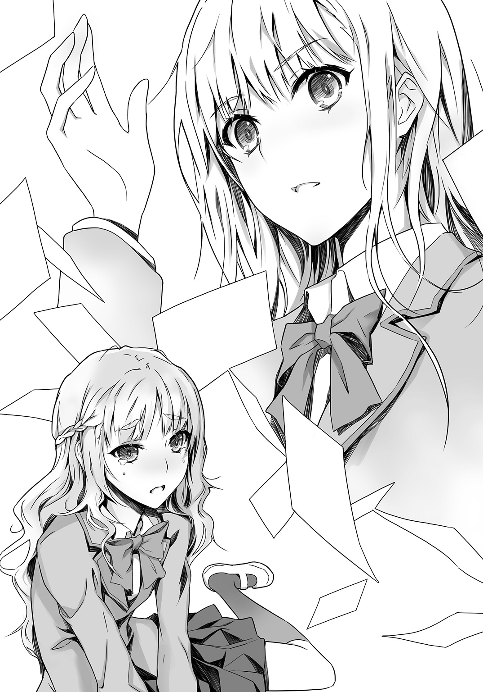
「あなたが先に、暮林先生にひどいことをしたのでしょう。自分の悪行を棚に上げて、被害者ぶるだなんて、醜いわ。わたしは、可愛くて綺麗なものをいじめるのは大好きで、愛情を持っていじめてあげるけれど、醜いものをいじめるのは不快なだけだわ。この写真を学校中にばらまいて、あなたが元・ブスの整形だとバレて、つまはじきものになって、絶望して屋上から飛び降りても、まったく心が痛まないわ」
揺るがない顔で――ひややかな顔で――美しい顔で、ルチアが断言する。
スカートの裾を乱し、太ももをむき出しにして床にしゃがみ込んでいた雛崎が、涙と鼻水で顔をぐちゃぐちゃにしながら、声を絞り出す。
「っく――あ、あなたは――美人だから、あたしの気持ちなんて――わからないっ。ずっと、豚とかブスとか言われて、いじめられてて、ちゅ、中学生のとき――三階のベランダから、と、飛び降りろって、命令されて――豚ならできるだろうって。飛び降りなきゃ、顔に、十円玉で焼き印を押すって言われて、それで、と、飛び降りて、顔に――大怪我して――せ、整形、して――」
そうして退院後、体重も激落ちした雛崎は、美しい体と美しい顔を手に入れたのだろう。
「ちゅ、中学も転校して――みんな、あたしのこと、綺麗とか――可愛いとか、言ってくれて――世界が、変わったみたいだった――。で、でも、いつかバレるんじゃないかって、びくびくしてて――暮林先生が学校に来たとき、息が止まりそうだった。もうダメだって、おしまいだって」
ルチアはＳ全開のひややかな目のまま、雛崎を見おろしている。
「そう、それで？ 職員室へ行くの？ 行かないの？ そろそろ昼休みが終わってしまいそうなのだけれど。授業がはじまったら、他の生徒が入ってくるかもしれないわね」
雛崎が、うっと声をつまらせたあと、床に頭をすりつけ、
「い、行きます。暮林先生は悪くないって、説明します。ご、ごめんなさい。ごめんなさい。ごめんなさい......っ」
と謝った。
◇ ◇ ◇
写真をすっかり片づけたあと、俺とルチアに両脇を挟まれて、ほとんど連行されるようにして職員室へ向かうあいだも、雛崎はずっと洟をすすり上げて、泣いていた。
「なぁ、雛崎よ。おまえが暮林にしたことは、よくないことだが、もうじゅうぶんヘコまされたみたいだから、そろそろ泣きやめ。俺は、女の涙は嫌いじゃないし、むしろ大好物だが、おまえの泣き顔はいまいちだ。そそられん」
雛崎が、泣いている女の子に向かってなんてひどいことを言う男なのかというように、俺のほうを振り仰ぐ。
ルチアだけでなく、その仲間も、やっぱり鬼畜野郎だと思っているのだろう。非難と怯えが半々に入り混じった目で見つめる。
雛崎の向こうで、ルチアもほんの少し眉をひそめている。こちらはきっと、こんな小娘に、話しかけることなどないのに、とでも思っているのだろう。
だが、あれだけルチアにいたぶられたのだから、ちょっとばかしフォローしてやってもいいだろう。
俺は、涙でぐちゃぐちゃの雛崎の顔をしっかりと見おろして、言った。
「おまえは、ツンとすましている顔のほうが、イケてる」
「なっ」
雛崎が目をむき、ルチアがぴくりと肩を揺らす。
「おまえ、合奏部の次期部長なんだってな。部の中心人物なんだろう。それは、おまえがドン底から這い上がって努力して得たことの結果だから、誇っていいし、今のおまえは美少女なんだから、胸をはって堂々としてろ」
「う......」
雛崎は声をつまらせたまま、俺を見ていた。
職員室の前まで来たところで、
「じゃあ、行ってこい」
と、肩を押すと、慌てたようによろめき、また赤い顔で俺を見て、それから唇を尖らせてツンとして、
「あなたたちがしたことは、忘れないから」
と、言って、背筋を伸ばし、一人で職員室に入っていった。
「あんな子に、サービスすることないのに」
不満そうなルチアに答える。
「鞭のあとには飴をやるのは、基本だろ」
「......真田くんのＳのくせに正義感が強いところ、嫌いじゃないけれど、ときどきイラっとするわ」
ルチアはまだ不満そうだったが、俺は、
「そうか」
と流しておいた。
「まぁ、いいじゃないか。おまえには、このあとデカイ飴玉が待っているんだからさ」
◇ ◇ ◇
翌日、暮林は学校に復帰した。
梅雨があけた空は真っ青で、風もいい具合に涼しい。昼休みに、うさぎ小屋の前で、ルチアは豊かなプラチナゴールドの髪を、可憐にそよがせながら、清楚な眼差しで、暮林を見つめていた。
俺は、校舎の脇からそれを見ている。
「わたし......不安だったけれど、暮林先生のことを信じていました。だって先生は、わたしがはじめて......」
口にしかけて、途中で言葉を止め、そっと目を伏せる。頰が乙女らしい恥じらいに赤く染まっている。
相変わらず、男心をくすぐる表情がうまいぜ、ルチア。
暮林も想いのこもる眼差しで、ルチアを見つめている。
こいつはもう決まりだろう。
やはりまだ胸の奥が疼くが、俺もいいかげん切り替えなければ。
と、そのとき、暮林が俺のほうを見た。
げっ、目があってしまった。
慌てて首を引っ込めるが、暮林が嬉しそうに、
「きみ、こっちへおいでよ！」
と、呼びかけてくる。
くぅぅぅぅ。あとでルチアに、せっかくの告白されるチャンスを邪魔したと、恨み言を言われそうだ。
「きみ！ きみ！」
と暮林が叫び続けている。
仕方なく、首をすくめてうさぎ小屋まで歩いてゆくと、ルチアは暮林の後ろで、あとで覚えていなさいよ、というように目をすっと細めてきたが、暮林のほうは親しみのこもった顔で、
「きみ、この前、僕のマンションに、藍本さんと一緒に来てくれたよね。きみも、藍本さんと一緒に雛崎さんを説得してくれたんだってね。ありがとう、きみ。それと藍本さんとも話せたんだね、よかったね。きみは、ずっと藍本さんのことを、見守っていたんだものね」
あー、盛大に勘違いしていやがる。どこまで善良な男なんだ。
ルチアが暮林に話を合わせて、
「いろいろお世話になりました。これまでありがとう」
と、俺に向かって丁寧におじぎをする。
俺も、へこへこと、
「あ、ども」
などと、つぶやいた。
どういう茶番だ、これは。
つか、『これまでありがとう』って、地味に胸を刺す言葉だったのだな。
「本当に、よかったねー。本当にありがとう。雛崎さんも、今まですみませんでしたって、謝ってくれたんだよ」
暮林は、にこにこしている。やつれていた顔が、心配事がなくなったせいか、あの集合写真に写っていた高校生のときのように、つやつやしている。
やはり絶世の美青年には見えないが、ピュアなやつだな......と思った。
それに、自分をいじめた雛崎のことも全然恨んでいない。雛崎が謝ってくれたことを、素直に喜んでいる。
きっといいやつだ。
男としては、なよなよしていて、精神的にも弱いが。
強くて無慈悲なルチアとは、バランスがとれているのだろう。
そうだな、ルチアと似合いだ。
「あんたなら、いいか......」
ほろ苦さとともに、そんな言葉が唇からこぼれた。
暮林が「え？」という顔をし、ルチアが真面目な表情で俺を見つめた。
俺は暮林の両手をとり、そのまま持ち上げて握りしめた。
ルチアを頼む。
この前、そう言ったときは演技だった。
けど、今回は結構マジで、そう言いかけたとき――。
裏庭に、大音量が響いた。
「早まっちゃダメぇ！ そいつは、変態よ！」
俺たちの前に、息を切らして走り出てきたのは、美園千冬だった。
何故、美園？
それに、今の暴言は？
そいつというのは、誰のことだ？
ルチアか？
暮林か？
それとも、この俺か！
美園は一直線に俺のほうへ向かってくると、暮林の手を握る俺の手をわしづかみし、その勢いのまま、ぐいっと引きはがした。
そうして、俺の手を汚らわしいもののように振り払うと、俺の顔に指をつきつけ、さらに叫んだ。
「騙されないでください、暮林先生！ この男は、変態告白魔なんです！ ねばりつくような視線で、毎日しつこく見つめてきて、こっちをその気にさせて告白したあとで、相手が了承したら、悪魔のように振るんです！ 黙っていようかと思ったけど、やっぱり見過ごしにできませんっ！ あの雛崎さんまで『美園さん、真田くんと......その、親しいの？』なんて訊いてきて、頰なんて染めちゃって――暮林先生を狙っているのかと思っていたら、いつのまに雛崎さんまで毒牙にかけたのよ、変態っ！」
興奮してしゃべっているので、よくわからん。
雛崎が......なんだって？
俺と美園が親しいかを訊いてきた？ それが何故、俺が雛崎を毒牙にかけたという発言と繫がる？
ルチアも美園の突然の襲来に、目を丸くし、暮林のほうはぽかんとして、
「え？ え？ 毒牙って？ え？ きみが？ きみ、真田くんっていうの？」
と、つぶやいている。
「雛崎さんだけじゃありません！ この人は、男も女も見境なしの変態大王で、小笠原くんにも、魔の手を伸ばそうとしているんです！ この前、朝の通学電車の中で、小笠原くんのこと、痴漢したんです！」
「痴漢って......あの小さくておとなしい小笠原くんを!?」
暮林が、ようやく驚きの声を上げる。自分と似たタイプの小笠原が被害にあったと聞いて、現実感がわいたのかもしれない。
が、俺が小笠原を痴漢したとは、えらい誤解だ。
「おいこら！ 美園よ！ 俺は痴漢なんぞしていない！ たとえ、そうしたプレイをするにしても、小笠原はない！」
きっぱり主張すると、美園は、
「ぷ、プレイ......？」
と顔を赤らめたあと、俺をまたキッと睨み、
「ネタはあがっているのよ」
と、テレビドラマに出てくる刑事のようなことを言った。
「朝の満員電車の中で、真っ赤な顔をしてうつむく小笠原くんのそばに真田くんがいたという情報を、入手しているんだから！」
いや、それは小笠原が痴漢にあっていたのを、俺が助けて。
「ダンディなスーツのおじさんが、逃げてゆく真田くんを追いかけていったって」
そいつが痴漢だ！
逃げたのもそいつだ！
何故、情報がこんなに錯綜しているんだ。
「そ、それに、小笠原くんに『痴漢にあったって本当？』って訊いたら、真っ赤な顔で『う、うん......真田くんが......』ってつぶやいて、黙っちゃったんだから」
小笠原！
何故、そこで黙る！
それだと、俺が本当に、おまえに痴漢行為を働いたみたいではないか。
暮林の俺を見る目が、すっかり変わっている。
「暮林先生も、こいつに狙われていたんですっ。こいつの、いやらしい視線を感じませんでしたか」
「そういえば......でも、あれは......藍本さんを見ているものだとばかり」
「いいえ！ ターゲットは暮林先生です！ こいつに痛い目にあったわたしは、すぐにピンときました！ こいつは骨の髄まで変態です！」
あーうー、どうしたものか。
いっそもう、俺は変態だ、それがどうした、と認めてしまったほうが、この場がおさまるのではないか。
「こいつは放課後も、合奏部の向かいの美術室から、野獣のような目で暮林先生を見つめていたんです」
「え、美術室......」
これはヤバイ。下手をしたら、ルチアが美術室から暮林を『鑑賞』していたこともバレかねない。
そうなれば、ルチアも俺の仲間だと思われるだろう。暮林に告白させることも、恋人同士になることもできなくなる。
やはり、ここは俺が変態になっておくしかないか。
どうせ変態だし、今さらだ。
よし、言うぞ。
口を開きかけたとき。
「間違えてもらっては困るわ。変態は真田くんではなく、このわたしよ」
ひんやりした声が、青空の下を流れていった。
美園が喉をつまらせ、黙り込む。
暮林が丸く見開いた瞳を、俺からルチアへ移動させる。
俺も、啞然としていた。
なにを言い出す、ルチア。
暮林の前だぞ。
今のおまえは、薄幸で病弱な少女ではなかったのか？
だがルチアは、ラピスラズリの瞳をきらめかせ、形のいい顎を上げ、斜めから見おろすような視線で堂々と、
「たとえ、真田くんが変態だとしても、わたしの変態には及ばないわ」
と、断言した。
「あ、あい、藍本さん......きみ」
汗をだらだらかいて、うろたえる暮林に向かって、赤い唇をすっとつり上げて、悪の女王のように妖しく微笑み、
「純平さんのこと、美術室の窓からずっと、上から下までなめるようにして見ていたわ。純平さんに首輪をつけて、青い月に照らされた夜の道をお散歩したら、どんなに楽しいかしらって。純平さんをいじめて、泣かせてみたいって。なめらかな白い頰にこぼれる純平さんの涙を、紫のガラスの小瓶に集めて、ベッドの周りに深紅の薔薇の花びらと一緒に並べたいって、想像しながら」
暮林はこれ以上見開けないほど、大きく目を見開いている。
美園も開きっぱなしの口を閉じられない様子で、ルチアを見ている。
「おい、藍本よ」
俺が割って入ろうとすると、ルチアは黙ってて、というように右手をすっと横に伸ばして制した。梅雨明けの透明な陽射しを浴びたその横顔は、気高く凜々しく、変態であることを誇っているようにさえ見える。
「わたしが病弱だというのも、うさぎ小屋を訪ねるのが入学以来の習慣だということも、両親が仕事で家に帰ってこないというのも、全部純平さんに関心を持ってもらうための設定で、わたしの母は手芸が趣味の専業主婦で、父は定時出勤定時退社の暇な部署で働く、公務員よ。真田くんにも、同じ美術部のよしみというだけで、わたしが頼んで演技をしてもらったの。真田くんがわたしたちを見ていたのは、わたしが変態を暴走させて、純平さんを襲ったりしないか心配で、目を離せなかったからよ。そんな真田くんが、電車で素人の男の子相手に痴漢行為を働くはずがないわ。彼は、正義感の強い人よ。わたしなら、好みの男の子を目の前にしたら、我を忘れて痴漢もしてしまうかもしれないけれど」
美園が気まずそうに目を伏せる。
ルチアが、俺の弁護をしてくれた。
胸の奥がジンと熱くなった。
だが、ルチア。
これでは、おまえが......。
ルチアが、また暮林のほうを見る。
びくっと身を固くする暮林に、真面目な顔で、
「こんな変態のわたしですけれど、純平さんが好きです。わたしとおつきあいしていただけませんか」
ルチアの告白を、暮林は困惑の表情で聞いていた。
ピュアな瞳に、迷いと混乱と――怯えが浮かんでいる。
はたして、変態を連呼するこの異質な少女と、つきあってゆけるのかを、頭の中でぐるぐると考えているのだろう。
きっと、まともなつきあいはできない。
そうして。
「ごめんなさい」
暮林が深々と頭を下げるのを、ルチアは、さっき俺が暮林に『ルチアのことを頼む』と言おうとしていたときに浮かべたみたいな笑顔で、見ていた。
苦くて淡い笑顔で。
◇ ◇ ◇
翌日の放課後。
美術室の窓際に、俺とルチアは久々に向かい合わせに席を置いていた。あいだに机があり、そこに、俺が昼休みに学校を抜け出して買ってきた、つやつやのサクランボのパックが置いてある。
量り売りで、豪勢に山盛りにしてもらった。それをつまみながら、話をする。
「真実を告げるのが早すぎたわ。もっと純平さんの心を、しっかり縛りつけてから打ち明けるべきだったのに。わたしのミスね」
ルチアがつやつやしたサクランボの実を、茎がついたまま一粒口に入れ、冷静な顔で言う。
ルチアは、あのとき俺を庇って、あんなことを言ったのだ。
俺が、ルチアがここから暮林を鑑賞していたことがバレないよう、変態であることをカミングアウトしようとしたように。
俺がそうする前に、俺の行動を察して、自分が先に変態になった。
ルチアは否定するだろうが......。
中庭を挟んだ向かいの合奏部では、暮林がのびのびとタクトを振っている。部員たちとうまくやれているようだ。多分ルチアもホッとしているだろう。
窓際でフルートを吹いていた美園が、たまに後ろめたそうにこちらを見る。俺と目があっても、あかんべえをしたり、指を立てたりはせず、もじもじと視線をそらす。
それと、雛崎が、窓際でやたらとバイオリンを弾くようになった。顎と鼻をそらしてツンとし、ときどきこちらを見て、またツンと顔を上げて、バイオリンを弾きはじめる。
向こうも、まずまず平和らしい。
暮林に振られたことを、ルチアは、
「慣れているわ。わたしがはじめて失恋したのは、幼稚園の年少組の頃よ。同じクラスのトシユキくんの泣き顔が大好きで、もっと泣かせたくて、庭でとったいもむしを、トシユキくんの襟足から入れてあげたら、『ルチアちゃん、ヘンタイだ、気持ちわるい、もう遊ばない』と言われたのが、最初よ。そのあと、どれくらい失恋したかしら。今度の失恋も数ある失恋のひとつよ」
と、片づけた。
表情は静かで、口調も淡々としており。
いつもと変わらなくて――。
そう、ルチアは、美人すぎて妬まれて、けど、いじめっこを逆にいじめ返すほど強くて逞しくて、周りから理解されなくても人間不信ではなく、友達もちゃんといて、そいつらとうまくつきあっていて、公務員の父親と専業主婦の母親と、ゴキブリに動じないさめた弟がいる、普通の家庭で育って――。
自分は変態だと、誇りを持って言い切る変態で。
だけど、傷ついていないようで、多分しっかり傷ついている。
今回の暮林の件だけではなくて。
きっと、はじめて、自分の『好き』が他人には受け入れられないことを知った、幼稚園の頃からずっと。
だから、好きな相手を、計略を重ねて、重ねて、重ねて、自分に夢中にさせて、がんじがらめにして、逃げられなくさせてからではないと、告白もできない。
また、変態だ、気持ちが悪いと、逃げられてしまうと思っているから。
ルチアが、心の奥に抱えている孤独を、俺は理解できるような気がする。それは俺自身の中にもあるものだから。
ルチアはクールな顔つきで、サクランボを食べている。
さめた瞳で、黙々と。
俺はサクランボをひとつとると、それをルチアの唇に押しつけた。
目を見張るルチアを、真顔で見つめ返しながら、そのままルチアの赤い唇の奥に、つやつやしたサクランボを押し入れる。
やがてルチアが冷静に、
「なんの真似かしら？」
「いや、サクランボってエロい食い物だなと。こうするとエスエムっぽくないか？」
「わたしで試さないで」
「そうだな、おまえはＳだ」
「あなたもね」
俺たちのあいだに甘い雰囲気はかけらもなく、だが奇妙な仲間意識みたいなものが流れていて。
「真田くんが、Ｓでよかったわ」
どうでもいいことのように、さらりとルチアがつぶやく。
「真田くんがＭだったら、可愛くも美しくもない上に、淋しいでしょう」
淋しいでしょう、と。
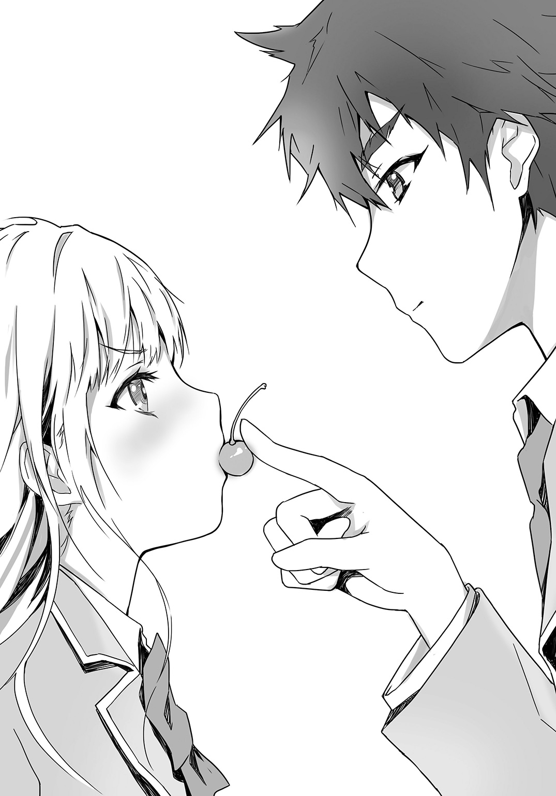
おざなりに付け足された言葉は、滅多に聞くことのできないルチアの本音だったのかもしれない。
――もし俺がＭだったら、おまえはどうする？
――嫌だわ。とても。
多分、あのときも。
「サクランボの茎を、舌で結べる人は、キスが上手だというけれど、わたしはもう一歩上級を目指したいわ」
ルチアが、サクランボの種を、赤い舌で口の外にぽろんと押し出しながら言う。
「サクランボの茎にも実にも、無限の可能性があるわ。たとえば人間の体には、サクランボの実を入れる穴が、いくつあるか知ってる？ 真田くん」
「六つか」
「わたしは、九つ見つけたわ」
「え、どこだ」
「真田くんが、泣き顔が似合う美少年なら実践してあげるのだけど、残念ね。その気になれないわ」
「なら、サクランボの茎で、イカせる超絶テクと交換でどうだ」
「サクランボの茎で、イッたことがあるの、真田くん」
「おう、俺は実践派だ」
「変態ね」
「おまえこそ、サクランボの実が、九つ入るか試したことがあるのか」
「当然よ。自分で体感してみなければ、相手に試すとき加減がわからないもの」
「おまえも、変態だ」
慰めの言葉を口にすることを、ルチアは望まないだろう。
だから、二人でサクランボをつまみながら、サクランボのエロさについて、俺たちは今日も、不埒な会話を続ける。
第三話 不埒な夏・不埒な挑戦
きゃあ......と叫んだ、か細い声が、まず好みだった。可憐で、どこまでも澄んでいて、それでいて弱々しく、思いきり追いつめられているふうで――。
耳にした瞬間、背筋がぞくっと震えて、声がした中庭のほうへ駆けつけてみたら、うねうねと暴れるホースを両手で必死に握りしめた女子が、水浸しですけすけの制服を、折れそうに華奢な体に張りつかせて、べそをかいていた。
「だ、誰か、助けて」
呼びかける声が、やはりしとやかで、儚げで。
濡れた長い黒髪が、真っ白なうなじや、染みひとつない細い腕に、ぽたぽたと水をしたたらせながらかかっていて。助けを求める瞳は黒く澄み、唇は清楚なピンク色で、下がりっぱなしの眉がまた高ポイントで。
理想通りの女子を前にして、俺の胸は夏の陽射しよりも熱くなったのだった。
◇ ◇ ◇
「それは、恋の予感ね」
期末試験が終わり、気温も陽射しの量も上昇の一途を辿っている七月のはじめ。
放課後の美術室で、ルチアは今日も窓際に置いた植木鉢に、百円ショップで買ってきた赤いじょうろで水をかけている。
植木鉢に埋めたのはサクランボの種で、俺がこの前の昼休みに学校の近くの果物屋で買ってきたやつだ。
芽が出たら、学校の庭に植え替えてサクランボの実をいっぱい茂らせるのだと、それはとてつもなくエロチックな光景であろうと、ルチアは毎日クールな表情で水を与えている。
窓の向こうには合奏部がある。
もしかしたら、水をやるふりをして、合奏部のほうをこっそり見ているのかもしれないと、疑いもした。
合奏部の顧問の暮林純平に、ルチアが失恋したのは、先月だ。
ルチアは口にしないが、まだ暮林に未練があるのかもしれない。なにしろ小笠原のときと違い、向こうもルチアに惹かれていて、恋人になる寸前までいったのだから。
ルチアが暮林をあきらめきれなくても、おかしくはない。
最近、俺がふとルチアを見ると、ルチアは完璧に整った横顔をこちらに向け、茶色い土をしきつめた植木鉢に、じょうろで淡々と水をかけていることが多い。
そんなとき、合奏部の様子をうかがうと、眼鏡をかけたくしゃくしゃの髪の男――暮林が、ぼんやりとこちらを見ていて、ドキッとすることがあった。
ルチアを振ったのに、今さら気になっているのだろうか。
暮林は視力が悪いらしいから、顔をこちらへ向けているだけで、ルチアのことは見えていないのかもしれん。が、ルチアが好きそうな弱々しい眼差しをしている。
もしルチアのほうでも暮林に想いを残していて、ルチアが合奏部を見たとき、美術部を見ている暮林を見つけてしまったら。
二人の目と目が、合ったら。
そんなことを考えると、もやもやする。
何故そんな気持ちになるのかは、まぁ......様々な要素が絡み合っていて、自分でも説明が難しいのだが。
一方で、美園千冬はまだ申し訳なさそうに、うちの部を、ちらちらうかがっており、雛崎弓華は、窓辺のぎりぎり手前で、ツンとした顔でバイオリンを奏でており、たまに赤い顔で、こっちを見たりする。
美術室と音楽室は、以前はそれぞれ別々の空間であり、鑑賞部の部員である俺とルチアだけが、決して踏み込めない世界として、あちらをうかがっていたはずだったのに、なにやら奇妙な繫がりが生まれている。
赤いじょうろで、サクランボの種に水をやっているルチアも、それを感じているのかいないのか......。
俺が学校の中庭で、花壇に水をやろうとして自分が水浸しになってベソをかいている女子生徒に遭遇したのは、そんな頃だった。
ホースからまき散らされる水をかいくぐり、素早く蛇口をひねると、彼女は黒目がちの瞳に涙をいっぱいにじませて、
「ありがとうございます。助かりました」
と、頭を下げた。
そのあとすぐ、夏服が水に濡れてすっかり透けていて、タンクトップの下のブラジャーの線まで、くっきり浮き上がっていることに気づいて、カァァァッと頰を染めた。
そうして、
「し、失礼します......っ」
と、つぶやき、細い腕で華奢な体を抱きしめて隠すようにして、校舎の中に小走りで去っていった。
見た目も、声も、表情も、仕草も、反応も、まさに理想だったと、放課後の美術室でルチアに興奮気味に話したところ、
「それは恋の予感ね」
と、断言されたのだ。
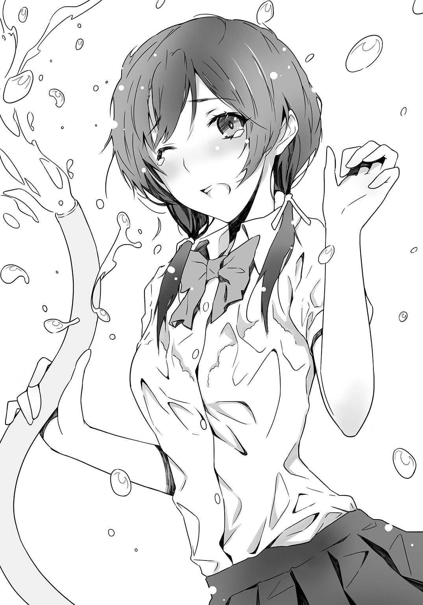
「いや、恋というか、萌えというか、俺のＳ心がかきたてられたというか」
美園に申し訳ない失恋をさせ、恨まれたこと。
ルチアの二度の失恋。
二年生になってからの、それやこれやの出来事により、俺は以前よりも恋に対して慎重になっていた。同時に、ルチアに対するもやもやした気持ちも、一度は暮林とのことを祝福してケリをつけかけたのが、微妙に振り出しに戻っている。
そんな曖昧な状況にいる中、己の性癖からくる興奮を恋と断定するのは、ややこしいことになるような気がした。
だが幼少時代から失恋を繰り返してきたというルチアは、恋に対してためらいがなく、
「Ｓ心がかきたてられる。素晴らしいわ」
と、じょうろを持ったまま溜め息をつき、
「わたしたちが恋をするには、それでじゅうぶんよ。理想のＭに出会い、策を弄して捕獲し、縛りつけ、生涯鑑賞し、可愛がり抜くこと。それが最高の幸せではないかしら」
と俺の目を見て、断言する。
「うむ、それはそのとおりだが」
相性のいい女子に巡り会う機会は、滅多にあるものではない。
理想通りと思った美園千冬も、中身はえらい勝ち気で、暴走系だった。
なので、あの濡れ濡れ美人が、中身も俺の理想そのままで、それで策を弄して――はともかく、まっとうに恋人になれるのならば、俺の高校生活は輝くだろう。
「しかし名前も学年も、聞いていない」
うちの高校は生徒の数が多いので、学年が違えば、もう会えない可能性もある。つまり縁がなかったということか。
やはり、この興奮状態がおさまるまで、少し様子を見たほうがよいのかもしれない。もし縁があれば、また会えるだろうし。そのとき考えれば......。
腰の重い俺に、ルチアが厳しい眼差しで、じょうろを置いた。奔流のようなプラチナゴールドの髪が、夏の陽射しを力強くはじき返す。
「いつからそんな草食男子になったの、真田くん。獲物を常に追い求めていなければ、肉食獣としての本能は麻痺してしまうわ。動物園で、おなかを出して寝転がる虎に、あなたはなりたいの？」
「まぁ、あれは、ほのぼのしてるが、確かに情けなくはあるな」
「ええ、檻を突き破って野性に還れと叫びたくなるわ」
いや、それは動物園がパニックだろうと、心の中で突っ込む俺に、
「純平さんのときは、真田くんがわたしに協力してくれたから、今度はわたしが協力をし返す番よ。真田くんのＳ心を燃え立たせた彼女の名前とクラスを、わたしが突き止めるわ」
と、ルチアが言い切った。
◇ ◇ ◇
翌日の放課後。
「天命は、真田くんに味方しているようよ」
部活のため美術室を訪れた俺に、先に来て、赤いじょうろでサクランボの鉢に水をやっていたルチアは、俺のほうへ向き直ると、予言者のように重々しく言った。
「どういう意味だ」
「彼女の名前とクラスが、わかったのよ。園芸委員に問い合わせたら一発だったわ。彼女も園芸委員で、あの日は水まき当番だったのよ。でも、わたしが天命と言ったのは、そんなことではないわ」
「なに？」
ルチアがかもしだす巫女のような雰囲気に押されて身構える俺のほうへ、じょうろを置いたルチアが近づいてくる。
そうして、向かい合わせに設置されていた椅子を、しなやかな両手で持ち上げると、窓に沿って歩き出した。
「おい、どこへ行くんだ」
ルチアが椅子を、これまで俺たちがいた位置よりも、数メートルほど右寄りに置く。
「ここが――鑑賞部の新たな活動拠点よ」
「なに」
「真田くんも、自分の椅子を持ってらっしゃい」
さっさと椅子に腰かけ、膝の上にスケッチブックを広げるルチアの隣に、わけのわからないまま、俺も椅子を運ぶ。
そこに座り、窓のほうへ視線を向けると、反対側の校舎の窓と、その向こうで部活動をしている風景が見えた。
これまで俺たちが見ていたのは、合奏部だった。
が、合奏部の隣の教室を使って行われているそこには、楽器を持った生徒の代わりに、赤や黄色の花を手にした生徒たちがいた。
全員、女子だ。
床に畳かなにか敷いて正座しているらしく、胸から上しか見えないというシュールなことになっているが、その中から一人の女子が、しとやかな仕草で立ち上がった。
しっとりと、やわらかそうな黒髪が、華奢な背中で揺れる。
白い横顔。
すんなりと伸びた細い首。
憂いを含んだ黒い瞳。
中庭で水浸しになっていた、あのＭ系女子だ！
あのとき俺を釘づけにした光景が、頭の中にまざまざと浮かび、弱々しげな泣き顔や、震えるピンク色の唇や、びしょびしょに濡れて透けた制服や、その下の体の細さに、胸があのときと同じように熱くとどろいた。
衝動的に立ち上がる俺に、ルチアが隣からクールに、
「彼女で間違いないわね」
と確認する。
「ああ」
しとやかな横顔から、目が離せないまま、うなずく。
美園千冬に一目惚れして以来の震えと衝撃と感動が、俺の全身を包んでいた。
ああ、また、あの眉が綺麗な八の字になった泣き顔を見たい。あの儚くくずおれそうな細く白い体を、水浸しにしたい。水の中で溺れて必死にもがいて、咳き込み、力なく助けを呼ぶ姿を、邪悪に見おろしたい。
「彼女は三年二組の桃ノ沢窓子さん。華道部の部員よ」
「華道部......」
合奏部の隣は、華道部だったのか。
今まで合奏部ばかり見ていたので、隣の教室で誰がなにをしているかなぞ、気にしたことがなかった。
あんな顔も体も雰囲気もＭっぽい美人が、花を活けていただなんて。
桃ノ沢窓子――名前もいい。イニシアルはＭ・Ｍ、素晴らしい。マゾ子先輩、いや、窓子先輩と呼ばせてもらおう。
食い入るように見入っていたら、窓子先輩がいきなりコケた。
「おっ！」
なんとか持ち直して、こちらもホッとしかけたが、
「げ」
また、つまずく。
さらに、
「うぉ！」
持ち直したあと、またかくんと、前に体がかしぐ。今度は完全に畳の上に倒れ込んだようで、窓のフレームの外に消えた。
華道部の部員たちが次々と立ち上がり、窓子先輩が倒れたあたりに集まる。
だ、大丈夫なのか......？
ドキドキしながら見守っていると、窓子先輩が片手で額を押さえながら、華奢な上半身を起こした。相当恥ずかしいようで、耳たぶから首筋まで真っ赤に染まっている。目がうるみ、眉がえらく下がっていて――その頼りない、弱々しい表情に、心臓がはずみすぎて、口から飛び出しそうになった。
おい、なんだ、あの顔は！ あれは、可愛すぎだろ！
彼女は花の女神か！ 手折られる瞬間、儚く震える、わすれな草か撫子の化身か！
「――窓子先輩の体に、赤い絵の具で季節の花々を描き尽くしたい」
って、今のは俺の声じゃないぞ。
隣を見ると、ルチアがラピスラズリの瞳を、華道部のほうへ向けている。そのまま冷静そのものの表情で、淡々とつぶやく。
「あの細い足首に、真珠の鎖をつけて、薔薇を敷きつめた広間で、何度でも引っ張って転ばせたい」
「おい」
「スカートの裾が乱れて、白い足があらわになる様子を存分に楽しんで、首にもバラの棘の首輪をまいて、白い喉に棘が刺さって赤い血がにじみ出る様子を堪能したい。そのあと、その血を舌と唇でぬぐいたい。怯える彼女に、悪魔のように笑いかけて、もっと怯えさせたい」
「こらこら」
俺の妄想を先読みするな！
じゃなくて、
「俺はまだ、鑑賞部の活動を再開すると決めたわけでは」
「なにを言っているの。彼女を見つめるあなたの目は、まさしく肉食獣のように底光りしていたわ」
「ぐ」
声をつまらせる俺を、ルチアがひんやりした目で見る。そうして、その目をゆっくりと窓のほうへ戻し、
「あら、またコケたわ」
「なに！」
また、あんな超絶可愛い顔で、頰を赤く染めているのか？ 目をうるませて、眉を八の字にしているのか？ 見逃すわけにいかん！
窓を破りそうな勢いで首を突き出し、はっとする。
くそ、ルチアのペースに乗せられて、つい本能に忠実になってしまった。
奥歯を嚙みしめる俺に、ルチアがしれっとした声で言った。
「おめでとう。鑑賞部、復活ね」
◇ ◇ ◇
そんなんで、窓越しに華道部の女神を見つめる日々がはじまった。
これは恋なのか、欲望なのか。
ルチアとの関係は、どうなるのか。
そんなささやかな葛藤も、窓の向こうに、やわらかな黒髪を揺らして楚々と歩くマゾ子先輩――いや窓子先輩を見れば、とたんに体が熱くなり、目の前が光で満ち、呼吸が乱れ、すべての感覚が彼女に釘付けになった。
ルチアがクールに、
「窓子先輩の、あのほっそりとした体に花を活けるとしたら、やっぱりピンクの桃の花かしら。窓子先輩自身の香りと、桃の花の甘い香りが混ざり合って、天国の花園にいるような気分でしょうね」
と話を振れば、その様子を瞬時に妄想し、恍惚となり、
「いや、百合の花も捨てがたい。あのすっきりとした清楚な芳香は、桃の花同様に彼女に似合うはずだ。あるいは満開の桃の花を全裸に散らしてはりつけ、百合を飾るという手もある」
「百合と桃では、季節が合わないのではないかしら」
「なら、桃とヒヤシンスで」
と、流れるように不埒な会話を交わしてしまう。
そうするほど、窓子先輩への欲望が高まってゆく。
やはり俺は根っから変態の、Ｓなのか。理想のＭを手に入れてこそ、俺の高校生活は十全に満たされるのか。
俺によこしまな目で見つめられ、妄想の対象にされている窓子先輩は、Ｍ的に素晴らしい素材であるのだが、だからこそというべきか、相当ドジな人でもあった。
日に、一度はコケている。
多い日は、二度、三度とコケる。
そのたび眉をきゅっと下げて、恥ずかしそうな顔をしてくれるのだから、たまらない。
また、悩みがあるのか、花を活ける手を休め、憂いのこもる瞳で剣山のあたりをじっと見おろし、溜め息をついていたりする姿も、よく見かけた。
そうしたあとで、まるでそれがいけないことであったかのように、視線をこっそり周囲に向け、誰にも見られていないことを確認するのだった。
そんな様子に、また胸が高鳴る。
見たぞ......と思いきり陰険に、声をかけてやりたい。
おまえの秘密を、知っているんだぞと。
バラされたくなかったら、俺の命令になんでも従えと言ったら、可憐な瞳に涙をいっぱい浮かべて『わかりました』と掠れた声で答えるであろう。
ああ、言ってみたい。
反応を見てみたい。
怯え、震え、絶望する声を、聞いてみたいっ。
それには、彼女の溜め息の原因を知らなければ。
「窓子先輩は、なにを悩んでいるのだろう」
俺のよこしまな心が具現化したような、まがまがしい形状となりはてた粘土細工を、無骨な手で、わしわしいじりながらつぶやくと、スケッチブックにアメーバーの家族のような、どろどろした塊を、いくつも描いていたルチアが、こともなげに言った。
「わたしが聞き出してあげるわ。実は先日、廊下で転んだ窓子先輩を、親切の押し売りをして保健室へ連れて行って、顔見知りになったのよ」
「なに、そんなことをしていたのか」
驚く俺に、
「言ったでしょう。新しい鑑賞部は、ただ見つめるだけではなく、対象を自分のものにするため知恵と力をつくし、部員同士協力し合うって」
そのルール改変は、俺にもあてはまるのか。
どうやら、ルチアの中ではすでに確定事項らしく、
「このお返しは、次にわたしが理想の天使に出会ったときに、してもらうわ」
と告げられ、複雑な気分を味わった。
◇ ◇ ◇
ルチアは、窓子先輩の名前とクラスを調べ上げてきたときと同じ素早さで、窓子先輩の溜め息の原因も、翌日には突き止めてきた。
「窓子先輩は夏休みに、ビーチバレー大会に出場しなければならないのですって」
「ビーチバレー大会だと？」
海辺で、色鮮やかなボールと戯れる、水着姿の女子の図が浮かぶ。ジャンプしたり、レシーブしたりするときに、ふるふると揺れる胸や太ももが、見物人の目に嬉しい、夏の風物詩というやつだ。
確か、うちの高校でも毎年参加チームを募って、近くの海辺で、一日がかりで行われていたはずだ。
「窓子先輩が、あの大会に出るのか？」
去年、クラスメイトに誘われて、つきあいで見に行ったが、応援団までいたりして、えらい盛り上がりだった。
「ええそうよ。この地区の名物よ。四人一組でチームを組んで、トーナメント形式で試合をするの。優勝チームには、愛の神キューピッドの矢を刻印した、特製のメダルが授与されるわ。このメダルを意中の相手に贈って告白すると、八十五パーセントの人はカップルになれるのですって」
「やけに具体的な数字だな」
「百パーセントでは噓くさいので、適当に八十五パーセントにしておいたのでしょう」
「適当かよ」
「けれど、この優勝メダルが愛の告白に抜群の効果を発揮することは、確からしいわ。告白のアイテムとして知れ渡っていて、なおかつ優勝チームのメンバーにしか与えられないというプレミア感があるから。渡されたほうも、自分のために頑張ってメダルを勝ち取ってくれたのだと思えば、うっかり感激もして、勢いで告白を受け入れてしまいもするでしょう。正気に戻ったときに後悔して『やっぱり、なかったことにして』と言うかどうかは別として」
「結局、効果はあるのか、ないのか」
「要するに、大切なのは、相手にどれだけ本気を見せられるかということよ」
ルチアが無難にまとめる。
「少し話がそれてしまったわね。窓子先輩が、ビーチバレー大会に出場するということだったわね」
「彼女は、しょっちゅうコケていて、運動が苦手で体力もなさそうだが、バレーの大会なんぞに出て大丈夫なのか？ 真夏の浜辺でバレーは過酷だぞ。それに参加者は水着が条件で――」
窓子先輩の水着。
それを想像し、くらっとした。
あのかぎりなく白く、ほっそりした体に似合うのは、鮮烈な赤だろうか。皮膚の色と一体化した白だろうか。淡いピンクや水色も合うだろうが、ここはあえて大胆さがほしい。布の面積も少なめで、恥ずかしそうにもじもじと足をすりあわせ、頰を赤らめているのが好ましい。
「水に濡れると溶ける水着――なんて楽しそうね」
「ああ、それはかぶりつきだろう」
と、また話が脱線しかけ、俺はごほんと咳をして、軌道修正した。
「つまり、窓子先輩はビーチバレーの大会に出ることになって、悩んでいるわけだな」
「ええ、そのとおりよ」
ルチアが冷静に答える。
「華道部の友人が片想い中で、どうしてもメダルが欲しいらしくて、人数合わせのメンバーに登録されて断れなかったらしいわ。真田くんの推察どおり、窓子先輩は運動神経も体力もないに等しくて、なのに根が真面目だから、試合でミスを連発して友達に迷惑をかけたらどうしようと、心配しているようよ」
「なるほど」
いかにも窓子先輩らしい悩みだ。
やはり見た目のしとやかさや、儚さ、純真さに、中身もつりあう人なのだ。そんな悩みでは、秘密を握って脅迫云々は無理だが、ますます好感を持った。
「だからわたし、窓子先輩に、経験豊富で教え上手の有能なコーチを紹介すると言っておいたわ。そのコーチに試合の日まで特訓してもらえば、どんなに運動が苦手な人でも、ボールを拾えるくらいにはなれるし、サーブもコートに届きますって」
「待て。コーチとは俺のことか？」
「今の流れで、あなた以外の誰がいるというの」
ルチアが涼しげに言う。
「俺は、ビーチバレーなぞしたことはないのだが」
「普通のバレーは、体育の授業で経験済みでしょう。それに、あなたは元運動部でしょう、真田くん。一年生で主力選手だったと聞いたわよ」
「ああ、元陸上部のハードル走のな」
「球があるかないかの違いでしょう。無問題ね」
「いや、かなり違うだろう」
「個人競技か、団体競技かだけの違いでしょう」
「だから、相当違う」
「窓子先輩は、ぜひお願いしますと、わたしに頭を下げていたわ。あなたがコーチを引き受けないと言うなら、別の人を探さなければならないけれど。爽やかでイケメンで、白馬の王子様みたいで、女の子に見境がなくて、この夏に百人切りの目標をかかげているコーチがいいかしら」
「爽やかな王子様で百人切りって最悪だろ。そんな下衆なやつが、知り合いにいるのか」
「ネットに窓子先輩の写真を貼りつけて一般公募して、集まった人たちの中からオーディションで厳正に選別するわ。貼りつける写真は、コケたあと半べそで立ち上がろうとしているショットがよいかしら？ 膝を立てて太ももと下着をチラ見せしているやつ」
「わかった、俺が引き受ける」
ルチアのことだから、本当に窓子先輩のパンチラ画像を撮影し、ネットで一般公募しかねない。運動神経に自信がないわけではないし、教える相手は運動部員ではなく、運動が大の苦手な窓子先輩だ。サーブが相手のコートに届く程度に上達させればいいのなら、なんとかなるだろう。
「はじめから、そう答えていればいいのよ。Ｓのくせに往生際が悪いわね」
ルチアはどこか不機嫌そうに言った。といっても、表情はあまり変わらないのだが。
なんとなく、俺が引き受けたことを、喜んでいないような......。
いや、それはない。
俺にこの話を持ちかけたのは、ルチアなのだから。
ルチアは、サクランボの鉢に、赤いじょうろで水をかけながら、
「明日の放課後、真田くんを窓子先輩に紹介するわ。それまでに、窓子先輩の攻略方法をまとめてメールするから。わたしは今日はもう帰るわ」
淡々と告げて、水をやり終えると美術室から出ていってしまった。
しっとりと濡れた黒い土から、まだ芽が出てくる気配はない。
それを眺めながら、明日、窓子先輩に会ってもいいのだろうかと考えた。
鑑賞するだけの部活動は楽しいが、発展性はない。
それは、俺もルチアも、苦い経験から学んだ。
だが、窓子先輩と〝外〟で会ってしまったら、今の俺とルチアとのバランスが、崩れてしまうのではないか。
そして、もし俺が、鑑賞対象のオーナーになったら。
つまり、俺と窓子先輩が恋人同士になったら。
ルチアは、どうするのだろう。
そして俺も、これまでのようにＳ仲間として、鑑賞部の同志として、ルチアとつきあえるのだろうか。
また、胸がもやもやしてきて、向かいの校舎を見る。
華道部ではなく、合奏部を。
すると、窓際でフルートを吹きながらこちらを見ていた美園千冬がびくっとし、目を丸くし、口をあうあうと動かした。
そのすぐ隣で、ツンとしてバイオリンを奏でていた雛崎弓華も、いきなり顔を赤くし、あたふたしはじめる。
美園が雛崎に、落ち着きなさい、とでも言ったのだろうか。雛崎が口を尖らせて美園に、なにか言い返している。
けど、俺をドキリとさせたのは、美園千冬でもなく、雛崎弓華でもなく、その向こうに立っていた暮林だった。
タクトを手に持ち、ぼんやりとした眼差しを、窓のほうへ向けている。
儚げな雰囲気のただよう姿は、切なげでもあって......。
腹の奥が、ぎゅっと捻れるような痛みがあり、俺はカーテンを閉めた。
何故そんなことをしたのか、理由はいくつも思いつくが、どれも正解であり、どれも的確ではない気がした。
白いカーテンは、夏のまぶしい陽射しを吸い込み、あたたかなクリーム色に染まっている。
まだカーテンを閉めるような時刻ではない。だが、その日はとうとうカーテンを開けることができなかった。
◇ ◇ ◇
翌日の昼休み、教室で弁当を食っていたら、ルチアからメールがあった。放課後は、美術室ではなく校舎の裏庭に来いという。
一緒に〝窓子先輩攻略方法〟とやらも長々としたためてあり、それを読みながらまた、このままルチアの計画に乗ってしまってよいのだろうかという逡巡にとらわれた。
が、二人をすっぽかすわけにはいかず、放課後、裏庭に向かったのだった。
しかし、何故、裏庭なんだ？
ひとけがなく、それなりのスペースがあるので、ビーチバレーの特訓をするには、よいかもしれんが、先月その場所で暮林に振られたことを、ルチアは忘れたのか？
嫌なことがあった場所には、普通は近寄りたくないと思うものではないか？
それとも、俺が勝手にやきもきしているだけで、ルチアの中では、あれは過去のどうでもいいことなのか？
思えば、ルチアがチョークの粉まみれの暮林に惚れて鑑賞部を復活させたのは、小笠原忍に失恋した二週間後だった。
男よりも、女のほうが、恋愛に対しての切り替えが早くて、ドライなのかもしれない。
あるいは、あえてドライであろうとしているのか......。
ゆっくり歩いていたのに、裏庭に到着してしまった。
うさぎ小屋の前に、やわらかそうな黒髪をゴムでふたつに結んだ女子が、こちらに背を向けてしゃがんでいる。
制服ではなく、学校指定の体操服を着ていて、うさぎを眺めているようだった。
「桃ノ沢......先輩？」
ためらいながら声をかけると、華奢な体を驚いたように、びくっ、とさせ、顔をこちらへ向けた。
白くて、小さくて、繊細な。
中庭で水浸しになって、すけすけの制服でベソをかいていた美人が、澄んだ目を見開いて俺を見上げている。
ここへ来るまでさんざん躊躇していたはずなのに、本人を間近で見たとたん、心の中で、うおぉぉぉっと叫んでしまった。
一方的に鑑賞し倒してきた、グラビアのアイドルや、テレビの中で動いている憧れのタレントが目の前にいて、綺麗な顔で自分を見上げたら、誰でも俺と似たり寄ったりの反応をするだろう。
窓子先輩は緊張しているのか、眉をちょっと下げ、黒目がちの瞳をうるませている。ピンク色の唇はわずかに開いていて、そのすべてが俺の萌えツボど真ん中で、また、うわぉーっと声にならない叫び声を上げる。
背筋がざわざわし、胸が熱く燃え上がる。
窓越しに眺めるだけとは、威力が違う。
ヤバイ。
このぞくぞくするような興奮を知ってしまったら、もう窓から見ているだけでは満足できず、欲求不満になってしまうかもしれない。
一瞬にして、それだけのことを考えてしまうほど、目の前の先輩は魅力的だった。
窓子先輩が、ぎくしゃくと立ち上がる。
「あ......あのっ、あなたが――真田大輝くん......？」
声も、いい。
儚くて、か弱げで、なのに聞き取りやすく澄んでいる。
あの可愛い悲鳴の主は、こんな声で話すのか。なんというＭな声。
喉がつまって短くうなずいてみせる俺に、窓子先輩は目を見張って、薄い肩を緊張させたまま、
「お......驚いた......。まさか、あなたが真田くんだった――なんて」
ああ、窓子先輩は、俺が水道の蛇口をしめたことを、覚えていてくれたのだな。
「先日は、お水を止めてくれて、ありがとうございました。わたし、一人で先に走っていっちゃって......ご、ごめんなさい」
と、ぺこぺこ頭を下げる。
年下の俺相手に、この腰の低さ。
小動物のような、びくびくした態度。
そこも萌える。
そういえば、ルチアの攻略メモに書いてあった。
窓子先輩はとても恥ずかしがり屋で、特に男子が苦手で、クラスメイトの男子ともまともに目を合わせて話せないと。なので、一年生の頃から複数の男子に告白されてきたが、その全員を、一秒で、
『ごめんなさいっ』
と振り、逃げ出してしまったのだと。
見れば、窓子先輩は謝りながら、じりじりと後退している。さすがにこの前のように背中を向けて駆け出すことはしないが、本能的に俺から距離をとろうとしている。
大股でいっきに距離を縮めたら、悲鳴を上げるだろうか。それとも青ざめて硬直してしまうだろうか。
どちらにしても、Ｓ心をくすぐる良い反応をしてくれそうで、試してみたくてうずうずしていると、後ろからクールな声が聞こえた。
「よく来てくれたわね、女嫌いで硬派な真田くん」
「うぉっ！」
思わずその場で、飛び上がる。
こら藍本よ、いつのまに俺の後ろに忍び寄った。
てか、女嫌いで硬派な真田くんだと？
「設定」
と、ルチアが俺にだけ聞こえるように、耳元で素早くささやく。ついでにスネの辺りを軽く蹴られた。
ああ、そうだったな。
それも攻略メモに書いてあった。
窓子先輩は男子が苦手で――だから俺は女嫌いの硬派な男として、毅然と接するのだと。
窓子先輩には、俺は女アレルギーで、女にさわると蕁麻疹が出るので、安全だと言ってあると。
てっきり冗談かと思ったが、マジだったのか！
「よ、よろしく......お願いします、真田くん。わたしものすごい運動音痴で、迷惑をかけるかもしれないけれど」
窓子先輩が、またびくびくと頭を下げる。
ルチアが俺の後ろに回した手で、尻のあたりを、ぎゅっとつねってくる。
くそっ。
俺は頰をめいっぱい引きしめ、真面目な顔を作り、普段よりもワントーン低いドスのきいた声で言った。
「おう。俺は女だからといって容赦はせん。びしびししごくぞ。まずは体力作りのランニングだ！ ついてこい」
窓子先輩は、すっかり青ざめ、
「は、はい」
と怯えきった声で言い、走り出した俺のあとに健気に従った。
ルチアが、俺たちをクールに見送る。
この日、窓子先輩は、たかだか一キロのランニングのあいだに三度コケた。さらに、そのあとルチアを交えてボールを使ってレシーブの練習をすると、なんとかボールを拾おうとして、数え切れないほどコケまくった。
あげくに、サーブをさせてみたら、腕を振り上げた反動で、またコケて、空振りしたボールが、地面に尻餅をついた窓子先輩のかたわらを、ころころ転がっていった。
そのたびに俺は、
「なにをしてる！ さっさと立て！」
「甘えるな！」
「そんなゆるいボールも拾えないのか！ ぐずぐず迷わずボールに食らいつけ！ 波を切って進む鮫になれ！」
「コケるな！ 踏ん張れ！」
「足の裏全体で、しっかり大地を踏みしめろ！」
「またボールを落とした！ ばかやろう！ ボールが落ちたら、爆発して半径五十メートル圏内が吹っ飛ぶと思え！」
と、厳しく叱りつけた。
真面目な窓子先輩は、涙ぐみながら、
「はい」
「すみません」
「申し訳ありません」
と、よろよろと立ち上がり、ボールに向かってゆく。
ああ、あのか弱げな表情。正直たまらん。
俺が声を荒げるたび、恐ろしそうに、びくっと身を縮めて眉を下げるのにも、いちいち胸が高鳴る。
あのなよやかな転びかたや、健気な立ちかた、弱々しげに震える手足も、芸術だ。
ルチアに女嫌いの硬派を演じろと指示されたときは、今どき硬派はないだろう、いつの時代の不良番長だと思ったが、これは――ハマる。
正直、めちゃくちゃ楽しい。
窓の向こうで、楚々として花を活けていた窓子先輩を鑑賞しながら、いじめてみたい、泣かせてみたいと妄想していたことが、現実になった。
最高だ！
声に出して叫んだら、半径五十メートル四方ドン引きだろう。
俺が今、全身で感じているそうした快楽が、非道徳的であり、社会的に排除されるべきものであることは、じゅうぶん承知している。
けど、やっぱり、最高だー！
せめて心の中だけでも叫ばせてくれ。
ＭＭしい窓子先輩万歳！
日が暮れるまで、特訓は続いた。
窓子先輩は息もたえだえで、地面に膝をついたまま、細い肩でハァハァと、か弱く息を吐いていた。そんな姿に、またむずむずしながら、
「よくついてきたな」
窓子先輩の頭に、白いタオルをぱさりとかぶせると、タオルの下から、窓子先輩が俺を見上げた。
うるんだ瞳に、ちょっぴりの驚きが浮かんでいる。今、この人、わたしを気遣って、褒めてくれた、そんなことを考えて困惑しているのだろう。
「は、はい、ありがとうございます」
と、声をつまらせて、一生懸命に言った。
タオルをかぶった窓子先輩も、愛らしい。やわらかな黒髪が乱れて、白い頰にかかっているのが、なまめかしさ倍増だ。
そんなことを考えながら、俺は表情はあくまで厳めしいまま、男らしく背中を向けて硬派に立ち去った。
更衣室で制服に着替えて出てくると、ルチアが体操着のまま待っていて、いつものひんやりした顔で、
「どうだった」
と感想を求めてきたので、
「よかった」
と、きっぱり答えると、
「そう」
と目を伏せてつぶやき、
「わたしは窓子先輩と帰るわ。明日も、鞭と飴の作戦で頑張りなさい」
と言って、離れていった。
俺が頑張って、窓子先輩と恋人同士になったら、おまえは嬉しいのか？ という問いは、喉で止まって出なかった。
◇ ◇ ◇
ルチアの真意が気になりはしたが、翌日も楽しい特訓は続いた。
窓子先輩は、俺に怒鳴られると、おもしろいほど敏感に反応し、身を小さくすくめて涙ぐむが、十回に一回くらいの割合で、俺が励ましの言葉をかけると、恥ずかしそうにもじもじする。口元もちょっぴりゆるんでいたりして、ルチアが考案した鞭と飴の作戦は、じわじわときいてるようだった。
特訓がはじまって三日目。
裏庭へゆくと、ルチアと窓子先輩の他に、美園千冬と雛崎弓華がいたので、驚いた。
しかも二人とも体操着で、髪もまとめている。
「美園さんと雛崎さんも、合奏部チームとして大会に参加するそうよ。それで、一緒に練習をしたいのですって」
ルチアが淡々と説明する。
「二人で練習するより、効率がいいからっ。それだけよ」
美園が眉をつり上げて主張し、雛崎がツンとして、
「ライバルの偵察というか観察というか――い、いいえ、ライバルというのは、もちろんビーチバレー大会での、ということだけど。本当に、それ以上の意味はないけれど」
と念を押す。
楽器を扱う人間は、手を怪我するようなスポーツは避けるものだと思っていたが、そうでもないのだな。
「俺はかまわんが」
窓子先輩のほうを見ると、びくっとして、
「わ、わたしも......。みんなで練習するほうが、心強いですし」
と、小さな声で言った。
そんな窓子先輩を、美園と雛崎が横目で、じぃぃぃっと睨んでいる。美園は頰をふくらませ、雛崎は唇を思いきり尖らせている。
おいおい、今から敵意をむきだしにしてどうする。てゆーか、試合前にマークするような選手じゃないぞ、その人は。
睨まれた窓子先輩は、身を縮めている。つか、この中で彼女が一番先輩だから。俺以外は敬意を持って接してくれ。
ルチアはさめた目で眺めている。
そんな調子で、五人での特訓がはじまった。
「行くぞ！ おまえら！」
女嫌いの硬派な男子の〝設定〟は続いていて、地面に落ちたボールを、いそいそ俺に渡そうとした雛崎は、眉をカッとつり上げた俺に、
「さわるなぁっ！ 女にさわられると蕁麻疹が出る！」
と怒鳴られ、
「って、なにそれ！ 感じわるーい！ あ、あたしだって、あなたになんかさわりたくないわよ！」
と、ぷりぷりした。美園も、ボールを容赦なくばしばし叩きつけてくる俺に、
「いったーい！ 真田くん、ボール持つと性格変わる人？ それとも、そっちが地？ やっぱり鬼畜？」
と、叫んでいた。
おっ、美園はちょっと涙目だ。今、両手で頭を抱えた、あのポーズもＭっぽくていいぞ。雛崎も、弱気さがかいま見えるしかめっ面が、なかなかグーだ。
よし、もう少し揺さぶってやれ。
おおっ、またナイスなリアクションだ。わははは、いいぞ、いいぞー。
バレーとは、コートの向こう側にいる相手を堂々といたぶって、その悔し恥ずかしな表情をつぶさに鑑賞できる、素晴らしいスポーツだったのだなぁと、真剣にバレーボールをやっているやつが聞いたら、ボールの代わりに鉄球が飛んできそうなことを考えながら、わざと拾いにくいところに、ボールを落としてゆく。
意外にも、美園と雛崎の運動神経は、そこそこ良いようで、特に雛崎は唇を尖らせてボールに飛びついていった。そんな必死な表情が、また俺のＳ心を刺激し、ボールを打つ手に力がこもる。
雛崎が、飛びついたもののボールを拾えず、地面に滑り込んでしまい、
「うぅ」
と眉根を寄せて悔しそうに唸る顔も、なんでいじめるの、というように、ちょっとだけ恨めしそうにこっちを見て、そのあと勝ち気にツンとするのも、またいい。
雛崎、おまえ、なかなかやるじゃないか。
Ｍっぽいぞ、雛崎。
美園も、ほつれた髪をうなじにはりつけ、小さな唇から苦しそうに息を吐いている様子が、実に可憐でか弱げで、外見上はさすがのＭクオリティで、実に素晴らしい。
窓子先輩は、言うまでもない。昨日と同様に、ボールを受けようとしてはコケ、トスをあげようとしては顔面でボールを受け止め、サーブを打とうとしては、振り上げた腕の勢いで自分が半回転し、足をもつれさせてコケ、そのたび、
「ご、ごめんなさい」
と、眉をきゅっと下げ、涙目になる。
その弱々しげな表情が絶品で、何度も心の中で歓声を上げた。
ただ一人、ルチアだけは、涙目にもならず、悔しそうな顔もせず、平静そのものといった表情で、拾えるボールは拾い、上げられるトスは上げ、叩けるボールは叩くというふうに、淡々とプレイしていた。
手を抜いているわけではなく、女子四人の中では頭ひとつ抜けてうまいし、一番動いていたが、一番サービス精神がないというか、萌えない。
まぁ、仕方がないか。
あいつは、ＭではなくＳだしな。
きっと向こうも俺にボールを返しながら、図体のデカイ、むさ苦しい男が相手では萌えないわ。色白で華奢な男の子が、涙ぐみながらボールを追いかけて、転んで膝小僧をすりむいて、唇を嚙んでたりしたら萌えるのに――とか思っているのだろう。
なのに鑑賞部の仲間としてつきあってくれているのだから、感謝しなければならない。
ルチアに対して思うことは、他にもいろいろとあったが、こうして美園たちにボールを打ちまくっているあいだは、どうしても己の性癖が優先されてしまい、反応が乏しいルチアよりも、反応しまくりの窓子先輩や、美園や雛崎のほうに目がいってしまう。
理性よりも欲望が優先されるとは、俺もまだまだ若いということか。
が、萌えてしまうのだから、仕方がない。そこは正々堂々と認めよう。
「おらおら、もっと腰を落とせ！」
「ひねりが足りんぞ！」
「立て！ まだまだいくぞ！」
と、ばしばしボールを打ち続けた。
「やっぱり、こっちが本性よー」
美園が唸り、
「くぅぅ、ま、負けないんだからっ」
と雛崎が、何故か俺のほうではなく窓子先輩のほうを見てつぶやき、窓子先輩は、俺の怒鳴り声にびくびくしながら、コケてもコケても、
「へ、へーき、です」
と、涙目で立ち上がっていた。
練習が終わり、窓子先輩の手に、
「貼っておけ」
と絆創膏の箱を素っ気なく落とすと、ちょっとだけほんわりしている目で、俺を見上げ、すぐに恥ずかしそうに視線を落とし、
「あ、ありがとう」
と、ささやいた。
それを美園と雛崎が、
「っっ」
「うぅ～」
と、不満そうに見ていた。
そしてルチアも、
「......」
形のいい薄い唇を静かに閉じ、背筋をのばし――さめた目で――感情の読めない目で、眺めていた。
◇ ◇ ◇
夏休みに入ってからも学校に集まって、特訓を続けた。
常人離れした運動神経の悪さを披露していた窓子先輩も、ひたむきな努力のかいがあって、サーブを相手コートに返せるまで上達した。
はじめてボールがコートに返ったとき、窓子先輩は白い顔をぽーっと染め、嬉しそうな笑みをじわじわと浮かべ、感動していた。
「真田くんのおかげ、です」
ありがとうございます、と深々と頭を下げられて、そのあと、顔を上げて、ほのぼのと微笑まれて、胸がこそばゆくなってしまった。
コケて涙目になっている窓子先輩を見るときの、ぞくぞくした快感も悪くはないが、こんなくすぐったい感覚も、いいものだな。
「いいや、桃ノ沢先輩は頑張っていたから、当然の結果だ」
と答えると、ぱっと顔を赤くして、
「はい」
と、嬉しそうにつぶやいた。
それから、またもじもじして、
「わ、わたし、今日は......ゼリーを作ってきたの。その、み、みんなで、食べようと思って」
みんなで、に力を込めて言ったあと、クーラーバッグを持ってきて、そこからプラスチックのカップに小分けされた、手作りのゼリーを出してくる。
カットしたパイナップルや、オレンジや、ピンクグレープフルーツ、丸くくりぬいたスイカなどが、きらきらした透明なゼリーの中に散らばっているのが、夏らしくて涼しげだ。
「どうぞ、真田くん」
プラスチックのスプーンと一緒に、窓子先輩が俺にゼリーをひとつ、差し出す。目線をちょっと上げて、おずおずと心配そうに――だが期待のこもる眼差しで、俺を見つめる。
美園と雛崎が、また俺たちを睨んでいる。
ルチアも、クールな眼差しで俺たちを見ていて――。
「......」
俺はずいぶん長いあいだ、むっつりした顔で沈黙していた。
そのせいか窓子先輩の瞳から光が消え、いたたまれなさそうに目を伏せ、
「あ、ゼリー、嫌いだった？ ごめんなさい」
消え入りそうな声でつぶやき、手に持ったゼリーを引っ込めようとしたとき。
俺は、それをすっとつかんだ。
窓子先輩が、また俺を見上げる。
俺はむっつりしたまま、
「女が作ったスイーツは、食わん......。が、特別だ」
するりと、ゼリーの器を、窓子先輩の手から抜き取る。
窓子先輩は目を丸くして俺を見上げていたが、やがて、唇がふんわりとほころび、頰がとろけていった。
黒目がちの瞳が、あたたかな光でいっぱいになる。
そんな幸せオーラ全開の無防備な表情に、俺はドキンとしてしまった。
こちらが仕掛けたつもりだったのに、想像以上の破壊力で返されたというか、ときめかされてしまって。
窓子先輩の、べそをかいた顔が至高なのは今さら言うまでもない。が、笑顔もいい。すごくいい。もっとこんな、とろけそうな笑みを見たい。そんな心の動きに俺自身困惑して、なにやら顔が熱くなってきて、わざと素っ気なく、ふんっ、と鼻息を飛ばして離れてゆく。
不覚だ。
ひょっとして顔に出てしまったか？
こちらを睨んでいた美園と雛崎が、指の爪を嚙んだり、手をぎりぎりと、もみしぼりながら唸る。
「っっ」
「うぅ～」
ルチアはやはり、
「......」
無反応だった。
ラピスラズリの瞳が光を失ったままなのが気がかりで、ルチアのほうをこっそり見ていると、目が合った。
すると、結んでいた唇をフッとほどいて、ほんのわずかに口の端をつり上げてみせた。
さすがね、真田くん。今の飴と鞭はよかったわ。
そんなクールな声が聞こえてきそうな笑みだった。
だが、どこか淋しそうに感じたのは、俺の気のせいなのだろうか。
◇ ◇ ◇
練習が終わったあと、着替えをすませて美術室へ寄ってみると、ルチアが体操着のまま、サクランボの鉢に水をやっていた。
窓の外は夕日の赤に染まっており、ルチアの大理石のようにひんやりとした白い肌が、いっそう冷たく映る。
頭の上でひとつに結んだプラチナゴールドの髪が、しなやかな背中に、冷たい滝のように流れている。その髪も夕日に染まり、きらめいている。
真っ黒な土しか見えない植木鉢に、赤いじょうろで水をかけているルチアは、やはり淋しそうに見えた。
なにを考えているのだろう。
声をかけるのをためらっていたら、憂いを帯びたラピスラズリの瞳が、窓のほうへ向けられた。
ルチアが見ているのは、中庭を挟んだ向こう側にある校舎の窓。
音楽室で――。
呼吸が、止まった。
ラピスラズリの瞳が、切なそうにうるむ。
それで、さらに胸がぎゅっとしめつけられた。
夏休み中の音楽室は明かりも消え、人の姿はない。
だが、藍本よ、おまえは誰を見ている？
その目には、誰の姿が、見えている？
あのくしゃくしゃの髪の、眼鏡の、頼りなさそうな代替教員か？
やはりまだ好きなのだろうかと、もどかしさが体の内側を、ちくちくとつつく。
俺は、ルチアに言っていなかったことがある。
おととい、裏庭で俺たちが特訓をしていたとき、向こうから暮林が歩いてきて、俺たちを見ると、急いで校舎の陰に隠れたこと。
そのまま少しのあいだ、そこから切なそうな目で、ルチアを見ていたこと。
多分、暮林は、うさぎ小屋へ行くつもりだったのだろう。
もしかしたら、ルチアが練習の場所を裏庭にしたのは、暮林が現れる可能性が高い場所だったからではないかと、そのとき思った。
暮林はすぐに立ち去り、ルチアは暮林が自分を熱のこもる瞳で見ていたことに、気づいていないようだった。
俺も黙っていた。
「......」
ルチアはまだ、窓の外を見つめている。
夕日が沈み、景色が黒ずんでゆく。
俺は、足を踏み出した。
「芽、なかなか出ないな」
さも、今やってきたというように、話しかける。
ルチアも、窓越しに合奏部のほうを見て目をうるませたことなどなかったような顔で、振り向き、微笑む。
「そうね、もしかしたら、ずっと発芽しないかもしれない」
「それは、水をかけるのが、虚しくならないか」
「この不毛さがいいのよ」
と、ルチアが微笑んだまま、ささやく。
冷静で、尊大さと強い意志のただよう、いつものルチア......。
「それより、大会までもう少しね。優勝できるといいわね」
「いや、華道部チームでは無理だろ。メンバー全員女子だというし。窓子先輩も上達したとはいえ、滅多にいない運痴が、普通の運痴になったくらいのもんだし」
「そうではなくて、あなたが」
「へ」
「正確には、わたしたちが」
ルチアは、なにを言っているんだ？
惚ける俺に、しゃあしゃあと、
「美術部チームで、エントリー済みよ。本当は鑑賞部チームでゆきたかったけれど、チームは四人一組と決まっているから」
と、告げる。
俺は思わず前屈みになり、叫んだ。
「って、俺たちも出るのか！ しかも美術部チームだと？ 他二名は、どうした？」
「三年生の土居さんと、一年生の高島平くんを、誘っておいたわ」
名前を言われても、わからん。
すっかり失念していたが、美術部には、隠れ鑑賞部員の俺とルチア以外にも、正規の部員が、ちゃんと存在していて、まともに絵を描いたり版画を彫ったりしている。
たいてい俺たちから離れた場所に固まり、背中を丸めて黙々と作業をしており、お互い交流することもない。
はじめの頃は、話しかけてきたりもしたが、俺がこねている名状しがたい粘土細工や、ルチアの描いている邪悪な絵を見て、うっ、と声をつまらせ、青い顔で離れていって以来、ある意味、ハブられている。
なのに、いつの間にメンバー勧誘をした!? 美術部員も、よく受けたな？ 実は俺の知らないところで、ルチアは部員と仲良しだったりしたのか？
こいつは本当に予想外の女だ。
「てか......何故俺たちまで出場する？」
「メダル狙いかしら」
またしても予想外の答えだった。ルチアは急に不埒な光を目に宿し、
「知ってる？ メダルは首にかけるのではなく、手首に結ぶのよ。海色のミサンガに、太陽のような小さな金色のメダルがアクセントについているの。メダルにはピンもついていて、バッチにもなるわ。ミサンガで、あれこれしめつけるのも楽しいし、メダルのピンで、ちくちく刺すのも素敵よ。優勝メダルで......という特別感が、また気持ちを盛り上げるのよ」
「おまえにかかると、なんでもエロくなるな」
あきれて言い、ハッとした。
メダルを意中の相手に贈って告白すれば、成功率は跳ね上がるという。なので、みんなメダル目当てで出場するのだと。
もしかしたら、ルチアも優勝メダルを獲得し、暮林にもう一度告白しようとしているのではないか。
そんな疑惑にもやもやしていると、ルチアが言った。
「真田くんは優勝したら、窓子先輩にメダルを渡すのでしょう」
「え、あ......そうだな」
ルチアと暮林のことが引っかかったまま、我ながら歯切れの悪い声で答える。
ルチアは当然そう思っているだろう。そのために、練習にまでつきあって協力してくれていたわけだから。
先ほど、練習の合間の休憩中に、ルチアと目が合ったときに見せた、すっきりした微笑みが浮かんで、胸がズキッとした。
あのとき淋しそうに見えたのも、もしかしたら暮林のことを思い出していたから？
鑑賞部の同志でＳ仲間である俺が、窓子先輩と順調そうに見えて、失恋した自分と比べてしまって、それで......。
「窓子先輩は、真田くんにだいぶ傾いているわね。Ｓな本性を隠すのではなく、最初から過剰なほどにＳを全開にするという作戦が功を奏しているようで、なによりだわ。このやりかたなら、真田くんがちょっと優しくしてあげるだけで、窓子先輩は感激してしまうでしょうし。今日も真田くんのことを、ぽーっとした目で見ていたわ。この人は厳しくて怖いけれど、本当は優しい人なんじゃないかしら、という目でね」
ルチアはクールな口調で、楽しげに話し続けている。
俺はそれをじっと聞いている。
「当日、試合中に窓子先輩がコケて、足をくじいたりしたら最高ね。あれだけしょっちゅうコケているのだから、可能性としてはじゅうぶんありえるわ。そのときは真田くんがお姫様ダッコして、優しく医務室に運んであげるといいわ。それで医務室で、オレが代わりにメダルをとると誓って、あとは夕暮れの海岸でハッピーエンドね」
「......そう、だな」
そんな女子が夢見そうな、ベタベタな展開になったら、窓子先輩も俺を好きになってしまうだろう。
だが、本当にそれでいいのだろうか。
窓子先輩は確かに理想の女性で、Ｍな仕草や表情だけでなく、幸せそうな微笑みにも、ときめいたのだが......。
胸のもやもやが消えないまま、俺はミサンガとピンの不埒な可能性について、ルチアと語り合いながら帰宅した。
◇ ◇ ◇
大会当日。
はじめて美術部の他のメンバーと、まともに顔を合わせた。
三年生の土居さんは、横に幅の広いどっしりした体型の女性で、セパレーツの水着が破けそうなほど横に伸びている。この体型で、真夏の海岸でボールを追って走れるのか？ 息切れしてぶっ倒れて、救急車を呼ぶはめになるのではないかと危惧したが、二年生の冬までバレーボール部に所属していたという。
そう聞いて、よくよく見れば、横幅はあるが腹は出ていないし、腹筋が割れている。
大学も推薦でゆけることがほぼ確定のため、この夏は思い出作りに励むのだと、豪快な口調で言っていた。美術部は、暗くて地味な部員ばかりだと思っていたが、こんなアクの強い人がいたのか。
もう一人の一年生の高島平くんとやらは、やる気のなさそうなぼーっとしたやつで、「昨日、徹夜で投稿作描いてて寝不足なんです」と、半目で言っていた。「ビーチバレーって、題材的におもしろそうなので、その取材もかねて」と、ぼーっとしゃべったあと、「順番来たら、起こしてください。あ、これで動画撮っておいてください。主に女の子を。資料にしますから」と、俺にデジカメを渡し、いきなりがくりと寝落ちした。
大丈夫か、こいつ。
美園と雛崎は、美園が清楚な水色のセパレーツ、雛崎がピンクのひらひらのビキニという格好で、そわそわもじもじしながら、
「真田くんには、負けないからねっ」
「そ、そうよっ。絶対メダルをとって、そ、それで――」
と、宣言した。
美園の胸は儚く薄く、雛崎の胸は布からこぼれ落ちそうに大きい。小さいほうは小さいことを、大きいほうは大きいことを、それぞれ気にしているらしく、さりげなく胸を隠すような仕草をするところに、ときめく。
ほほぉ、いいじゃないか。
まじまじ見おろしていたら、二人ともますます真っ赤になり、
「信じられない、この視姦魔っ」
「堂々と見すぎよっ」
と眉をつり上げ、唇を尖らせ、怒りながら去っていった。
ちなみに合奏部は、うちと同じく男女の混成チームで、残る二人はすらりとした長身の一年生の女子と、もう一人は、なんと小笠原だった。
「おまえ、何故ここに」
美園と雛崎がぷりぷりしながら離れていったあと、その後ろにおろおろと立っていた小笠原を見て、あきれて尋ねる。
女子三人に、男子一人という組み合わせであれば、普通は戦力になる男子を投入するはずだが、はっきり言って四人の中で一番か弱そうに見える。
美園も外見だけは儚げな少女だが、俺に腹を立てているせいで、頰をふくらませファイトあふれる表情なのに比べ、小笠原のほうは落ち着かなそうに身をすくめているので、余計にひ弱な印象を受ける。
「えっとあの、メンバーが集まらなかったみたいで......数合わせ的な」
頰を赤らめ、ぽそぽそと言う。
ああ、こいつ、頼まれたら断れなさそうだしな。だが、こいつを引っ張り出すなんて、よほど人材集めに苦慮したのだろう。
そこまでして、大会に出たかったのか？
「そ、それに、清衣さんが、メダルを欲しがっていたから。僕が頑張ってプレゼントしてあげたいなって」
清衣さんというのは、美園の姉さんで、小笠原の年上の彼女だ。
なんだ、彼女のために頑張ろうだなんて、こいつも、しっかり彼氏をしているのだな、と感心していると、
「あれこれ絞めたり刺したりするのが、楽しそうだからって。ねぇ、真田くん、どういう意味かな？」
無垢な瞳で問われて、俺は、
「......健闘を祈る」
細い肩を、両手でぽんと叩いて、つぶやいた。
窓子先輩も来ているだろうかと、姿を探すと、大会出場者のエリアの隅っこに、しゃがみ込み、白いパーカーのフードを頭にかぶって、ぷるぷる震えている女子がいた。
もしやあれが......。
「桃ノ沢先輩」
「きゃっ」
涙目で顔をこちらに向けたのは、やはり窓子先輩だった。
「さ、真田くん......。わたし、無理......。サーブ、入らない。ボールもひとつも拾えなくて、みんなに、迷惑かけちゃう......」
ずっとネガティブな思考にとらわれていたらしい。下がり眉やうるうるの瞳が、やはり最高だと、Ｍっぷりに胸をとどろかせながら、一方で、緊張している窓子先輩を励ましたいという気持ちもわいてきて、俺は眉をぐわっとつり上げ、怒鳴りつけた。
「ぐずぐずするな！ しっかりしろっ！」
窓子先輩が、砂浜にしゃがみ込んだまま、びくっ！ と身をすくめ、
「ごごごごめ......」
と謝まりかけるのを、鋭く見おろしたまま仁王立ちで――はっきりと、力強く断じる。
「サーブは入るし、ボールもひとつも拾えないということは、ない！ 拾えなかったボールは、そういう運命だったのだと思ってあきらめて、次のボールを拾えばいい！」
目を見張る窓子先輩のほうへ、俺は腰をかがめ手を伸ばし、パーカーのフードを無造作に後ろにはらいのけた。
ふたつに結んだ、やわらかな黒髪が、こぼれ出てくる。
肩を震わせてまた身をすくめる窓子先輩に、今度はちょっとだけ笑って、
「俺のあのしごきに耐えられたのだから、大丈夫だ」
と言うと、目を丸くしたまま、ぱぁーっと赤くなる。
俺がはじめて笑顔を見せたので、驚いたのだろう。
それからおずおずと立ち上がり、
「だ、大丈夫、のような......気がしてきた、かも」
と、恥ずかしそうにつぶやいた。
「ああ、それでいい」
窓子先輩の唇がほころぶ。また、もじもじし、
「あの、真田くん......大会が終わったら、わたし、その......ううんっ、終わったら、言う......ね」
と、つぶやいて、小さく頭を下げて、チームの仲間たちのほうへ戻っていった。
俺も自分のチームに戻る。
「見ていたわよ。窓子先輩と話していたわね。いい雰囲気だったわ」
ルチアが俺の隣で、ささやく。
今日のルチアは、プラチナゴールドの髪をひとつにたばね、しなやかな肢体に白いビキニの水着をつけている。
胸が大きく、腰が細く、尻がつんと上がった、メリハリのあるプロポーションは見事のひと言で、ただ立っているだけで周囲を圧倒している。
色気よりも高貴さを感じさせるのは、クールすぎる表情のせいだろう。
Ｍっぽいツラの男たちが、うらやましそうに俺を見ている。
「ハッピーエンドまで、あと一歩というところかしら」
「さぁな」
俺はぶっきらぼうに答えた。
大会が終わったら――。
どうなるんだろうな、本当に。
やがて開会の挨拶が行われ、各コートで一回戦がはじまった。
俺たちの美術部チームは、初戦を楽々突破した。
一年生の高島平は、半分眠っているような、かったるそうな動きだったが、俺が拾い、土居さんがトスを上げ、ルチアが打つという攻撃が、びしびし決まり、高島平がコートの真ん中で熟睡してしまっても、問題なかっただろう。
隣のコートでプレイしていた合奏部チームも、意外な試合運びを見せていた。
美園と雛崎が、そこそこやれることは知っていたが、一年の長身の女子が伏兵だった。美園たちがミスったボールを、すべて綺麗に拾い、打ちやすいところに上げる。
これは無理だろうと思うようなボールにも素早く追いつき、ネットの正面すれすれに高く上げるのだ。
「あれは、間違いなく経験者だね。中学のときバレー部だったんじゃないかな。しかも相当な実力者だわね」
と、土居さんが隣をちら見して、うむむと唸る。あとあとあたったら、やっかいな相手になると考えているのだろう。
なるほど、あの一年をメンバーに加えた時点で、美園たちに勝算はじゅうぶんにあったわけだ。だから残りのメンバーは、小笠原でもよかったわけだな。
その小笠原は、レシーブを受けるとき足をすべらせ、顔を砂まみれにし、恥ずかしそうに、
「ご、ごめん」
と謝っている。
今日は、この海辺の会場に、小笠原の彼女の女子大生も観戦に来ているのだろうか。だとしたら今頃、「鼻とほっぺを砂だらけにして涙目の忍くん、可愛いー」と、身悶えているかもしれない。
実際、以前は忍にご執心だったルチアも、
「さすが忍くん。転びかたも儚げで可憐だわ」
と、溜め息をついている。
窓子先輩たちの華道部チームの試合は、俺たちの試合のあとだったので、最初からしっかり観戦することができた。
メンバーは四人とも女子で、しかも四人全員が、お嬢様風の美人で、そんないかにもしとやかな女の子たちが、水着で飛んだり跳ねたり、転がったりしていること自体が観戦者に大受けで、応援の声もひときわ大きい。
窓子先輩は、花柄のおとなしめのビキニの腰に、パレオを巻いていた。思った以上に、可愛いし、色っぽい。
それに、制服を着ているときは気づかなかったが、ほっそりした体型の割に、胸もそこそこある。どうやら着やせするタイプらしい。
俺的には小さい派か大きい派かと問われたら、断然、可憐で控え目な小さい派なのだが、窓子先輩のあの、やわらかそうにふくらんだふたつの胸から、薄い腰へ続く、なよやかな曲線も女性らしくてよいものだ。
そこに、あの必殺の涙目や、下がり眉や、ピンク色の清楚な唇が加われば、萌えるなというほうが無理がある。
実際、萌え萌えだ。
いいぞー、いいぞー、もっと追いつめろ、もっと走らせて、もっと転ばせて、汗と涙で、ぐちょぐちょにしてやれーと、心の中で相手のチームの応援をしてしまったほどだ。
試合のほうは、相手側が男二人、女二人の混合チームで、女子だけの窓子先輩たちのチームは、はなから勝ち目はなかった。
それでも、美人女子高生たちが健気に頑張る姿に、観客は声援を送り続け、窓子先輩のサーブも、ちゃんと相手チームのコートに届いていたし、ボールも半分くらい、とりこぼしていたが、あとの半分はちゃんと拾えていた。
それはそれで非常に胸がほっこりした。
ああ、よかったな、窓子先輩。
マジに今日までよく頑張ったな。
試合終了後。
窓子先輩のところへ行くと、メンバーの四人で肩を抱き合って、
「ごめんね」
「ううん、みんな、ありがとう」
「頑張ったよね、わたしたち」
「うん、楽しかった」
「でも、二回戦、出たかったね」
「うん、メダル、欲しかった」
「大丈夫よ。メダルがなくても佐保子ちゃんの気持ちは伝わるよ」
「そうだよ。きっと告白も成功するよ」
「うん、うん、ありがとう、あたし、勇気出す」
と言い合いながら、しくしく泣いていた。
俺に百合萌え属性があれば、きっとこれは美味しい場面なのだろうなー。
Ｓ一筋の俺にとっては、しとやかそうな女子たちが涙しているのは美味しいが、ひっそりと一人で泣いてくれたほうが、より好みだ。
窓子先輩が俺に気づいて、友人たちに、
「ごめんなさい。わたし、ちょっと」
と言って、涙を拭きながら、俺のところまで来た。
「試合、負けちゃった。真田くんが、毎日教えてくれたのに」
申し訳なさそうに、肩をすぼめて言う。
「いや、いい試合だった。観客はみんな、桃ノ沢先輩たちのチームを応援していたぞ。最後に拍手が起こっていたじゃないか。もちろん俺も手を叩いた」
窓子先輩が、感激したように目をうるませ、
「うん、知ってる......。真田くんが手を叩いてくれているのを見つけて、嬉しかった」
と、つぶやく。
今、ここで、先輩の代わりに俺がメダルをとってやる、と約束したら、盛り上がるのだろうな......。
負傷した窓子先輩をお姫様ダッコで医務室に運ぶという、ルチアのシナリオとは少し状況は違うが。
窓子先輩は、感謝と信頼のこもる眼差しで、俺をじっと見上げている。
もう、俺に怯えていない。
観客の声援が少し遠のき、寄せては返す波の音が大きくなる。
空は青くまばゆく、空気は熱く、ねっとりとしていて。
その南国の果実の香りのような、甘酸っぱい空気にあてられて、
「俺が代わりに――」
と口にしかけて、喉で言葉がつかえた。
この場面で恥じらうような繊細な神経は、持っていないはずなのに。
何故だか、言葉がそこで止まってしまう。
わけのわからない焦りが、降り注ぐ太陽と一緒に、胸の奥をじりじりと焼く。
波の音や歓声が、やけに粗雑に聞こえて。
「俺も、頑張らなければな」
結局、無難なことを言って、誤魔化した。
窓子先輩は俺の葛藤を知るすべもなく、目に涙の粒をつけたまま、澄んだ笑顔で、
「今度はわたしが、応援、するね」
と、笑ってくれた。
◇ ◇ ◇
何故、窓子先輩に、俺が代わりにメダルをとってやると、言えなかったのだろう。
試合の最中、あのとき出なかった言葉が、まだ喉に引っかかっているような気がして、むかむかしていた。
優勝できなかったとき、みっともないからか？
いや、そんなことは、考えもしなかった。
ならば何故。
そこから先へ思考が進まず、唇を嚙んだ。
まるで答えを出すのを、怖がっているみたいじゃないか、俺は。
二回戦も順当に勝ち進み、三回戦の準決勝の相手は、まさかの合奏部チームだった。
「手加減しないからねっ」
美園が強気に言い、雛崎が口をツンと尖らせ、
「あのときの借りを、返してあげるわ」
と、ルチアに言うのは怖いらしく、俺に向かって言い放った。
小笠原は、俺と美園たちのあいだにただよう張りつめた空気に気づかず、無邪気に、
「よろしくね、真田くん、藍本さん」
と笑ってみせた。
ルチアがクールに、
「因縁の対戦、というやつね」
と、つぶやく。
観戦ブースから、水着の上にパーカーをはおった窓子先輩が両手を胸の前で、きゅっと握って、こちらを見ている。
それを見た瞬間、また喉がしめつけられる感覚がしたが、今は試合に集中しろ、自分に言い聞かせた。
試合は開始早々荒れた。
美園と雛崎が、ボールをルチアに集中させる。雛崎は、暗黒時代の写真をばらまかれて脅された屈辱のお返しのつもりなのかもしれないが、美園のほうも、眉をつり上げ目を三角にして、ルチアの肩や顔の正面を、びしばし狙ってくる。
美園の細い腕がしなり、雛崎の豊かすぎる胸が、ネット越しに揺れる。
「怖いわね、恋の恨みかしら。けれど潰す相手を間違っているわよ、あなたたち」
ルチアはクールにつぶやきながら、ボールを次々返していた。白い布に包まれたルチアの胸もまた優雅にはずんだ。
窓子先輩は、俺たちのチームと美園たちのチームの、どちらを応援していいのか困っているようで、口を開きかけては閉じるということを繰り返している。
そのあいだもルチアへの集中攻撃は続いた。
土居さんは優秀なレシーバーであり、セッターだが、体重の関係からかジャンプは苦手で、攻撃は不得手らしく、高島平は相変わらず眠そうで、試合中だというのに首をときおりかくんと揺らし、船を漕ぎかけている。
なので、俺がルチアの代わりにスパイクを決めるしかない。
相手チームの長身の一年生は避けて、主に小笠原のいるほうへボールを叩き込む。歓声が上がり、美術部チームに点が入る。
観戦ブースの窓子先輩が、目を輝かせる。
「真田くん！ 小笠原くんばっかり狙うなんて、卑怯よ！」
「そうよ。正々堂々と勝負しなさい」
美園と雛崎が文句を言うので、二人のちょうど真ん中にボールを落としてやったら、おでことおでこをぶつけて、尻餅をつき、
「わ、わざとね」
「卑怯者」
と、また文句を言われた。
一体どうしろというんだ。
「愚かね。勝負は卑怯者が勝つと、昔から決まっているわ」
ルチアが二人を煽るようなことを言う。
「藍本さんの、そういうふうにいつも余裕ぶってるとこ、ムカツク」
美園が顔を赤くし、またルチアにボールをぶつけてくる。
「ぶってはいないわ。わたしは、自分のことも他人のことも、冷静に見て判断するよう心がけているだけ」
ルチアが豊かな胸を揺らし、両手でボールを受け、そのまま上げる。
高く弧を描いたボールは、そのまま相手コートの後ろのほうへ落ちてゆく。そこに立っていた小笠原が、
「わわっ」
と、おたおたするのを、
「どいて！」
雛崎が肘で小笠原をはじきとばすように移動し、ボールを受け、長身の一年生が上げ、また美園がルチアに向かって打つ。
「冷静なんじゃなくて、藍本さんは、逃げているんじゃないの」
「言っている意味が、よくわからないわ。あなたも冷静になったほうがいいわね、美園さん」
「そうやって、外側から偉そうに意見してくるだけなのよね、藍本さんは」
「残念ね......。黙っていれば、あなたは真田くんの好みなのに、口を開くと台無しよ、もったいない」
「余計なお世話よ」
おいおい、どうしたんだ、おまえたち。
まるで試合中に口喧嘩をしているようだ。雛崎は無視されて悔しいのか、頰をふくらませている。
「そもそも、あのとき、あなたが彼の前で真田くんを変態呼ばわりしなければ、わたしは理想の可愛い彼氏を手中にできていたのよ」
「藍本さんが変態なのは、わたしのせいじゃないわよ！ それに、どうせうまくいかなかったわよ」
「そんなことを断じる権利が、あなたにあるの」
事情のわからない小笠原や、バレーの上手い長身の一年生や、うちのメンバーたちは、ヒートアップする一方のルチアと美園のやりとりに、困惑の表情を浮かべている。窓子先輩も、観戦ブースで目を見張っている。
これ以上続いたら、こいつら、なにを言い出すかわからない。
早く、試合を決めてしまわなければ。
そのとき――。
ルチアの表情が、ふいに、こわばった。
それまで美園の言葉をひややかに切り返していたのが、なにかに衝撃を受けたように体を震わせ、目を見張った。
ルチアの視線の先――。
大勢の観客の中に、眼鏡をかけた、くしゃくしゃの髪の若い男が、おどおどした様子で立っている。
暮林だ！
ルチアは暮林を見つけて、気持ちをかき乱されているのだ。
「藍本さん、ボール！」
土居さんが叫ぶ。
ルチアが、はっとする。
ボールはルチアの肩の上を斜めに過ぎ、砂の上に落ちようとしている。
ルチアは白いビキニに包まれたしなやかな体を、思いきり横に倒し、手をボールに向かって差し出した。
「っっ！」
砂煙と一緒に、ボールが高々と上がる。
ルチアをフォローするため走っていた俺は、そのままジャンプして、ボールを叩いた。
今度は相手チームのコートで砂が飛び散った。
ボールは上がらず、こちらの得点となる。
それが決勝点となり、美術部チームの勝利が決まった。美園や雛崎が「あー」と哀しげな叫び声を上げる。
窓子先輩が、嬉しそうに拍手している。
「よし！ やったぞ！」
横を向くと、ルチアは砂の上に座り込んだまま、右足を押さえていた。
「おい、どうした！」
「ちょっと......ひねったみたい」
ルチアが無念そうに言う。
立ち上がろうとするが、よろけてまた座り込む。
「無理をするな」
俺は、水着姿のルチアを抱き上げた。
美園と雛崎が、目をむく。
観客からも、うわーっと声が上がり、窓子先輩がちょっぴり哀しそうにこちらを見ている姿が視界の端に映ったが、歩き出してすぐに消えた。
代わりに、こちらへ身を乗り出すようにしている暮林の姿が映って、そちらも哀しそうな顔をしていたが、それもほんの二歩で消えた。
「まさか、このわたしがお姫様ダッコで運ばれることになるなんて。世の中は思わぬことが起こるものね」
俺の腕に抱かれたルチアがひっそりとつぶやく。
恥ずかしがってはいないが、嬉しそうにも見えない。かといって嫌がっているふうでもなく、荷物のように淡々と俺に運ばれている。
長身で胸もあるルチアは、それなりに重かった。
俺もルチアも水着しか身につけておらず、自分の肌が相手の肌に、どうやってもふれてしまう。ルチアの肌は、しっとりしていて、冷たい。
俺の体温のほうが、ルチアより高いということなのだろうか。
ルチアは今、俺の肌を熱いと感じているのだろうか。
ふれあっているなめらかな肌のことは、なるべく考えないようにして、腕にかかる、ずしっとした重さに意識を集中させながら、歩いてゆく。
海岸に設置されたプレハブの医務室は、冷房がきいていて、涼しかった。ちょうど人が出払っていて、俺とルチアの二人きりになる。
クーラーが冷風を吐き出す音が、部屋の中に静かに響いている。
中学のときに陸上部で、足をくじいたときの応急手当てのやりかたを習っていたので、ルチアを椅子に座らせ、俺は床にしゃがみ、ルチアの足首に包帯を巻いていった。太ももや、スネに、砂で擦った傷もあったが、それはすぐに治るので、あとでよく洗って、消毒しておけと言ってやる。
「次は決勝戦ね」
「ああ」
「残念ながら、わたしは出場できそうにないけれど」
「三人いればじゅうぶんだろう。まずは、寝ぼけてる高島平の頭に水をぶっかけて、起こさなきゃならんがな」
ルチアは目を伏せ、静かにつぶやいた。
「......冷静なつもりだったけれど、そうではなかったのかもしれない。この怪我は、わたしのミスだわ」
表情からはわからないが、落ち込んでいるようだった。
ルチアは、メダルを欲しがっていたから......。
観客の中に立っていた暮林の姿が頭をよぎり、胸がズキッとした。
ルチアを抱いて運ぶ俺を、暮林は切羽詰まったような哀しそうな顔で見ていた。
「......メダルが欲しいのは、暮林のためか」
「......」
ルチアから返事はなかった。
顔を上げると、冷静な瞳で俺を見おろしていた。それは本当に人形のように感情の見えない顔で、驚いたりも、うろたえたりも、少しもしていない。
体もぴくりとも動かない。
クーラーの音が、一段と高くなる。
沈黙が続いたあと、いきなりルチアが包帯を巻き終えたばかりの足を、床にしゃがんでいる俺の目の前に、すっと差し出した。
「なめて」
白いビキニの水着から、長くしなやかな足が伸びている。多少の擦り傷があり、そこにうっすらと血がにじんでいるが、全体には大理石のように白く輝いている。
すらりと伸びた、美しい足だ。
「舌で消毒しろという意味か。自分でやれ」
「真田くんがなめて」
「断る。おまえの足をなめても、楽しくない」
実際、女子の生足が目の前にあるという感動がまるでない。
美しい足だとは思うし、見る人によっては、素晴らしく価値のある足だと思うだろう。
が、世界最高と讃えられる美術品を見せられても、それが自分の琴線にふれなければ、ただの絵や彫刻でしかないように、ルチアの足は、俺にとってそういうものだった。
なめろと言われても、まったくドキドキしない。
そそられない。
窓子先輩が、頰を真っ赤に染めて、恥ずかしさでいっぱいいっぱいのか弱げな表情で、
――あの、な、なめて、ください。
と、懇願したなら、俺は理性を失いケダモノと化していたかもしれない。
美園が同じことを言っても、必死に欲望を制御しようと葛藤しただろう。
だが、ルチアのひんやりした目や、冷静な声は、俺の心の熱もさましてしまう。
ルチアが冷静なように、俺も冷静で。
そんな状態で、仲間の足などなめられない。
断言する俺を、ルチアはさめた目で見つめていたが、やがて足をおろし、小さく笑った。
その顔が淋しそうに見えて、それまでさめた気持ちでいたのが、急に胸がぎゅっとしめつけられた。
「そうね......」
とルチアがつぶやく。
その声も、やはり淋しそうに聞こえて。
どうなっているんだ、俺は。
急に体がざわざわして、落ち着かない気持ちになるなんて。
お互い、薄い布をはりつけただけの、裸同然の姿で密室にいることに対しての欲望は、やはり感じない。
けど、なにか別の気持ちが、胸を強くしめつけてくる。
何故ルチアが淋しそうな顔をすると、俺はこんなに苦しいのだろう。欲望でも、友愛でもない、このいびつな気持ちを、俺はずっともてあましている。
決勝戦の時間が迫っていた。
コートに戻らなければ。
土居さんたちも心配しているだろうし、あまり長い時間二人きりでいたら不審に思われる。みんなの前でルチアを抱き上げたときは、みじんも思いつかなかったことが、ふいに心配になってきて、
「立てるか」
と、そっと尋ねた。
「......ええ。しっかり包帯で固定してもらったから、一人で歩けるわ。戻りましょう」
ルチアも普段のルチアの顔と声で、答える。
それでも胸をしめつける痛みは消えなくて、一人で立ち上がったルチアに、俺は言った。
「必ず試合に勝って、メダルをとってきてやる」
◇ ◇ ◇
決勝戦の相手は、男子三人、女子一人の大学生チームだった。
こちらはルチアを抜いた、俺と、土居さんと、一年の高島平の三人のチームだ。
客の応援は、大胆な赤いビキニをつけた美人女子大生がいる敵チームに集中している。
ちなみに女子四人のチームはＯＫだが、男子が四人のチームは規定上ＮＧである。女子は必ず一名は入れるのが、大会のルールなのだ。きっと、そのほうが盛り上がるからだろう。
土居さんが女子で助かった。もし男子だったら、決勝は不参加になるところだった。選手の欠如は認めても、この大会では、男子のみの参加は特例にならないそうだから。
たとえ土居さんの体重が通常の女子の二倍はありそうでも、女子は女子だ。
美園と雛崎は、観戦ブースの一列目にいて、それぞれぶすっとした顔で俺を睨んでいた。俺がルチアと戻ってきたときも、そんな顔をしていた。
窓子先輩は、前から二列目くらいに立っている。
俺たちが戻ってきたとき、窓子先輩はほっとしたような顔をして、そのあとそれを恥じるように目を伏せた。
暮林の姿は見あたらない。
帰ったのだろうか。
それとも、まだ会場のどこかにいるのか。
運営スタッフが俺たちのコートの真横に、ビニールチェアを用意してくれて、ルチアはそこに座った。冷静な顔で、コートを見守っている。
――必ず試合に勝って、メダルをとってきてやる。
俺が睨みつけるようにして、そう宣言したとき、ルチアは一瞬だけ目を伏せた。それから視線を上げ、深いラピスラズリの瞳で、静かに俺を見つめ返し、
「......期待しているわ」
と、ささやいた。
それは強い想いのこもった言葉ではなく、仲間に対する当然の激励のように素っ気なく聞こえた。
ルチアが、俺の宣言をどう受け止めたのかは、わからない。
けど、必ず優勝して、メダルを手に入れてやる。
試合直前、パラソルの下で寝息を立てていた高島平に、ペットボトルの水をかけて起こし、
「絶対勝つからなっ！」
と告げると、ようやく目が覚めたというように、
「あー......はい」
度胸があるのだか、物事を深く考えないたちなのかわからない、単純なノリで答えた。が、試合がはじまると、これまでだらだらと動いていたのが、急に動きがしゃきしゃきと機敏になり、ボールをよく拾ってくれる。
「おまえ、やるじゃないか、高島平」
「あー、漫画の資料で、バレーの動画、たくさん見たんで」
動画を見たらできるようになるのか？
よくわからんやつだが、助かった。
高島平が拾い、土居さんが上げ、俺が打つ。
さすがに決勝に上がってきただけあって、相手も強い。が、負けられない。
頭上で、太陽がぎらぎらと輝いている。したたり落ちる汗が、砂の上に黒い染みを作る。
負けられないっ。
ルチアは、ビニールチェアに腰かけ、冷静な表情で試合の行方を見つめている。プラチナゴールドの髪に包まれた、しなやかな体は美しく、ラピスラズリの瞳が神秘的に輝く様子も、海の女王のようだ。
一方、やわらかな黒髪と儚い黒い瞳の、純真な人魚姫のような窓子先輩も、他の観客のあいだから、俺を一途な眼差しで追っている。俺がスパイクを決めると、いちいち頰と唇を、ほころばせる。
男として惹かれているのも、欲望をかきたてられるのも、間違いなく窓子先輩のほうで、見た目も中身も俺の好みそのものだ。
俺は、ルチアには欲情しない。
キスしたいとか、ふれたいとか、意地悪をして泣かせてみたいとか、かけらも思わない。そもそもそんな行為を仕掛けても、平然と受け流すだけだろう。
まったく、いじりがいがない。
これほどＳ心をかきたてない女は、いない。
なのに、何故ルチアの姿が、目の裏で、どんどん大きくなってゆくのか。
あの豪奢でひんやりしたプラチナゴールドの髪や、ラピスラズリの瞳が、消えないのか。
俺がこの試合に勝利し、メダルをとったら。
それを、ルチアに渡したら。
そうしたら――どうなるのか。
今度こそ、俺とルチアのあいだで、なにかが変わるのか。
そいつを知りたいんだ！
砂の上に映る影が、長く濃くなってゆく。
夕方前。太陽が一番まぶしく輝く時刻だ。
もうじき、夕暮れがやってくる。
延々と続くラリーに、観客は身を乗り出し声を張り上げる。
「ちょっとー！ 真田くん！ ここまで来たんなら、勝ちなさいよぉ！」
「あたしたちに勝っておいて、負けたら承知しないんだからっ！」
今、聞こえたのは、美園と雛崎か。
えらく気合いの入った声援で、きっとあいつらは、根はお人好しだ。
爽やかな気分になり、つい笑ってしまう。
「バカ！ なに笑ってんの！」
美園がまた叫ぶ。
ルチアは唇を閉じ、黙って見つめている。
窓子先輩は怖くて見ていられないのか、手を組み合わせて、ぎゅっと目を閉じている。
土居さんから、絶妙なトスが上がる。
これを決めれば――！
叩いたボールが、相手コートの真ん中に突き刺さる。
試合終了のホイッスルを、歓声がかき消す。
勝った！
優勝だ！
土居さんが高島平に体当たりする。俺も二人に身体をぶつけるように突進し、「やった！」「やったぞ！」と叫びながら、肩を抱き合った。
主に興奮しているのは、俺と土居さんの二人で、一年坊主の高島平は、横幅の広い女の先輩と、縦に長くてごつい男の先輩にサンドされて、迷惑そうにしていたが。
美園と雛崎も手を取り合って、ぴょんぴょん跳ねている。が、すぐに我に返ったようで、しかめっ面で、
「フンッ」
「チッ」
と鼻息を飛ばし、舌打ちをした。
窓子先輩はうるんだ目で拍手しており、ルチアは――。
ルチアは、ビニールチェアの前に立ち、静かに微笑んで手を叩いていた。
俺はルチアのほうへ駆け寄ろうとした。
ルチアの腰をつかんで、暮れはじめた空に向かって高々と抱き上げたい気分だった。
だが審判に、整列してください、と言われて、ネット越しに対戦相手と頭を下げ合い、固い握手を交わして、お互いの健闘を讃えあったあと、振り返ると、ルチアはもうそこにはいなかった。
ルチアのやつ、どこへ消えたんだ。
首をめぐらし目を凝らすが、あの目立つ金色の頭が、見あたらない。そのうち表彰式がはじまり、俺たち三人が優勝チームとして、前回の優勝チームから、メダルを贈られた。
海の色を編み込んだミサンガが、俺の右手首に巻かれる。そこにキューピッドの矢を刻印した金色のメダルが輝いている。
それを三人そろって高々と手を突き上げ、観戦者のほうへ見せると、また歓声が上がり、拍手がわきおこる。
誇らしいはずの祝福を、ルチアも一緒に味わうはずだったのに、一体どこへ消えたのか。
怪我をしたのは自分のミスだと、ルチアは言っていた。
プライドの高いやつだから、自分のミスで欠場した試合で、勝利者として讃えられるのが嫌だったのかもしれない。
メダルの授与が終わり、表彰式から解放されたあと、エウレカ高校の新聞部がインタビューしたいと言ってきたのを、土居さんと高島平に任せ、ルチアを探しにゆく。
空気は金色から朱色に変わりつつあり、海から吹きつける風も、むき出しの肌に冷たく感じられるようになってきた。
どこにいるんだ、ルチア。
帰宅をはじめた人の群れの中を、プラチナゴールドの髪を目印に、ひたすら探し歩く。
メダルをとってやるという約束を、果たしたのに。
おまえに渡すために、手に入れたメダルなのに。
焦る俺の右の手首で、海色のミサンガにピンで止めた金色のメダルが、朱色の光を受けてきらめく。
まさかもう、家に帰ったんじゃ。
いや、水着のまま帰宅はせんだろう。
女子の更衣室のほうへ歩を進める。
すると、風よけに植えられた松林のほうで、きらりと光るものが目を射た。
木の横から、きらきら光る豊かな髪が、強風になびいて流れ出ている。
ルチアだ！
ショートパンツとＴシャツに着替え、肩からビニールの大きな鞄を提げている。やはり、一人で先に帰るつもりだったのだな。
文句を言ってやらんと。
そちらへ向かって駆け出した俺は、途中で足を止めた。
ルチアは一人ではない。
木の後ろから、別の男の腕が伸び、ルチアの手首をつかんだ。
その手を、ルチアは振り払わない。
心臓をしめつけられるような気持ちで、足音を忍ばせて、近づいてゆく。
行くんじゃない、引き返せ、という声が耳の奥で響く。
だが、足が止まらない。
ルチアの手首を握りしめている、あの頼りなさそうな細い手は――まさか。
胃液がせり上がり、喉がぐっと鳴る。
やがて、腕と手だけではなく薄い肩や、細い腰や、くしゃくしゃの髪や、眼鏡をかけた臆病そうな顔が、現れる。
暮林――。
気がつくと、ずいぶん近くまで来ていたらしい。
二人が話す声が聞こえた。
冷たい風が赤く染まった松林から、ささやくような小さな声を運んでくる。
「僕と、おつきあいしてください、藍本さん」
必死に。
誠実に。
つむがれた言葉。
それは教師が生徒に言ってよい言葉ではない。
だが、言った！
あの弱くて、引っ込み思案で、頼りなくて、生徒にいじめられても、ひたすら堪え忍ぶばかりだった暮林が。
つきあってほしいと、告白した。
そのことに、頭を貫かれるような衝撃を受けた直後、ルチアの声が聞こえた。
「はい」
静かなその声が、聞き間違いでないことは、ルチアの逆の手が暮林の手の上に重ねられたことが、証明している。
プラチナゴールドの髪が、風に激しく吹き乱れ、ルチアの表情を隠す。けど、手は暮林の手に重ねられたまま動かない。
暮林が泣きそうな声で「ありがとう」と言ったようだった。そのときには、俺は二人に背中を向けて、歩き出していた。
――おつきあいしてください。
――はい。
二人の会話が、何度も何度も耳の中で繰り返される。
そのたび心がすっと冷えてゆく。
こうなる予感があったから、ルチアを見つめる暮林の姿を見るたび、もやもやして不安だったのかもしれない。
ルチアにとって暮林は、理想の男だ。
そいつに告白されて、ルチアが自分の意志で、はい、と答えたのだ。俺が異議を唱える余地は、どこにもない。
さっきまで熱かった体が、心と一緒にどんどん冷えてゆく。
それはそうだ。
太陽が海に沈もうとしている時刻に、潮風が吹き乱れる砂浜を、海水パンツ一枚で歩き回っているのだから。
心は氷みたいに冷たくて、思考は冷静なのに、胸はしめつけられるように苦しい。
早く着替えて、家に帰って、飯をたらふく食って寝よう。
今日は熱血しすぎて疲れた。
ルチアが欲しがっていたこのメダルも......結局いらなかったな。
こんなものなくても、ルチアは恋しい男と両想いになれた。
手首できらめくメダルを、残照にかざしたとき。
「真田......くん」
儚い声がした。
赤く染まった波打ち際に、キャミソール風のブラウスの上にパーカーを羽織り、ロングスカートをはいた窓子先輩が立っていて、赤い頰で俺を見つめていた。
試合中ふたつに結んでいた黒髪は、ほどいておろしている。それが風に頼りなく揺れている。
「わたし......真田くんを待っていて......。でも、ずっと戻ってこないから、もう帰ろうと思っていて」
儚い声が、ますます儚く小さくなり、波の音にかき消されそうになる。
黒目がちの瞳が、ご主人様をやっと見つけた迷子の子犬のように、うるんでいる。
さめていた心に火がともり、体全体が熱くほてってゆくような、儚くて、か弱くて、魅力的な表情だった。
俺が黙っているので、窓子先輩の眉は臆病そうに下がっていった。
そんな表情にも胸が高鳴って――俺の心臓はまだ、こんなに熱く鼓動を刻むのかと思ったら、ジンとしてしまって。
窓子先輩が、弱々しく口を開く。
「大会、優勝おめでとう」
「......」
また、心がすっと冷えた。
俺にとってはもう、めでたいことではなかったので。
もちろん、それを今、口にした窓子先輩に責任はない。
普通は、おめでとうと言うだろう。
「そ、それで......大会が終わったら、真田くんに言おうと思っていたことがあって......」
ああ、昼間もそんなことを言っていたな。
窓子先輩が、いっぱいいっぱいな感じで、うつむく。男子が苦手で、そんなことを自分から言い出すことはなかったのだろう。
「これからも、わたしと......その、二人で会ったり、お話ししたり......してくれますか」
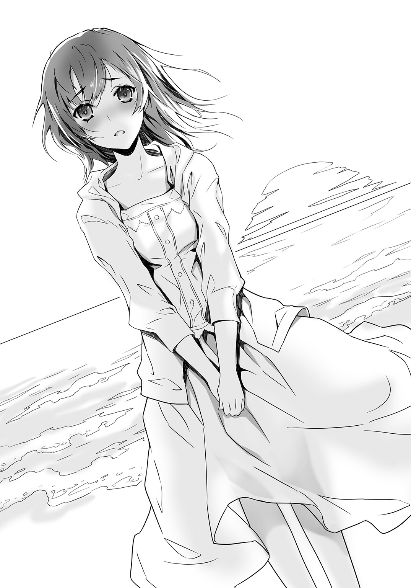
「俺とつきあってください」
窓子先輩が、ぱっと顔を上げる。
大きな驚きの表情で俺を見つめ、それから、頰や耳や首筋を、夕日よりも赤く染める。
俺はメダルのついたミサンガをほどき、窓子先輩の右手をそっととった。
窓子先輩は一瞬だけ、ぴくりと体を震わせたが、されるがままになっている。
ああ、細い手首だな......。折れそうだと思いながら、ミサンガをまき、紐を結ぶ。
ルチアが暮林を好きになったと告白したとき、二人が恋人になったら、俺はどうするのだろうと考えていた。
俺は、美園に告白したときから、ルチアに惚れかけていたから......。
ルチアと新しい関係を築けるのではないかと、期待していたから......。
ルチアのほうは、そうでなかったことがわかって、戸惑っていた。
実際、ルチアが好きな男の告白を受け入れる場面を目撃し、俺がしたことは、背中を向けて立ち去ることだった。
自分でも驚くくらい、あっさりと身を引いた。
心の海も凪いでいる。だからもう、あのもやもやした気持ちの正体を探ることはないし、それをルチアに告げることもないだろう。
俺が結んだ海色のミサンガと金色のメダルを、窓子先輩は恥ずかしさと戸惑いでいっぱいの顔で、見おろしている。やわらかな白い手を、俺のごつごつした手のひらに乗せたまま、俺はもう一度はっきりと言った。
「俺の彼女になってくれるだろうか」
俺の手のひらの上で、窓子先輩の小さな手が、ぴくりとする。
波の音が高まり、水平線が金色に染まり、それと反比例するようにあたりはゆっくりと暗くなってゆく。
そんな中。
おずおずと、うるんだ目で俺を見上げ、儚い声で、窓子先輩は答えた。
「はい」
今度は、俺は「すまん」とは言わなかった。
急に安心して、長い溜め息を吐いた。
おまけ 美園千冬のお怒り日記～告白された五分後に振られるって、どーゆーことっ
×月×日
また、あの人が、こっちを見ていた。
移動教室で廊下を歩いていたら、急に強い視線を感じて、こっそりそちらのほうをうかがうと、背が高くて、きりっとした男らしい顔立ちの彼がいたのだ。
つり上がった太い眉の下の、くっきりした二重の目は、まっすぐにわたしのほうへ向けられていて、わたしの髪や、額や、目や頰や、鼻や唇、喉へと、熱い視線は移動してゆく。
まるで、わたしのどんな細かな表情も動作も、見逃したくないというように。
わたしは顔がほてってしまって、目を、そっと伏せてしまった。
彼が、わたしを見つめていることに気づいてから、もう一週間になる。
最近では廊下だけではなく、放課後、合奏部が部活をしている音楽室の向かいの、美術室の窓際に、彼の姿を見かけるようになった。
美術室は、中庭を挟んだ向こう側にあるので、はっきりと顔が見えるわけではないけれど、あの背の高い男らしいシルエットは、彼に間違いない。
彼はいつも窓際に椅子と机を置いて、そこで作業をしている。
そうして、こちらの音楽室でフルートを吹くわたしを見ていた。
あんなに情熱的な目で見つめられて、はじめのうちは戸惑ったけれど、今は、ちょっとドキドキしている。
いつ、彼がわたしに言葉をかけてくれるのだろうと想像すると、ベッドの上を転がってしまう。
×月×日
美人でクォーターで、成績優秀でスポーツ万能という、奇跡のハイスペックで知られた藍本ルチアが、美術部に入部したらしい。
放課後、彼の隣に椅子を置いて、そこで彼と仲良さそうに作業している光景を、窓越しに見かけるようになった。
藍本さんのきらきら光る金色の髪が視界に入るたび、胸がちくちくした。
藍本さんは、彼とどんな話をしているんだろう。
彼は藍本さんのこと......そんなのいやっ。
×月×日
ただでさえ彼と藍本さんのことで、気分が晴れないのに、お姉さんの部屋に借りた本を返しにいったら、お姉さんの彼氏が遊びに来ていて、とんでもないことをしていた。
キス――であることは、間違いない。
間違いないのだけれど、日記にも書けないような――ううん、日記だからこそ書き残してはいけないようなアブノーマルな行為をともなっていて――こ、これ以上は書いちゃダメ！
でないと、美人でおっとりしていて優しくて、世間では理想の姉だと思われている、わたしのお姉さんが、救いようのない変態であることがバレてしまう。
また、お姉さんと彼氏がしていた行為以上に、わたしを驚かせたのは、彼氏がわたしと同じ合奏部の小笠原くんだったということだ。
お姉さんが、合奏部の発表会を見に、うちの学校へ来たときに知りあって、恋人同士になったという。
お姉さんは大学三年生だから、高校二年生の小笠原くんとは四学年も離れている。
今どき、それくらいの年齢差は普通かもしれないけど、小笠原くんは背が低くて顔も小さくて、入学したての一年生に見えるような女の子っぽい、ひよひよした子だ。
そんな頼りなくて、押しに弱そうな彼が、お姉さんなんかとおつきあいしたら、お姉さんに言われるまま、とんでもないことも受け入れてしまいそうで、怖い。
実際、すごいことをしていたし。
お姉さんも、よりによって、わたしの部活仲間に手を出さなくたって！
小笠原くんが真っ赤な顔で帰宅したあと、わたしがお姉さんにそう怒ったら、お姉さんは、「だって可愛すぎて、運命だと思ってしまったんですもの」と、ふんわり、ほんわりした笑顔で答えたので、さらにイラッとした。
×月×日
合奏部の練習中、小笠原くんの顔をまともに見ることができない。向こうも、わたしのことを気にしていて、ときどき目があったりするから最悪だ。
美術部の彼と藍本さんが、ますます親密そうなのも、最低！
×月×日
クラスの男子が、藍本さんが美術部の彼とつきあっていると、噂していた。二人は手を繫いで仲良く下校しているのだと。
大ショック！
彼は、わたしのことが、好きだと思っていたのに。
じゃあ、あんなふうに、わたしのことを熱い目で見ていたのは、なんだったの？
×月×日
美術部の彼の気持ちがわからなくて、もやもやする。
いっそ、わたしのほうから、彼に告白して――でも、彼と藍本さんが本当につきあっているなら、告白するだけ無駄ではないか。
ああ、どうしよう。
×月×日
最っっっ悪！
美術部の彼に、告白された。
俺は、ずっと美園が好きだったと言われて、その五分後に振られた。自分でも、なにを書いているのか、よくわからない。
けれど、現実にあったことだ。
彼が美術部で制作した、不気味で淫猥なオブジェを見せられて、ただ自分の気持ちを伝えたかっただけで、おかげであきらめられそうだ、なんて言い出したときからすでに理解不能で、わたしが焦って、わたしもあなたのことが好きですというようなことを伝えたら、いきなり固まってしまい、そのあと頭を下げて、
「すまん」
とお断りされてしまった。
わたしとはつきあえないと。
じゃあ、なんで告白した！
もう、ほんんんんんんと、信じられないっ。あんた、わたしに不気味な像を見せたかっただけと違う？
それとも視姦マニアの告白魔かなんか？
もうもう、最低！ 最低！
てか、なんでわたしが、そっちにフラれたみたくなってるわけ！
真田大輝！
最低の名前だ！
もう絶対、絶対、許さない！
混乱して涙ぐみながら逃げ出してしまったけれど、その前に、ひっぱたいて、ケリを入れてやればよかった。
×月×日
わたしの気持ちをモテあそんで、わたしに猥褻物を見せつけたあと、振っておきながら、放課後、向かいの美術室で金髪美人と毎日毎日毎日、いちゃいちゃしている真田大輝は万死に値すると思う。
×月×日
真田大輝が、合奏部の臨時顧問の暮林先生（♂）を、野獣のような目で見つめているのを見てしまった。
まさか、男もＯＫなの？
×月×日
真田大輝が、通学電車の中で、お姉さんの彼氏の小笠原くんに痴漢行為を働いたという！ 小笠原くんに確認したら、真っ赤な顔でもじもじしながら、認めていた。
あの男は、お姉さんと張る変態だ！
もう我慢できない。わたしの周りで変態行為を働くなと、言ってやる。暮林先生も、小笠原くんも頼りないから、わたしが二人を、真田大輝の毒牙から守らなければ。
×月×日
真田くんは、暮林先生のことは遊びではなく、本気なのかもしれない......。暮林先生のことで一生懸命になっているのに、ちょっときゅんとしてしまう。
ううん、騙されちゃダメ。
×月×日
やっぱり真田大輝は、最低だ！
今日、合奏部の練習中、二年生の雛崎弓華が、もじもじとわたしに近づいたと思ったら、口を尖らせて赤い顔で、真田くんのことを訊いてきた。
彼と藍本さんは、つきあっているのかとか。真田くんの趣味とか、休日はなにをしているのだろうとか。
そんなの知るか！
てか、なんで雛崎さんが真田くんに興味を持っちゃってるわけ？ ううん、そんな段階は通り越して、これもう、真田くんに惚れちゃってるよね？
わたしがそう尋ねたら、雛崎さんはますます真っ赤になって眉をつり上げ、逆ギレして、
「そそそそそそんなこと！ あるわけないでしょう！ そんなことを言う美園さんこそ、真田くんのことが好きなんじゃないの？」
なんて言うから、
「好きなはずないでしょう。あんな変態！」
と言い返したら、
「じゃあ、あ、あたしが彼と仲良くなっても、その......美園さんは、い、いいのよね......」
と、急にまたもじもじしながら言ったので、ええ、どうぞ、ご自由に、と言いかけた。
そうだ、自分から変態の毒牙にかかりたいというなら、わたしが止める筋合いはない。雛崎さんとわたしは部活が一緒というだけで、親しいわけではないし。そもそもわたしは、真田くんのことは、もうただの変態としか思っていないのだから。
雛崎さんが勘ぐったようなことは、本当になにひとつなくて。だから、うんとひややかに、ご自由に、とひとこと――。
わたしは、すっと口を開いた。
雛崎さんを見据えて、きっぱりと、はっきりと。
「ダメ」
あ と が き
こんにちは、野村美月です。
本作の第一話『バイオリンの天使とフルートの妖精。そして不埒な俺たち』は、二〇一三年にファミ通文庫さんから刊行した『部活アンソロジー②「春」』に収録した『鑑賞部の不埒な倫理』の再録になります。当時、この短編を書き終えたあと、主役の真田くんと藍本さんの行く末が気になって、続きを二話ほど書いてみました。
そのときは出版までいたらなかったのですが、今回あらたに加筆修正してダッシュエックス文庫さんで出していただくことができて非常に幸運でした。収録作品の使用をご承諾くださったファミ通文庫さんに、心から御礼を申し上げます。ありがとうございました。
一話の内容は、私の友人のエピソードから発想しました。そちらについては、『春』のあとがきで語っておりますので、よろしかったら御覧になってみてください。私の作品の他にも、部活動を題材にしたユニークな作品や、直球で感動する作品がつまった味わい深いアンソロジーで、お薦めです！
またそちらのアンソロジーでは、漫画家の千田衛人様が素敵なイラストを描いてくださいました。こちらも必見です。
一方今作では、イラストレーターのふゆの春秋様に、真田くんや藍本さんをたっぷり描いていただいております。ふゆのさんの淡いのにあざやかでもある色使いや、繊細なタッチが以前から大好きだったので、引き受けていただいて本当に嬉しかったです。ふゆのさんの描かれるクール系美少女の透明で気品のある表情が大好きです！ 出来上がりを拝見するのが、楽しみでなりません。
本作は、もうちょっとだけ続きます。
二巻目は秋を予定しております。それほどお待たせせずに出せると思いますので、ぜひ続きもお手にとってみてください。
また、六月にファミ通文庫さんから読み切りで『下読み男子と投稿女子～優しい空が見た、内気な海の話。』も発売中です。現在進行形で新人賞の下読みのお仕事をしているプロの下読み人の私が、下読みのバイトをしている高校生の男の子を主人公にして描いた、恋物語です。
ライトノベルでは多分はじめての試みになる〝下読み〟と〝投稿者〟の青春小説を、ぜひぜひ御覧ください。
よろしくお願いいたします。
二〇一五年六月二十二日 野 村 美 月
著者紹介
野村美月 のむら みづき
福島出身、東京在住。
代表作は『〝文学少女〟』シリーズ、『ヒカルが地球にいたころ......』等。
最近、生まれて初めての携帯を購入しました。
illustration
ふゆの春秋 ふゆの はるあき
イラストレーター。趣味は銃器、自転車。
ダッシュエックス文庫DIGITAL
ＳとＳの不埒な同盟
著者 野村美月
© MIZUKI NOMURA 2015
２０１５年８月31日発行
この電子書籍は、ダッシュエックス文庫「ＳとＳの不埒な同盟」
２０１５年７月29日発行の第１刷を底本としています。
発行者 鈴木晴彦
発行所 株式会社 集英社
〒１０１－８０５０
東京都千代田区一ツ橋２丁目５番10号
０３－３２３０－６０８０（読者係）
制作所 株式会社ＩＣＥ
本作品の全部また一部を無断で複製、転載、改竄、インターネット上に掲載すること、および有償無償に関わらず、本データを第三者に譲渡することを禁じます。なお個人利用の目的であっても、コピーガードを解除しての複製は、法律で禁じられています。